DRAFT — UE26MA141A · Unit_02 — Unit 2 · Complete Unit Master
·How to use this pack
Search this single unit master by lesson, timestamp, slide text or source page. Read the transcript in timestamp order, then compare extracted slide text with its page-faithful source figure. Formula candidates and archive question mappings are explicitly flagged for review. Topics include the applicable parts: overview, key terms, formulas, figures, flowcharts, important points, worked examples, past-paper questions and a recap. IDs are shared with the separate documents: E = formula, G = graph, F = flowchart, W = worked example. Each ID is numbered by topic, so E4.2 is the second formula of topic 4.
1UE26MA141A · Unit_02: Unit 2
This unit master organizes source material for Engineering Mathematics - I, Unit_02, officially titled Unit 2. It includes 16 video transcripts and 11 source slide decks, with page-level text and rendered images where available. This draft preserves source wording and page order; it does not claim a complete human subject review or full audiovisual review. EV0000001
2Introduction to higher order differential equations, complementary function and particular integral
This lesson is indexed from the source video titled Introduction to higher order differential equations, complementary function and particular integral. Its complete timestamped transcript is preserved below in segment order. The original video path and content hash are recorded in datasets/lecture-corpus.json. Transcript text is source wording; it has not been silently corrected or rewritten. A candidate slide deck is grouped here according to the current matching score; the exact path and page locators are listed in the source evidence. EV0000002 · EV0000003
Graphs and diagrams
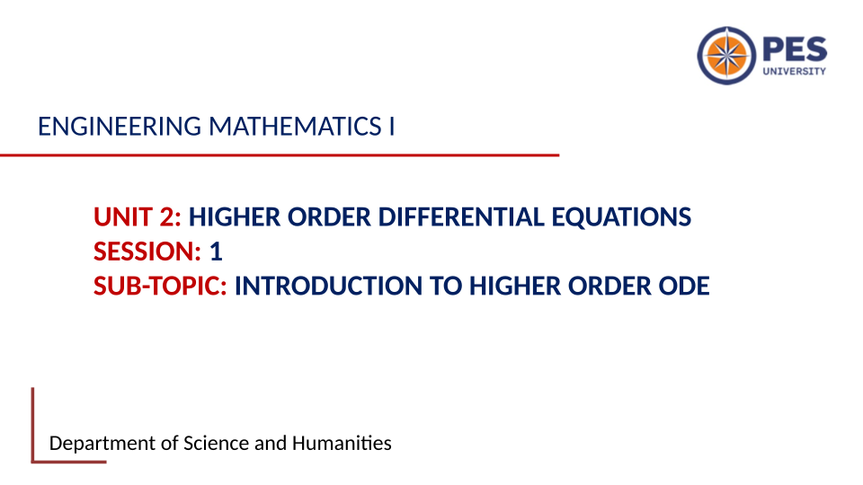
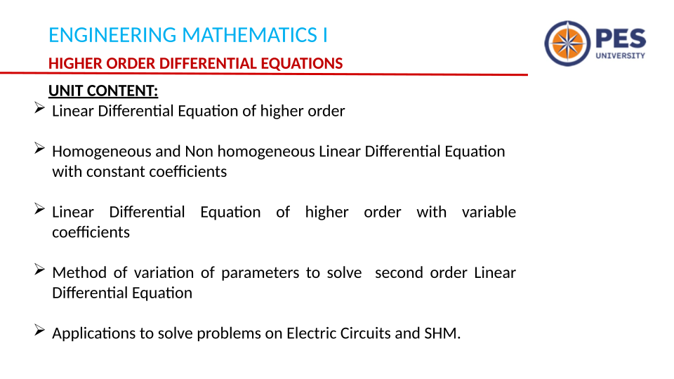
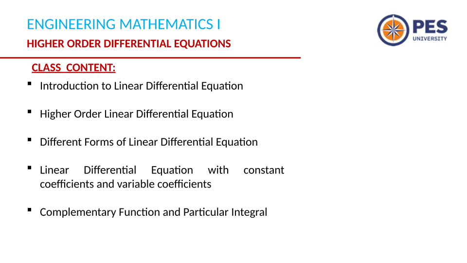
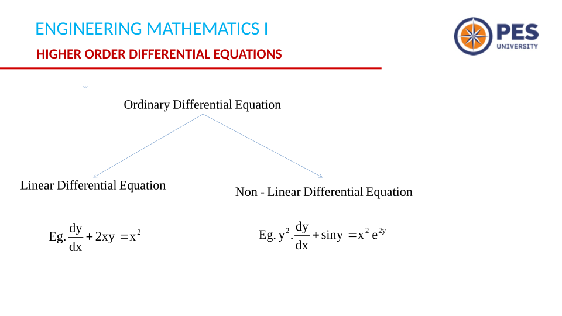
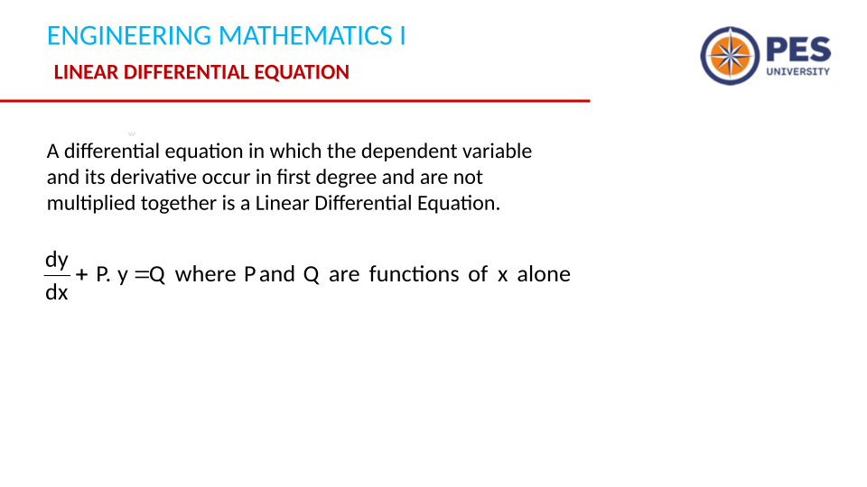
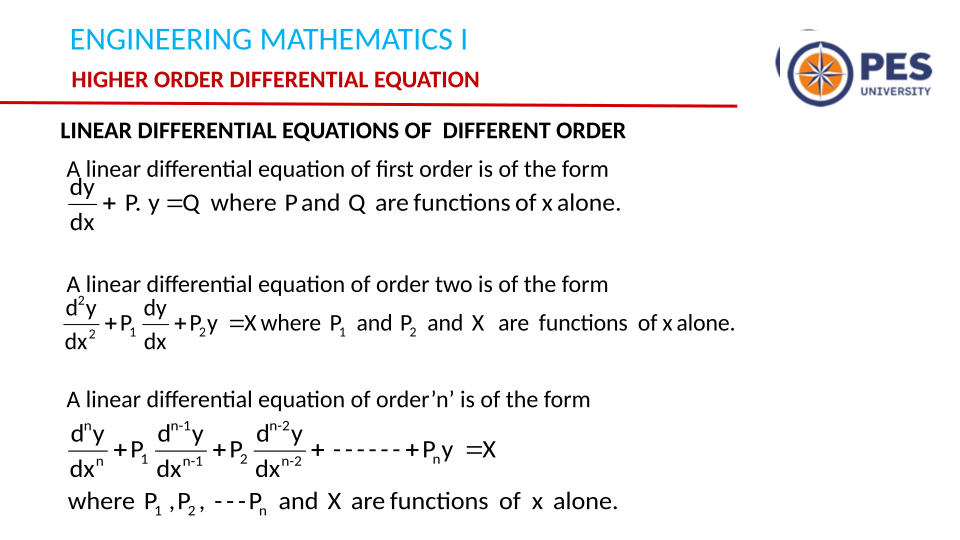
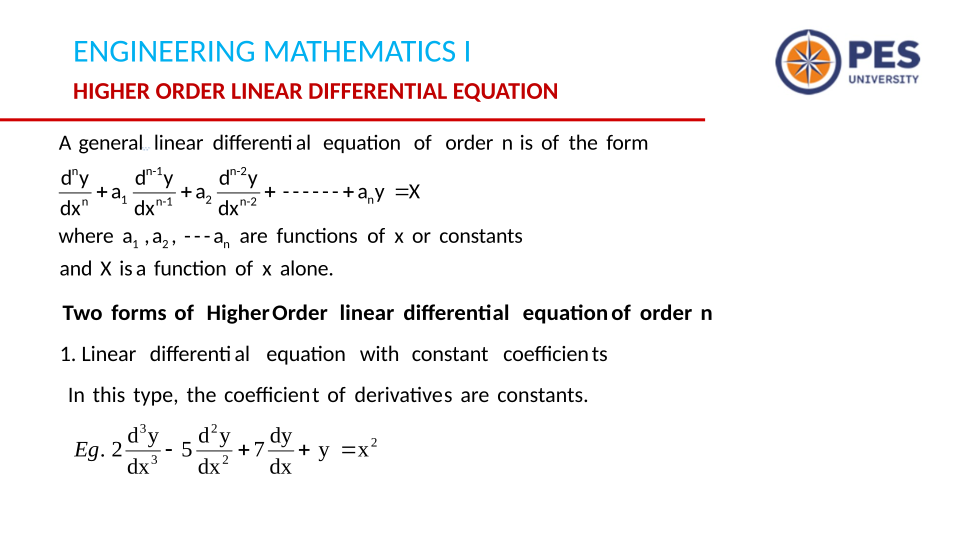
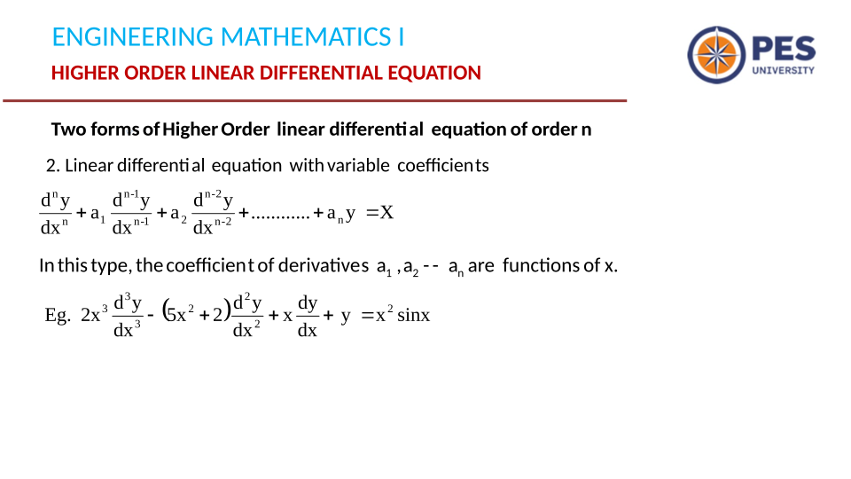
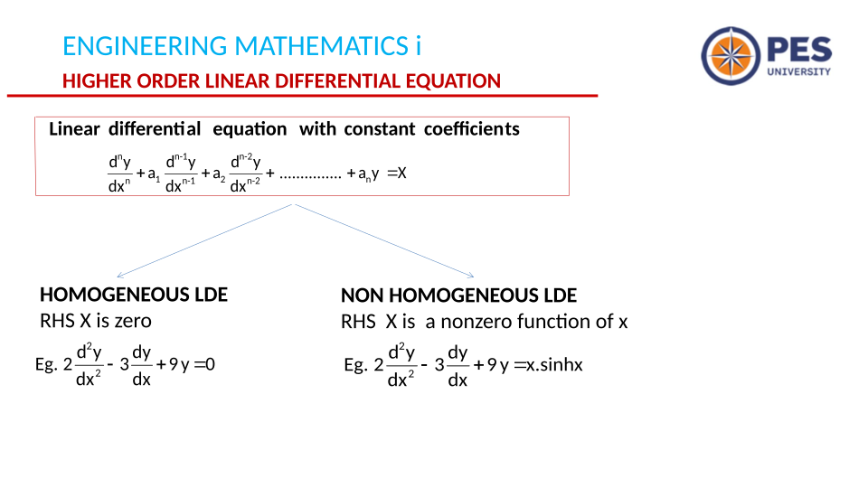
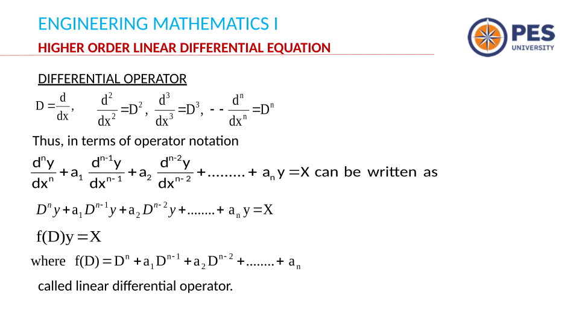
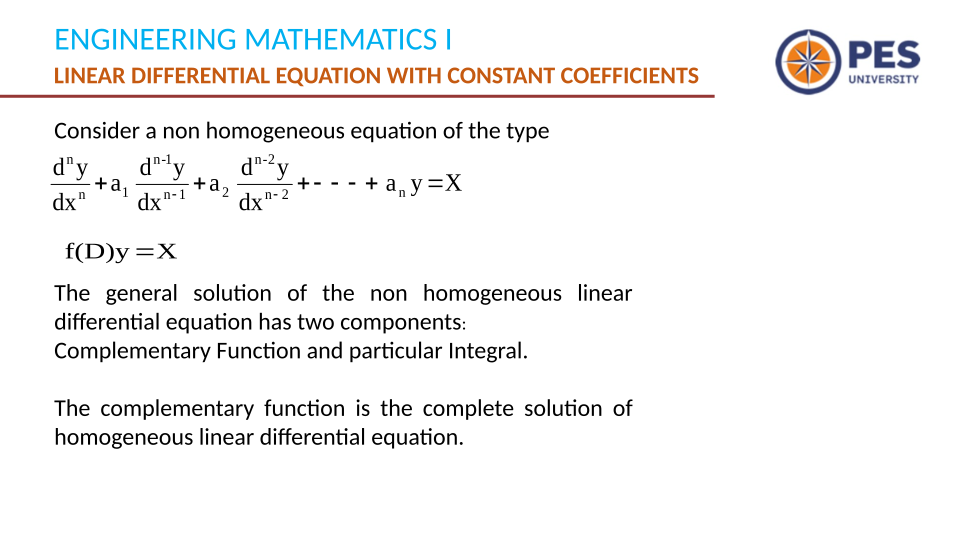
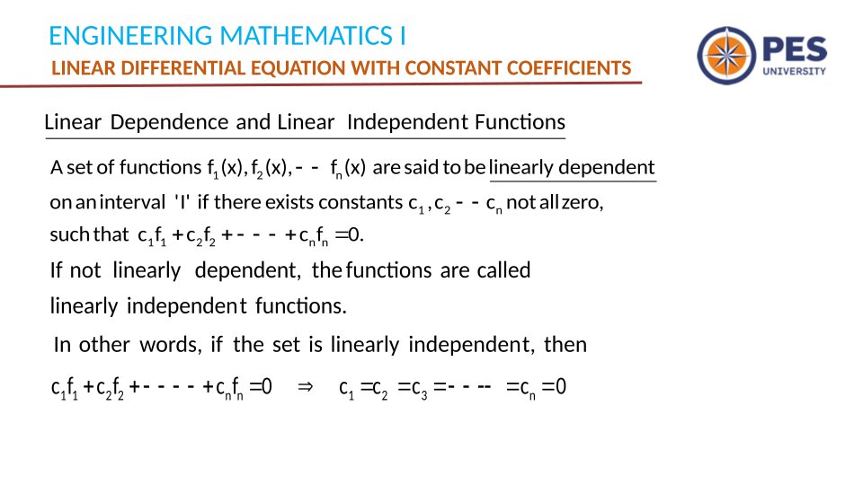
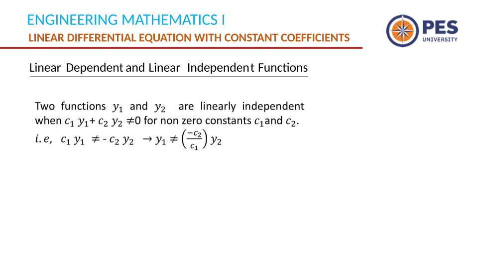
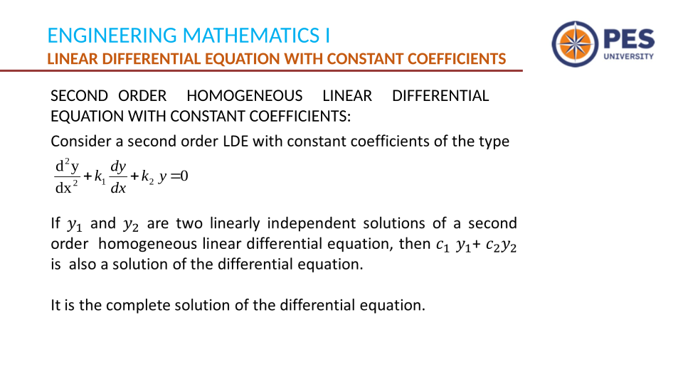
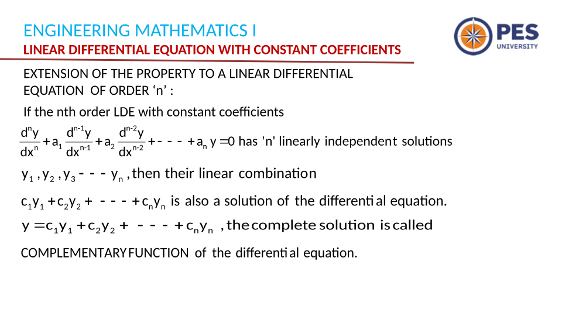
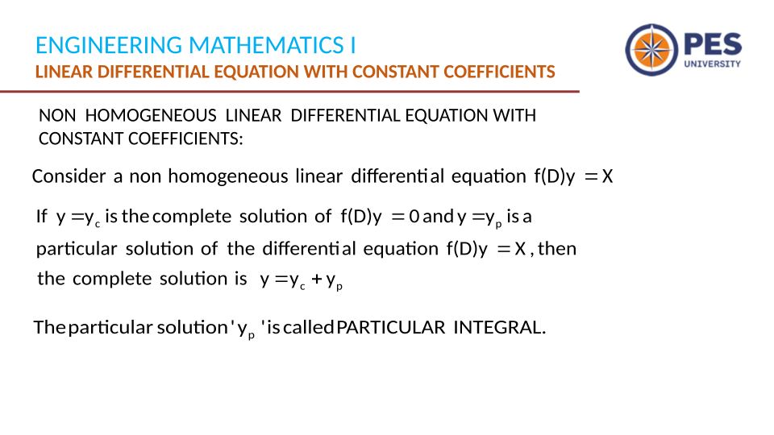

Important points and why
- Source slide page 1 (extracted text): [Image text, OCR] PES UNIVERSITY CELEBRATING5OYEARS ENGINEERING MATHEMATICS - I UE26MA141A Department of Science and Humanities EV0000266 · EV0000267 · EV0000268
- Source slide page 2 (extracted text): ENGINEERING MATHEMATICS I UNIT 2: HIGHER ORDER DIFFERENTIAL EQUATIONS SESSION: 1 SUB-TOPIC: Introduction to higher order ode Department of Science and Humanities EV0000269 · EV0000270 · EV0000271
- Source slide page 3 (extracted text): ENGINEERING MATHEMATICS I HIGHER ORDER DIFFERENTIAL EQUATIONS UNIT CONTENT: Linear Differential Equation of higher order Homogeneous and Non homogeneous Linear Differential Equation with constant coefficients Linear Differential Equation of higher order with variable coefficients Method of variation of parameters to solve second order Linear Differential Equation Applications to solve problems on Electric Circuits and SHM. EV0000272 · EV0000273 · EV0000274
- Source slide page 4 (extracted text): ENGINEERING MATHEMATICS I HIGHER ORDER DIFFERENTIAL EQUATIONS CLASS CONTENT: Introduction to Linear Differential Equation Higher Order Linear Differential Equation Different Forms of Linear Differential Equation Linear Differential Equation with constant coefficients and variable coefficients Complementary Function and Particular Integral EV0000275 · EV0000276 · EV0000277
- Source slide page 5 (extracted text): ENGINEERING MATHEMATICS I HIGHER ORDER DIFFERENTIAL EQUATIONS EV0000278 · EV0000279 · EV0000280
- Source slide page 6 (extracted text): ENGINEERING MATHEMATICS I LINEAR DIFFERENTIAL EQUATION A differential equation in which the dependent variable and its derivative occur in first degree and are not multiplied together is a Linear Differential Equation. EV0000281 · EV0000282 · EV0000283
- Source slide page 7 (extracted text): ENGINEERING MATHEMATICS I HIGHER ORDER DIFFERENTIAL EQUATION LINEAR DIFFERENTIAL EQUATIONS OF DIFFERENT ORDER A linear differential equation of first order is of the form A linear differential equation of order two is of the form A linear differential equation of order’n’ is of the form EV0000284 · EV0000285 · EV0000286
- Source slide page 8 (extracted text): ENGINEERING MATHEMATICS I HIGHER ORDER LINEAR DIFFERENTIAL EQUATION EV0000287 · EV0000288 · EV0000289
- Source slide page 9 (extracted text): ENGINEERING MATHEMATICS I HIGHER ORDER LINEAR DIFFERENTIAL EQUATION EV0000290 · EV0000291 · EV0000292
- Source slide page 10 (extracted text): ENGINEERING MATHEMATICS i HIGHER ORDER LINEAR DIFFERENTIAL EQUATION HOMOGENEOUS LDE RHS X is zero NON HOMOGENEOUS LDE RHS X is a nonzero function of x EV0000293 · EV0000294 · EV0000295
- Source slide page 11 (extracted text): ENGINEERING MATHEMATICS I HIGHER ORDER LINEAR DIFFERENTIAL EQUATION DIFFERENTIAL OPERATOR Thus, in terms of operator notation called linear differential operator. EV0000296 · EV0000297 · EV0000298
- Source slide page 12 (extracted text): ENGINEERING MATHEMATICS I LINEAR DIFFERENTIAL EQUATION WITH CONSTANT COEFFICIENTS Consider a non homogeneous equation of the type The general solution of the non homogeneous linear differential equation has two components: Complementary Function and particular Integral. The complementary function is the complete solution of homogeneous linear differential equation. EV0000299 · EV0000300 · EV0000301
- Source slide page 13 (extracted text): ENGINEERING MATHEMATICS I LINEAR DIFFERENTIAL EQUATION WITH CONSTANT COEFFICIENTS EV0000302 · EV0000303 · EV0000304
- Source slide page 14 (extracted text): ENGINEERING MATHEMATICS I LINEAR DIFFERENTIAL EQUATION WITH CONSTANT COEFFICIENTS EV0000305 · EV0000306 · EV0000307
- Source slide page 15 (extracted text): ENGINEERING MATHEMATICS I LINEAR DIFFERENTIAL EQUATION WITH CONSTANT COEFFICIENTS SECOND ORDER HOMOGENEOUS LINEAR DIFFERENTIAL EQUATION WITH CONSTANT COEFFICIENTS: EV0000308 · EV0000309 · EV0000310
- Source slide page 16 (extracted text): ENGINEERING MATHEMATICS I LINEAR DIFFERENTIAL EQUATION WITH CONSTANT COEFFICIENTS EXTENSION OF THE PROPERTY TO A LINEAR DIFFERENTIAL EQUATION OF ORDER ‘n’ : If the nth order LDE with constant coefficients EV0000311 · EV0000312 · EV0000313
- Source slide page 17 (extracted text): ENGINEERING MATHEMATICS I LINEAR DIFFERENTIAL EQUATION WITH CONSTANT COEFFICIENTS NON HOMOGENEOUS LINEAR DIFFERENTIAL EQUATION WITH CONSTANT COEFFICIENTS: EV0000314 · EV0000315 · EV0000316
- Source slide page 18 (extracted text): [Image text, OCR] PES UNIVERSITY CELEBRATING5OYEARS Thank you Department of Science and Humanities EV0000317 · EV0000318 · EV0000319
3Rules for finding the Complementary Function, Problems
This lesson is indexed from the source video titled Rules for finding the Complementary Function, Problems. Its complete timestamped transcript is preserved below in segment order. The original video path and content hash are recorded in datasets/lecture-corpus.json. Transcript text is source wording; it has not been silently corrected or rewritten. No slide deck is assigned to this video; candidate slide sources remain separate in the unit master. EV0000026 · EV0000027
4Particular integral of standard functions - Type 1
This lesson is indexed from the source video titled Particular integral of standard functions - Type 1. Its complete timestamped transcript is preserved below in segment order. The original video path and content hash are recorded in datasets/lecture-corpus.json. Transcript text is source wording; it has not been silently corrected or rewritten. A candidate slide deck is grouped here according to the current matching score; the exact path and page locators are listed in the source evidence. EV0000046 · EV0000047
Graphs and diagrams

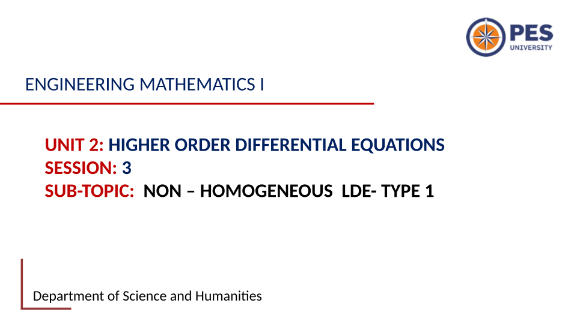
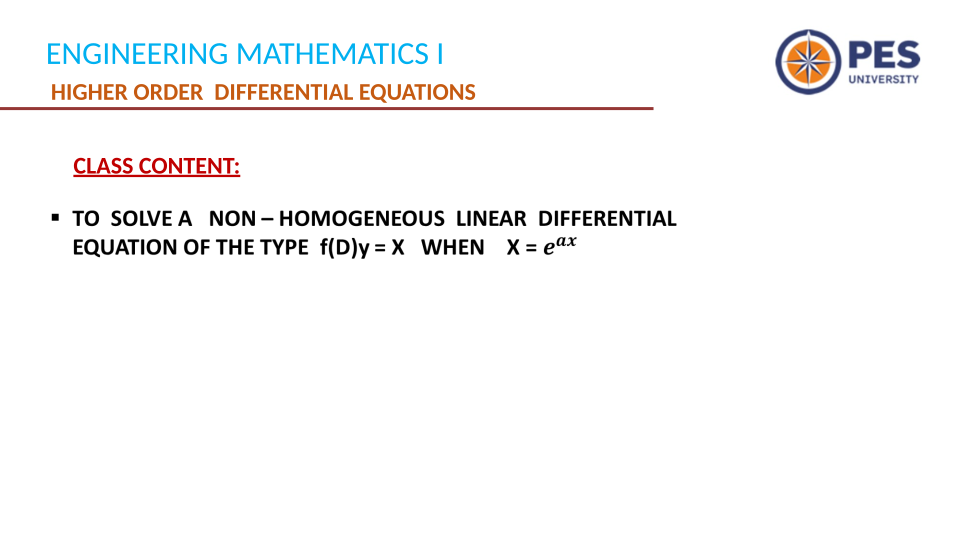
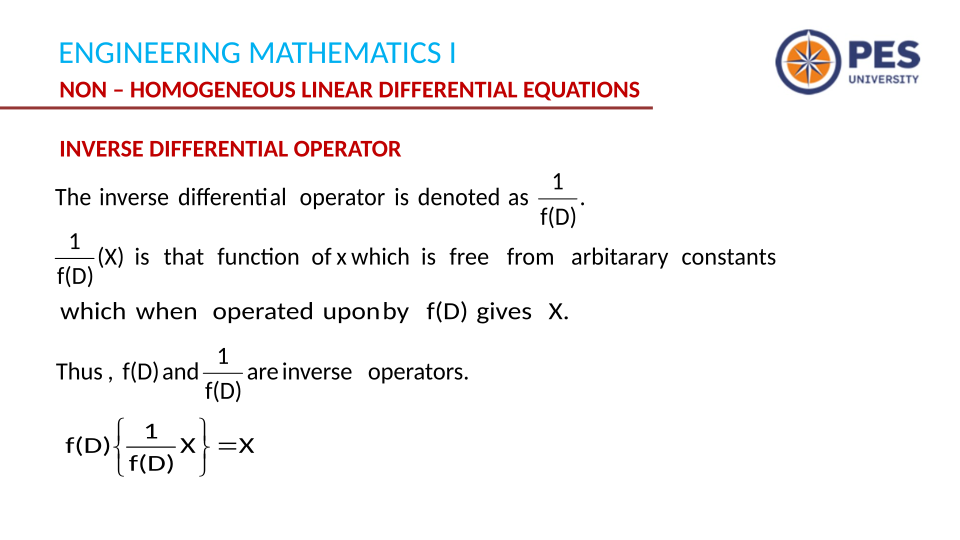
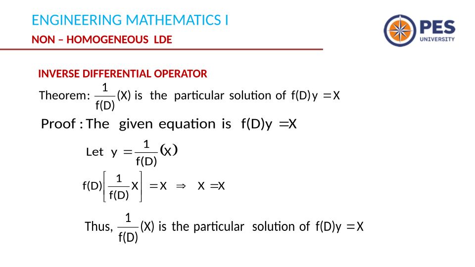
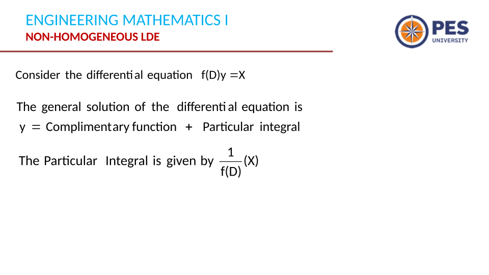
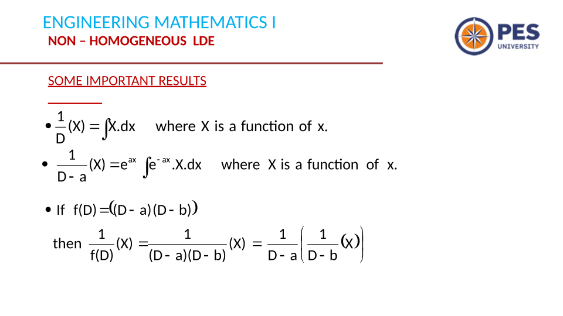
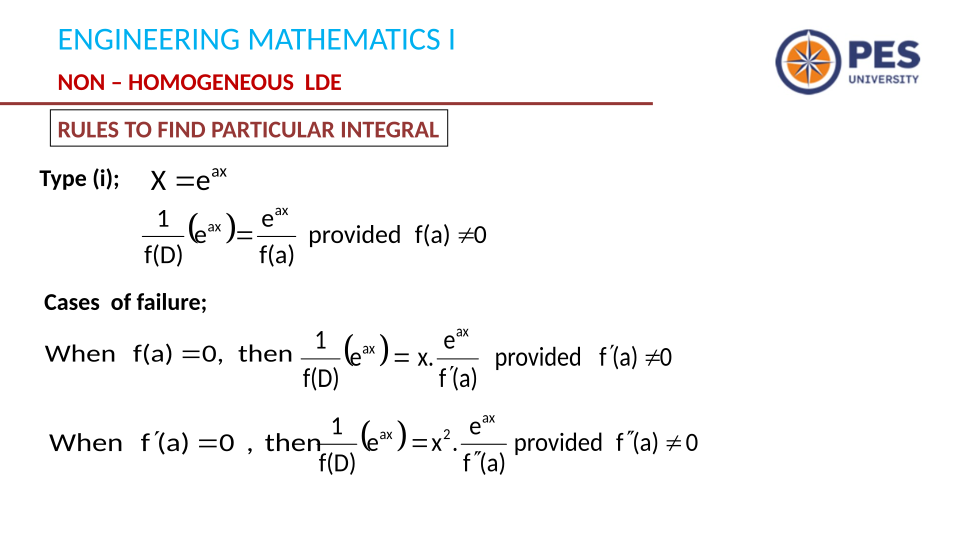
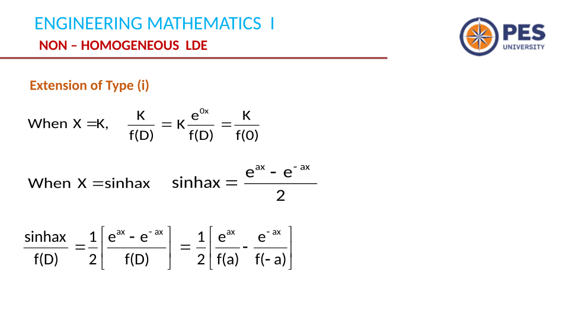
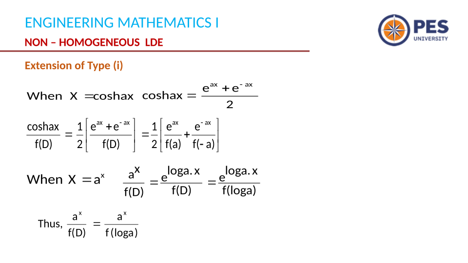
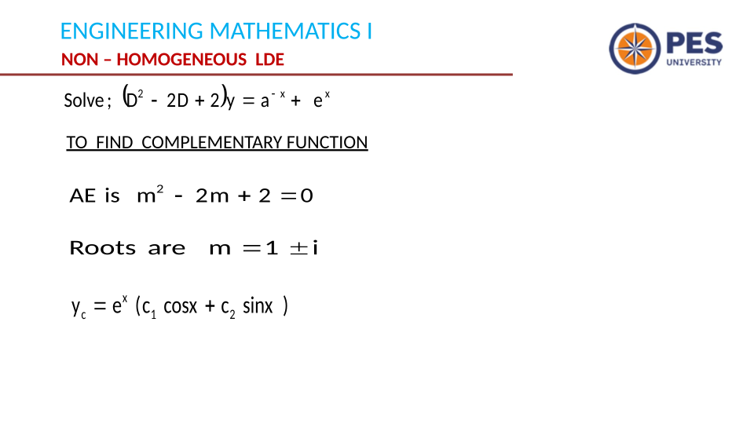
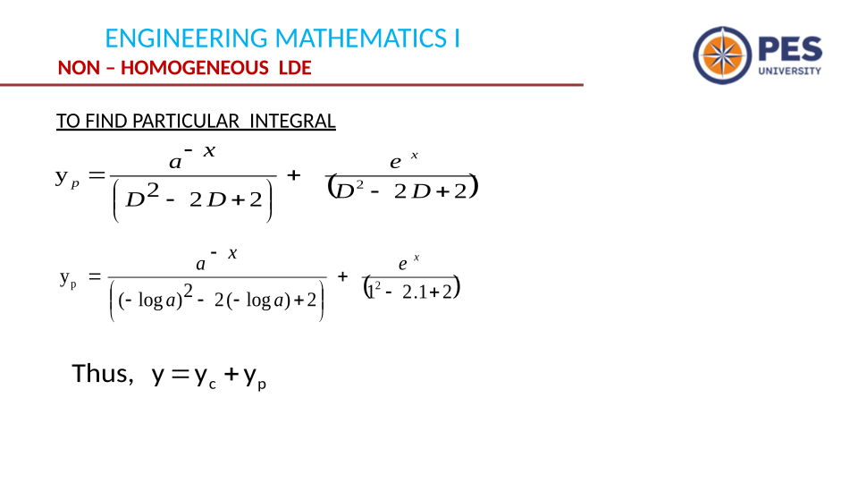
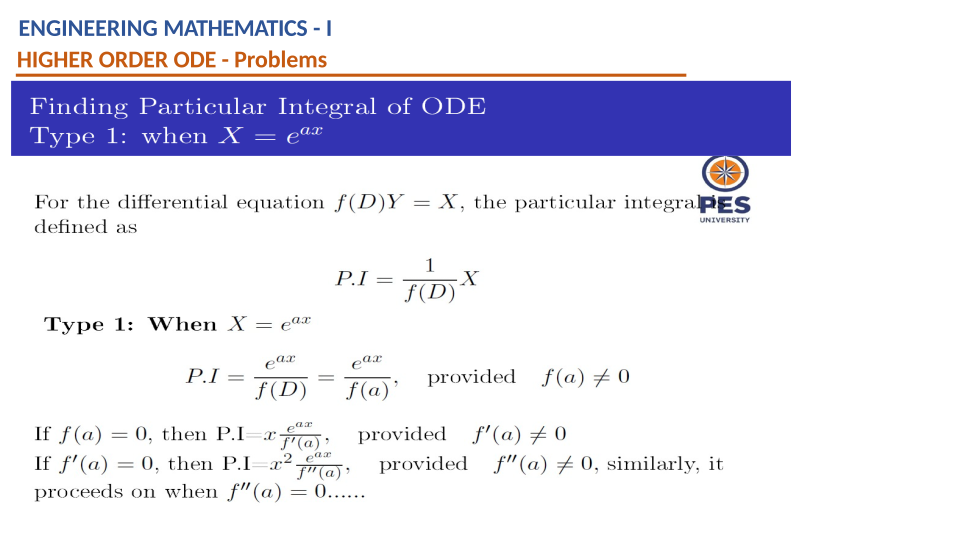
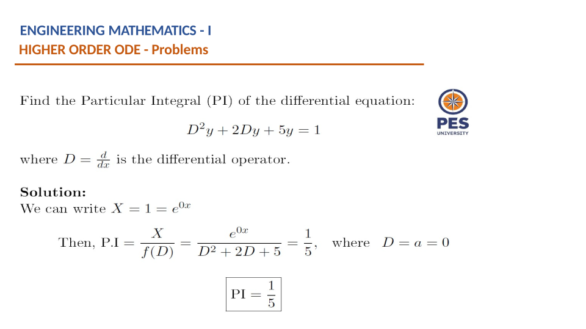
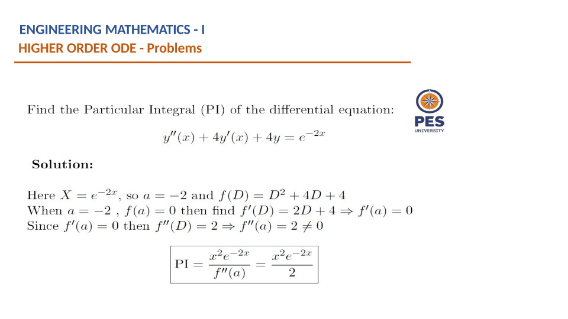
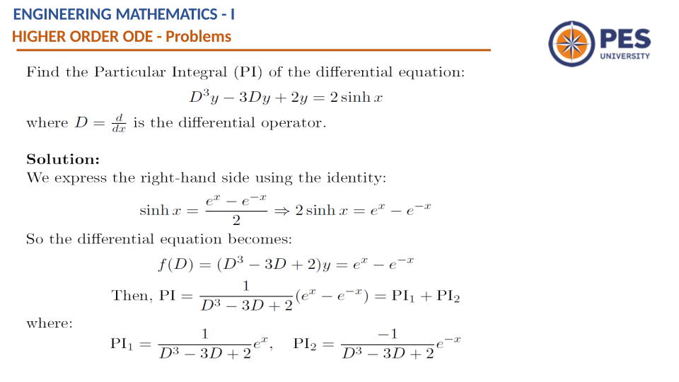
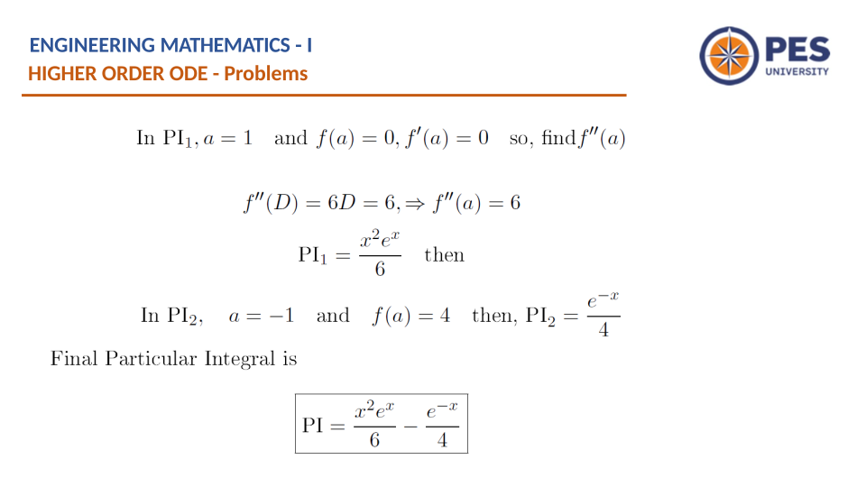

Important points and why
- Source slide page 1 (extracted text): [Image text, OCR] PES UNIVERSITY CELEBRATING5OYEARS ENGINEERING MATHEMATICS - I UE26MA141A Department of Science and Humanities EV0000365 · EV0000366 · EV0000367
- Source slide page 2 (extracted text): ENGINEERING MATHEMATICS I UNIT 2: HIGHER ORDER DIFFERENTIAL EQUATIONS SESSION: 3 SUB-TOPIC: NON – HOMOGENEOUS LDE- TYPE 1 Department of Science and Humanities EV0000368 · EV0000369 · EV0000370
- Source slide page 3 (extracted text): ENGINEERING MATHEMATICS I HIGHER ORDER DIFFERENTIAL EQUATIONS CLASS CONTENT: EV0000371 · EV0000372 · EV0000373
- Source slide page 4 (extracted text): ENGINEERING MATHEMATICS I NON – HOMOGENEOUS LINEAR DIFFERENTIAL EQUATIONS INVERSE DIFFERENTIAL OPERATOR EV0000374 · EV0000375 · EV0000376
- Source slide page 5 (extracted text): ENGINEERING MATHEMATICS I NON – HOMOGENEOUS LDE INVERSE DIFFERENTIAL OPERATOR EV0000377 · EV0000378 · EV0000379
- Source slide page 6 (extracted text): ENGINEERING MATHEMATICS I NON-HOMOGENEOUS LDE EV0000380 · EV0000381 · EV0000382
- Source slide page 7 (extracted text): ENGINEERING MATHEMATICS I NON – HOMOGENEOUS LDE SOME IMPORTANT RESULTS EV0000383 · EV0000384 · EV0000385
- Source slide page 8 (extracted text): ENGINEERING MATHEMATICS I NON – HOMOGENEOUS LDE RULES TO FIND PARTICULAR INTEGRAL Type (i); Cases of failure; EV0000386 · EV0000387 · EV0000388
- Source slide page 9 (extracted text): ENGINEERING MATHEMATICS I NON – HOMOGENEOUS LDE Extension of Type (i) EV0000389 · EV0000390 · EV0000391
- Source slide page 10 (extracted text): ENGINEERING MATHEMATICS I NON – HOMOGENEOUS LDE Extension of Type (i) EV0000392 · EV0000393 · EV0000394
- Source slide page 11 (extracted text): ENGINEERING MATHEMATICS I NON – HOMOGENEOUS LDE TO FIND COMPLEMENTARY FUNCTION EV0000395 · EV0000396 · EV0000397
- Source slide page 12 (extracted text): ENGINEERING MATHEMATICS I NON – HOMOGENEOUS LDE TO FIND PARTICULAR INTEGRAL EV0000398 · EV0000399 · EV0000400
- Source slide page 13 (extracted text): ENGINEERING MATHEMATICS - I HIGHER ORDER ODE - Problems [Image text, OCR] Finding Particular Integral of ODE Type 1: when X ac = e [Image text, OCR] For the differential equation f(D)Y = X, the particular integralpES defined as UNIVERSITY P.I = X f(D) Type 1: When X = ear eac eax P.I = provided f(a) ≠ 0 f(D) f(a) If f(a) = 0, then P.I= eax provided f'(a) ≠ 0 f'(a) ; provided f"(a) ≠ O, similarly, it f!"(a); proceeds on when f"(a) = O... EV0000401 · EV0000402 · EV0000403
- Source slide page 14 (extracted text): ENGINEERING MATHEMATICS - I HIGHER ORDER ODE - Problems [Image text, OCR] Find the Particular Integral (Pl) of the differential equation: PES D²y + 2Dy + 5y = 1 UNIVERSITY where D = - Solution: We can write X = 1 = eOr X 0c Then, P.I = where D = a = 0 f(D) D2 + 2D + 5 5 1 PI = 5 EV0000404 · EV0000405 · EV0000406
- Source slide page 15 (extracted text): ENGINEERING MATHEMATICS - I HIGHER ORDER ODE - Problems [Image text, OCR] Find the Particular Integral (PI) of the differential equation: PES y"(αc) + 4y'(x) + 4y = e-2x UNIVERSITY Solution: Here X = e-2, so α = -2 and f(D) = D2 + 4D + 4 When α = -2 , f(a) = 0 then find f'(D) = 2D + 4 → f'(a) = 0 Since f'(a) = 0 then f"(D) = 2 → f"(a) = 2 ≠ 0 α2e-2x x2e-2x PI = f"(a) 2 EV0000407 · EV0000408 · EV0000409
- Source slide page 16 (extracted text): ENGINEERING MATHEMATICS - I HIGHER ORDER ODE - Problems [Image text, OCR] Find the Particular Integral (PI) of the differential equation: D²y - 3Dy + 2y = 2sinh c where D = Solution: We express the right-hand side using the identity: e" -e- sinh = - → 2sinh = e - e-r 2 So the differential equation becomes: f(D) = (D3 - 3D + 2)y = e - e-α 1 Then, PI = (e" - e-") = PI1 + PI2 D3 -3D + 2 where: 1 -1 PI1 = - Pl2 = D3 - 3D + 2 D3 -3D +2 P EV0000410 · EV0000411 · EV0000412
- Source slide page 17 (extracted text): ENGINEERING MATHEMATICS - I HIGHER ORDER ODE - Problems [Image text, OCR] In PIi,a = 1 and f(a) = 0, f'(a) = 0 so, findf"(a) f"(D) = 6D = 6,→ f"(a) = 6 x2ec PI1 = - then 6 In PI2, a = -1 and f(a)= 4 then, PI2 三 4 Final Particular Integral is -C e PI= 6 EV0000413 · EV0000414 · EV0000415
- Source slide page 18 (extracted text): [Image text, OCR] PES UNIVERSITY CELEBRATING5OYEARS Thank you Department of Science and Humanities EV0000416 · EV0000417 · EV0000418
5Particular integral_Type 1 and Type 2
This lesson is indexed from the source video titled Particular integral_Type 1 and Type 2. Its complete timestamped transcript is preserved below in segment order. The original video path and content hash are recorded in datasets/lecture-corpus.json. Transcript text is source wording; it has not been silently corrected or rewritten. A candidate slide deck is grouped here according to the current matching score; the exact path and page locators are listed in the source evidence. EV0000066 · EV0000067
Graphs and diagrams

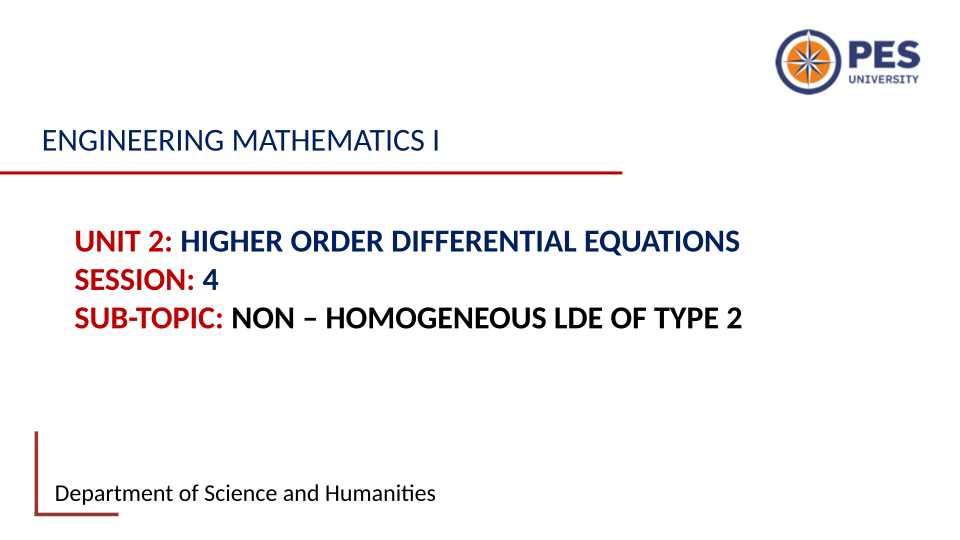
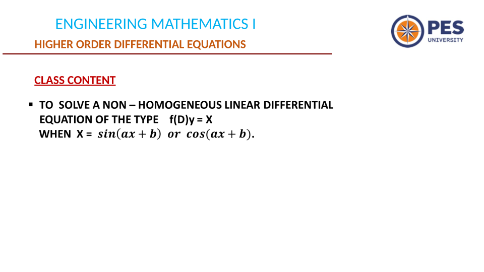
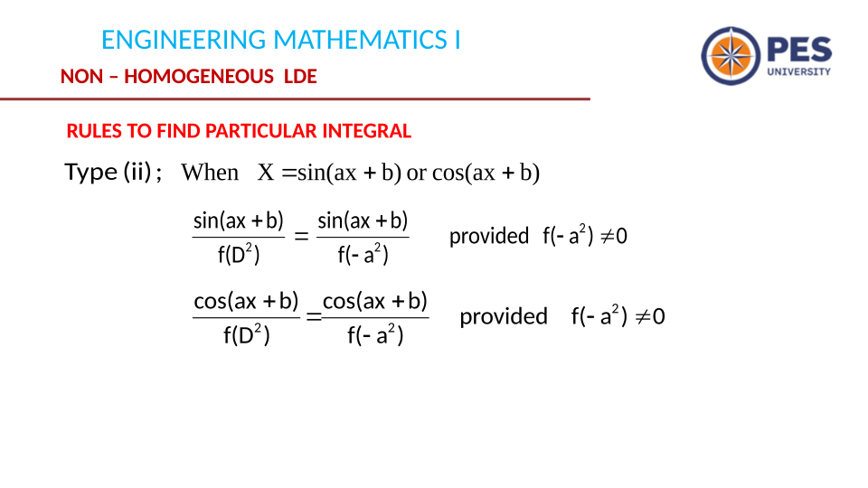
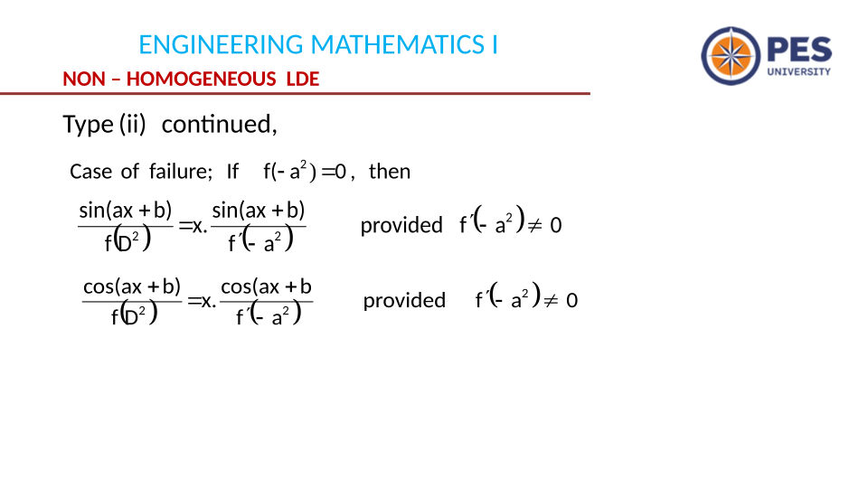
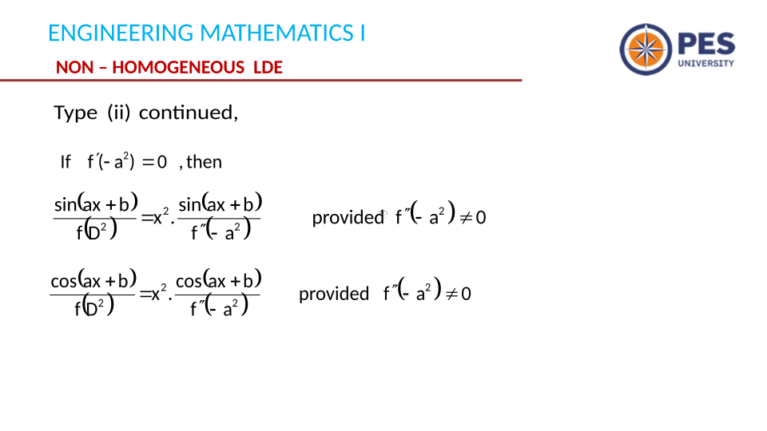
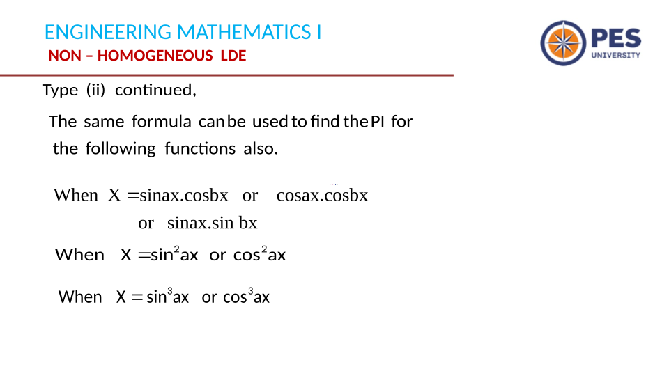
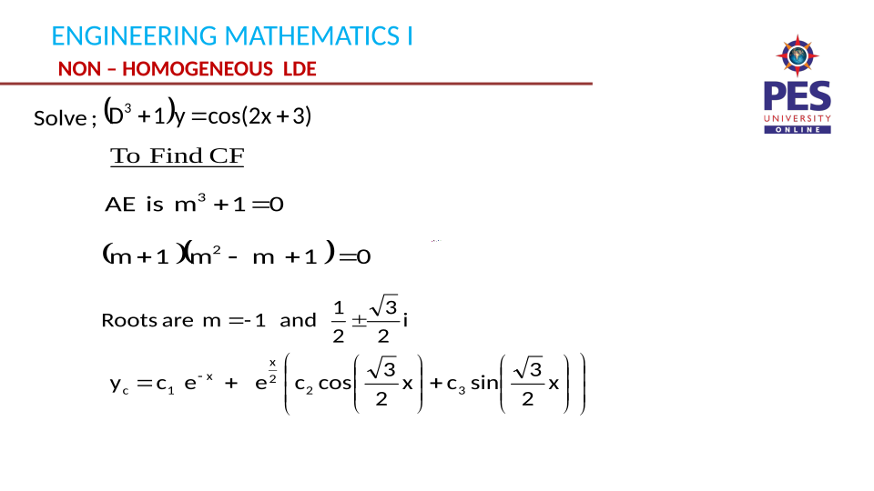
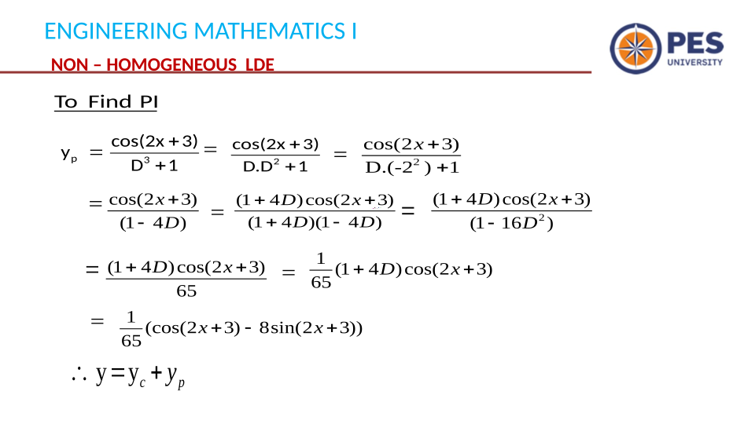
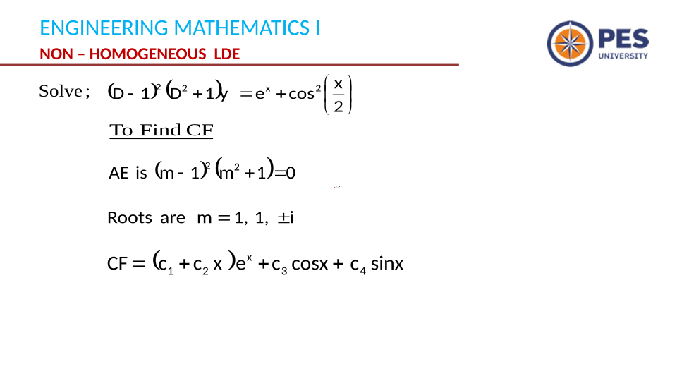
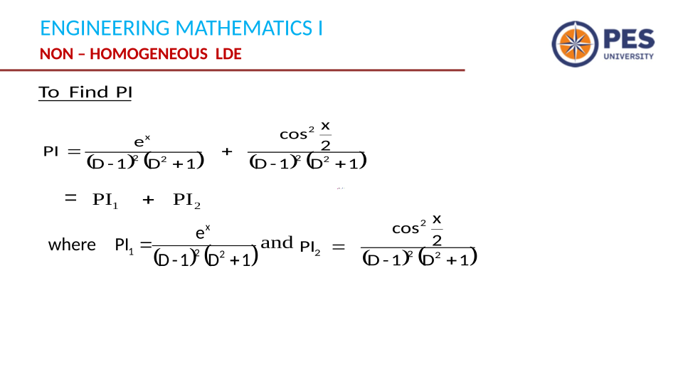
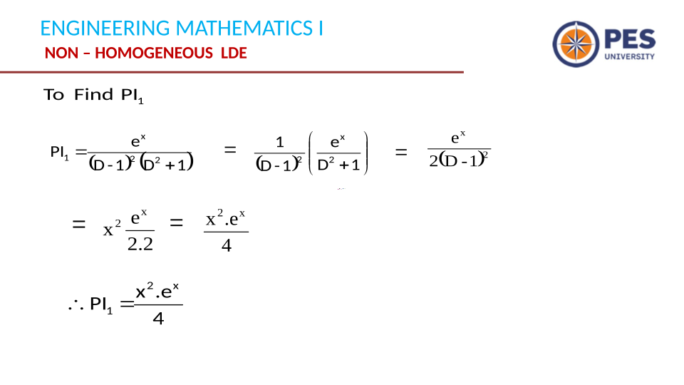
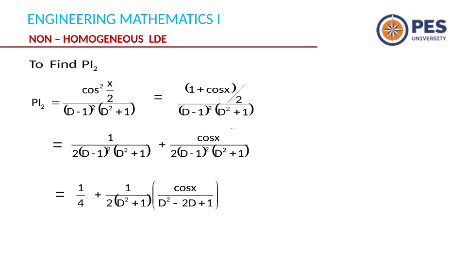
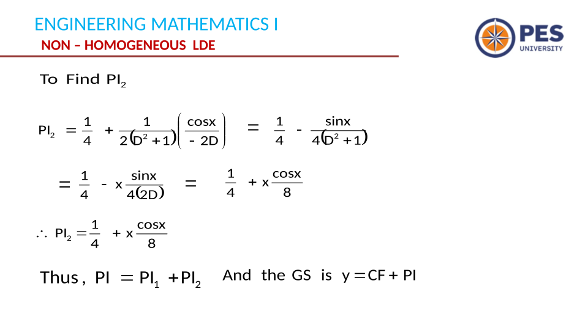
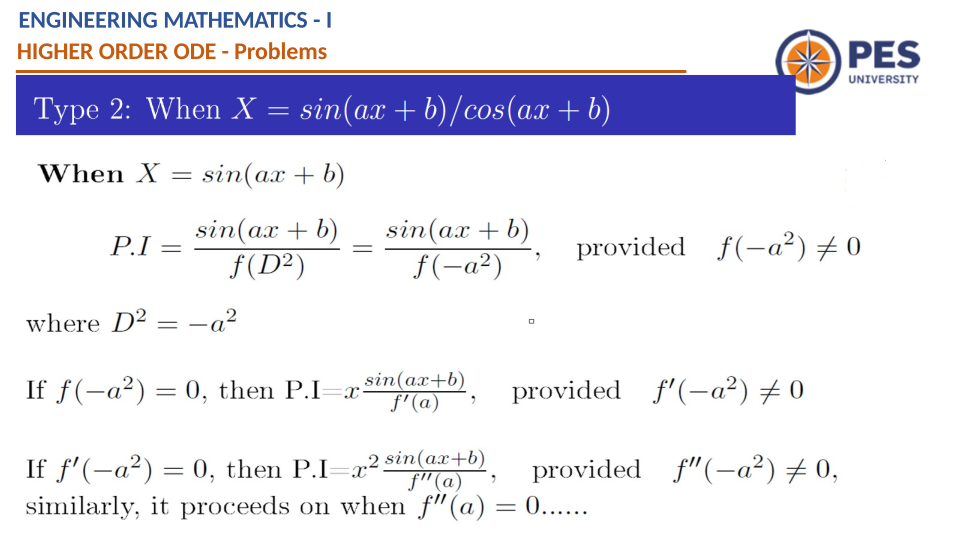
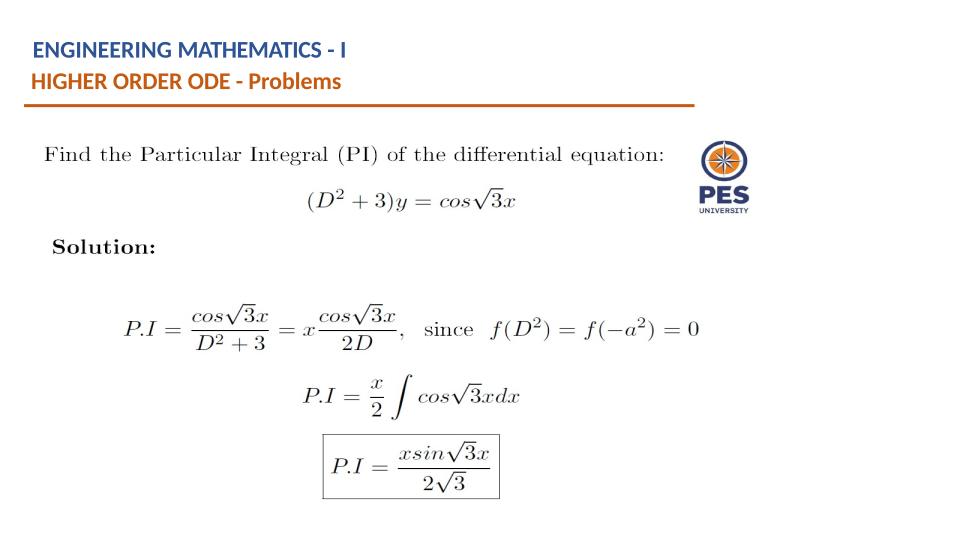
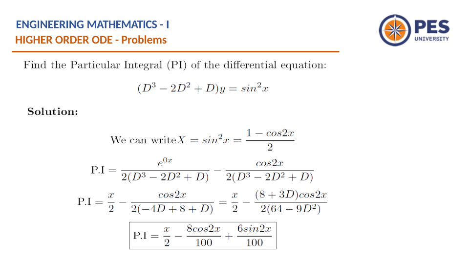

Important points and why
- Source slide page 1 (extracted text): [Image text, OCR] PES UNIVERSITY CELEBRATING5OYEARS ENGINEERING MATHEMATICS - I UE26MA141A Department of Science and Humanities EV0000419 · EV0000420 · EV0000421
- Source slide page 2 (extracted text): ENGINEERING MATHEMATICS I UNIT 2: HIGHER ORDER DIFFERENTIAL EQUATIONS SESSION: 4 SUB-TOPIC: NON – HOMOGENEOUS LDE OF TYPE 2 Department of Science and Humanities EV0000422 · EV0000423 · EV0000424
- Source slide page 3 (extracted text): ENGINEERING MATHEMATICS I HIGHER ORDER DIFFERENTIAL EQUATIONS CLASS CONTENT EV0000425 · EV0000426 · EV0000427
- Source slide page 4 (extracted text): ENGINEERING MATHEMATICS I NON – HOMOGENEOUS LDE RULES TO FIND PARTICULAR INTEGRAL EV0000428 · EV0000429 · EV0000430
- Source slide page 5 (extracted text): ENGINEERING MATHEMATICS I NON – HOMOGENEOUS LDE EV0000431 · EV0000432 · EV0000433
- Source slide page 6 (extracted text): ENGINEERING MATHEMATICS I NON – HOMOGENEOUS LDE EV0000434 · EV0000435 · EV0000436
- Source slide page 7 (extracted text): ENGINEERING MATHEMATICS I NON – HOMOGENEOUS LDE EV0000437 · EV0000438 · EV0000439
- Source slide page 8 (extracted text): ENGINEERING MATHEMATICS I NON – HOMOGENEOUS LDE EV0000440 · EV0000441 · EV0000442
- Source slide page 9 (extracted text): ENGINEERING MATHEMATICS I NON – HOMOGENEOUS LDE EV0000443 · EV0000444 · EV0000445
- Source slide page 10 (extracted text): ENGINEERING MATHEMATICS I NON – HOMOGENEOUS LDE EV0000446 · EV0000447 · EV0000448
- Source slide page 11 (extracted text): ENGINEERING MATHEMATICS I NON – HOMOGENEOUS LDE EV0000449 · EV0000450 · EV0000451
- Source slide page 12 (extracted text): ENGINEERING MATHEMATICS I NON – HOMOGENEOUS LDE EV0000452 · EV0000453 · EV0000454
- Source slide page 13 (extracted text): ENGINEERING MATHEMATICS I NON – HOMOGENEOUS LDE EV0000455 · EV0000456 · EV0000457
- Source slide page 14 (extracted text): ENGINEERING MATHEMATICS I NON – HOMOGENEOUS LDE EV0000458 · EV0000459 · EV0000460
- Source slide page 15 (extracted text): ENGINEERING MATHEMATICS - I HIGHER ORDER ODE - Problems [Image text, OCR] Type 2: When X = sin(ax + b)/cos(ac + b) [Image text, OCR] When X = sin(ar + b) sin(ac + b) sin(ac + b) P.I = provided f(-a²) ≠ 0 f(D2) f(-a²) where D2 = -α2 sin(ar+b) If f(-a²) = 0, then P.I= provided d f'(-a²) ≠ 0 f'(a) 2 sin(ax+b) If f'(-a²) = 0, then P.I=x provided f"(-a²) ≠ 0, f"'(a) similarly, it proceeds on when f"(a) =0...... EV0000461 · EV0000462 · EV0000463
- Source slide page 16 (extracted text): ENGINEERING MATHEMATICS - I HIGHER ORDER ODE - Problems [Image text, OCR] Find the Particular Integral (PI) of the differential equation: (D2 + 3)y = cosV3c PES UNIVERSITY Solution: cos√3c cosV3c P.I = since f(D²) = f(-a²) = 0 D2 +3 三2 2D C P.I = cosV3xdc 2 xsin√3x P.I = 2v3 EV0000464 · EV0000465 · EV0000466
- Source slide page 17 (extracted text): ENGINEERING MATHEMATICS - I HIGHER ORDER ODE - Problems [Image text, OCR] Find the Particular Integral (PI) of the differential equation: (D3 - 2D2 + D)y = sin²c Solution: 1 - cos2c We can writeX = sin² = 2 eOx cos2c P.I = 2(D3 - 2D2 + D)2 2(D3 - 2D2 + D) cos2c (8 +3D)cos2c C C P.I = 2 2(-4D + 8 + D) 2 2(64 - 9D2) C 8cos2c 6sin2c P.I = 2 100 100 EV0000467 · EV0000468 · EV0000469
- Source slide page 18 (extracted text): [Image text, OCR] PES UNIVERSITY CELEBRATING5OYEARS Thank you Department of Science and Humanities EV0000470 · EV0000471 · EV0000472
6Particular integral of standard functions - Type 2
This lesson is indexed from the source video titled Particular integral of standard functions - Type 2. Its complete timestamped transcript is preserved below in segment order. The original video path and content hash are recorded in datasets/lecture-corpus.json. Transcript text is source wording; it has not been silently corrected or rewritten. A candidate slide deck is grouped here according to the current matching score; the exact path and page locators are listed in the source evidence. EV0000078 · EV0000079
7Particular integral of standard functions - Type 3
This lesson is indexed from the source video titled Particular integral of standard functions - Type 3. Its complete timestamped transcript is preserved below in segment order. The original video path and content hash are recorded in datasets/lecture-corpus.json. Transcript text is source wording; it has not been silently corrected or rewritten. A candidate slide deck is grouped here according to the current matching score; the exact path and page locators are listed in the source evidence. EV0000098 · EV0000099
Graphs and diagrams

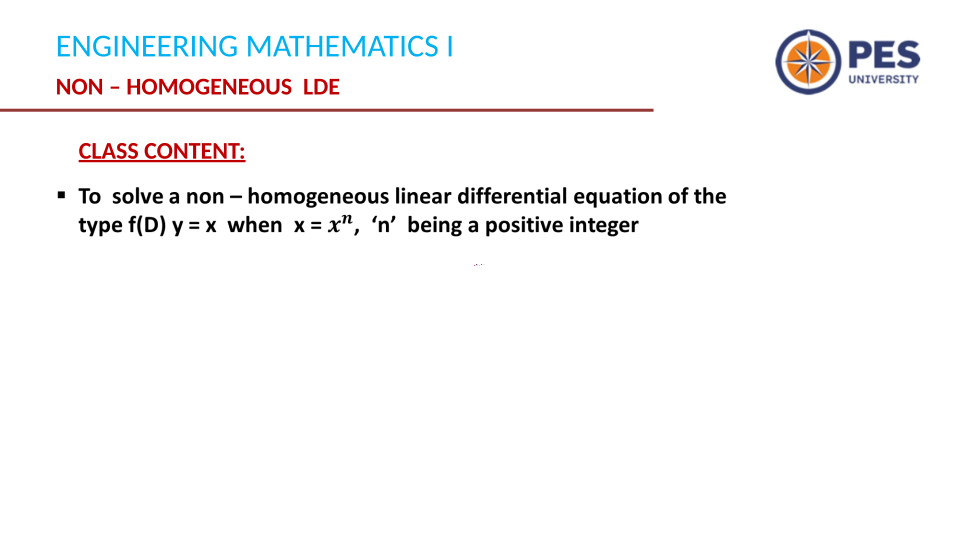
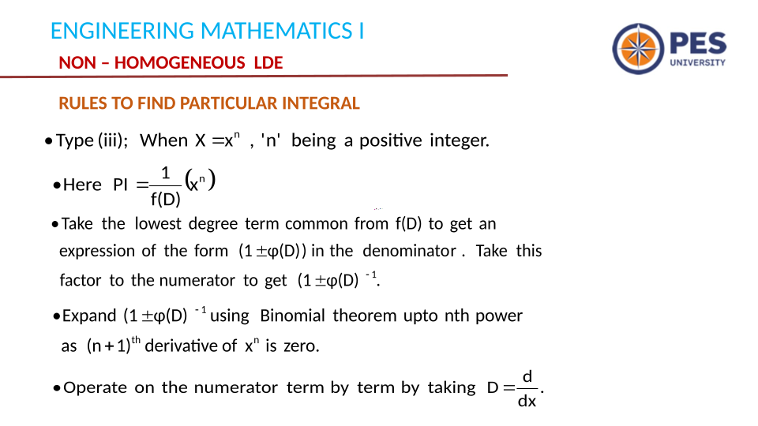

Important points and why
- Source slide page 1 (extracted text): [Image text, OCR] PES UNIVERSITY CELEBRATING5OYEARS ENGINEERING MATHEMATICS - I UE26MA141A Department of Science and Humanities EV0000473 · EV0000474 · EV0000475
- Source slide page 2 (extracted text): ENGINEERING MATHEMATICS I UNIT 2: HIGHER ORDER DIFFERENTIAL EQUATIONS SESSION: 5 SUB-TOPIC: NON- HOMOGENOUS LDE OF TYPE 3 Department of Science and Humanities EV0000476 · EV0000477 · EV0000478
- Source slide page 3 (extracted text): ENGINEERING MATHEMATICS I NON – HOMOGENEOUS LDE CLASS CONTENT: EV0000479 · EV0000480 · EV0000481
- Source slide page 4 (extracted text): ENGINEERING MATHEMATICS I NON – HOMOGENEOUS LDE RULES TO FIND PARTICULAR INTEGRAL EV0000482 · EV0000483 · EV0000484
- Source slide page 5 (extracted text): ENGINEERING MATHEMATICS I NON – HOMOGENEOUS LDE EV0000485 · EV0000486 · EV0000487
- Source slide page 6 (extracted text): ENGINEERING MATHEMATICS I NON – HOMOGENEOUS LDE EV0000488 · EV0000489 · EV0000490
- Source slide page 7 (extracted text): ENGINEERING MATHEMATICS I NON – HOMOGENEOUS LDE EV0000491 · EV0000492 · EV0000493
- Source slide page 8 (extracted text): ENGINEERING MATHEMATICS I NON – HOMOGENEOUS LDE EV0000494 · EV0000495 · EV0000496
- Source slide page 9 (extracted text): ENGINEERING MATHEMATICS I NON – HOMOGENEOUS LDE EV0000497 · EV0000498 · EV0000499
- Source slide page 10 (extracted text): ENGINEERING MATHEMATICS - I HIGHER ORDER ODE - Problems [Image text, OCR] If X = cm, then the particular integral is f(D) yp = P.I = cn f(D) - Expand f(D) in ascending powers of D using g binomial theorem and operate on x"m term by term. Since (m + 1)th term and higher derivatives are zero, it is not necessary to consider terms beyond Dm EV0000500 · EV0000501 · EV0000502
- Source slide page 11 (extracted text): ENGINEERING MATHEMATICS - I HIGHER ORDER ODE - Problems [Image text, OCR] Complementary Function : The auxillary equation is given by m² + 3m + 2 = 0 =→ m - -1,-2 Thus C.F. is given by ye(x) = C1e-α + c2e-2c Particular Integral : yp = D2 + 3D + 2 (x²+ x²) 1 (x3 + x2) (D2+3D) 21 + 2 EV0000503 · EV0000504 · EV0000505
- Source slide page 12 (extracted text): ENGINEERING MATHEMATICS - I HIGHER ORDER ODE - Problems [Image text, OCR] ,we get 2 D2 +3D D2 + 3D D²+3D 3 3 +c² 2 2 2 1 81 (6x + 2+ 9x²+ 6x) +÷(54π+54) 2 7x2 30c 31 2 4 4 Therefore the general solution is 7x2 30c 31 y = C1e- + C2e-2x 2 4 4 EV0000506 · EV0000507 · EV0000508
- Source slide page 13 (extracted text): ENGINEERING MATHEMATICS - I HIGHER ORDER ODE - Problems [Image text, OCR] The auxillary equation is -2±√5i 2m²+2m+3=0 => m = 2 The complementary function is V5 V5 C1 COS - + sin C 2 2 The Particular Integral is (x² + 2x - 1) yp 2D2 +2D+3 1 (x²+ 2 - 1) 2D2+2D 3 1+ 3 EV0000509 · EV0000510 · EV0000511
- Source slide page 14 (extracted text): ENGINEERING MATHEMATICS - I HIGHER ORDER ODE - Problems [Image text, OCR] 2D2+2D Expanding the powers of 1+ we get 3 2D2+ 2D 2D2 +2D 2 ](x² + 2c - 1 9p 3 3 3 4 2 8 +2c -1 (2c +2) + 3 3 3 9 1 2c 25 C 3. 3 9 The general solution is V5 2c 25 y=e- C1 COS + sin C 2 2 3 9 EV0000512 · EV0000513 · EV0000514
- Source slide page 15 (extracted text): [Image text, OCR] PES UNIVERSITY CELEBRATING5OYEARS Thank you Department of Science and Humanities EV0000515 · EV0000516 · EV0000517
8Particular integral -Type 3 and Type 4
This lesson is indexed from the source video titled Particular integral -Type 3 and Type 4. Its complete timestamped transcript is preserved below in segment order. The original video path and content hash are recorded in datasets/lecture-corpus.json. Transcript text is source wording; it has not been silently corrected or rewritten. A candidate slide deck is grouped here according to the current matching score; the exact path and page locators are listed in the source evidence. EV0000110 · EV0000111
Graphs and diagrams


Important points and why
- Source slide page 1 (extracted text): [Image text, OCR] PES UNIVERSITY CELEBRATING5OYEARS ENGINEERING MATHEMATICS - I UE26MA141A Department of Science and Humanities EV0000518 · EV0000519 · EV0000520
- Source slide page 2 (extracted text): ENGINEERING MATHEMATICS I UNIT 2: HIGHER ORDER DIFFERENTIAL EQUATIONS SESSION: 6 SUB-TOPIC: NON- HOMOGENOUS LDE OF TYPE 4 Department of Science and Humanities EV0000521 · EV0000522 · EV0000523
- Source slide page 3 (extracted text): ENGINEERING MATHEMATICS I NON HOMOGENEOUS LDE CLASS CONTENT EV0000524 · EV0000525 · EV0000526
- Source slide page 4 (extracted text): ENGINEERING MATHEMATICS I NON HOMOGENEOUS LDE RULES TO FIND PARTICULAR INTEGRAL EV0000527 · EV0000528 · EV0000529
- Source slide page 5 (extracted text): ENGINEERING MATHEMATICS I NON HOMOGENEOUS LDE SOLUTION: EV0000530 · EV0000531 · EV0000532
- Source slide page 6 (extracted text): ENGINEERING MATHEMATICS I NON HOMOGENEOUS LDE EV0000533 · EV0000534 · EV0000535
- Source slide page 7 (extracted text): ENGINEERING MATHEMATICS I NON HOMOGENEOUS LDE SOLUTION: EV0000536 · EV0000537 · EV0000538
- Source slide page 8 (extracted text): ENGINEERING MATHEMATICS I NON HOMOGENEOUS LDE EV0000539 · EV0000540 · EV0000541
- Source slide page 9 (extracted text): ENGINEERING MATHEMATICS I NON HOMOGENEOUS LDE EV0000542 · EV0000543 · EV0000544
- Source slide page 10 (extracted text): ENGINEERING MATHEMATICS - I HIGHER ORDER ODE - Problems [Image text, OCR] Type 4 : X = earV, V being a function of x [Image text, OCR] When X = eaV, V being a function of , the particular integra] given by eaxV(x) Up = P.I. = f(D) 1 ar V(c) f(D + α) = eax[f(D +a)]-1V(x) where V(c) is of some particular form. EV0000545 · EV0000546 · EV0000547
- Source slide page 11 (extracted text): ENGINEERING MATHEMATICS - I HIGHER ORDER ODE - Problems [Image text, OCR] Solution: Complementary Function: The A.E. equation is given by m² + 2 = 0 =→ m =±√2i The C.F. is given by yc = C1 cos √2x + C2 sin √2c Particular Integral 1 yp = - 3 D2＋2 C e3c (D + 3)2 + 2 e3x 2 C (D2 + 6D + 11) 11(1 + D2+6D 11 EV0000548 · EV0000549 · EV0000550
- Source slide page 12 (extracted text): ENGINEERING MATHEMATICS - I HIGHER ORDER ODE - Problems [Image text, OCR] Expanding powers of D2+6D, we get 11 3c D2 +6D D2 + 6D D2 +6D 3 PES yp : 11 11 11 UNIVERSITY Since c2 is the highest power, terms containing D3 and higher order vanishes. Therefore, D2 6D 36 D2 yp C 11 112 3c 12c 50 C 11 121 Hence the general solution is 12c 50 y(c) =yc +yp = C1 cos √2x + C2 sin √2 + 11 121 EV0000551 · EV0000552 · EV0000553
- Source slide page 13 (extracted text): ENGINEERING MATHEMATICS - I HIGHER ORDER ODE - Problems [Image text, OCR] Solution: Complementary Function: The Auxillary equation is m = 1, 1 The C.F. is yc(c) =(c1 + C2x)e" EV0000554 · EV0000555 · EV0000556
- Source slide page 14 (extracted text): ENGINEERING MATHEMATICS - I HIGHER ORDER ODE - Problems [Image text, OCR] The particular Integral is yp(x) = e" sin c D2 - 2D + 1 1 sin D: - 1)2 1 sin (D + 1 - 1)2 1 sinc D2 = -e sin c The general solution is y(x) = (c1 + c2x)e" - e" sinc EV0000557 · EV0000558 · EV0000559
- Source slide page 15 (extracted text): [Image text, OCR] PES UNIVERSITY CELEBRATING5OYEARS Thank you Department of Science and Humanities EV0000560 · EV0000561 · EV0000562
9Particular integral of standard functions - Type 4
This lesson is indexed from the source video titled Particular integral of standard functions - Type 4. Its complete timestamped transcript is preserved below in segment order. The original video path and content hash are recorded in datasets/lecture-corpus.json. Transcript text is source wording; it has not been silently corrected or rewritten. A candidate slide deck is grouped here according to the current matching score; the exact path and page locators are listed in the source evidence. EV0000126 · EV0000127
10Particular Integral when X is any other form
This lesson is indexed from the source video titled Particular Integral when X is any other form. Its complete timestamped transcript is preserved below in segment order. The original video path and content hash are recorded in datasets/lecture-corpus.json. Transcript text is source wording; it has not been silently corrected or rewritten. A candidate slide deck is grouped here according to the current matching score; the exact path and page locators are listed in the source evidence. EV0000142 · EV0000143
Graphs and diagrams


Important points and why
- Source slide page 1 (extracted text): [Image text, OCR] PES UNIVERSITY CELEBRATING5OYEARS ENGINEERING MATHEMATICS - I UE26MA141A Department of Science and Humanities EV0000563 · EV0000564 · EV0000565
- Source slide page 2 (extracted text): ENGINEERING MATHEMATICS I UNIT 2: HIGHER ORDER DIFFERENTIAL EQUATIONS SESSION: 7 SUB-TOPIC: NON-HOMOGENUOUS LDE WHEN RHS IS ANY OTHER FORM Department of Science and Humanities EV0000566 · EV0000567 · EV0000568
- Source slide page 3 (extracted text): ENGINEERING MATHEMATICS - I Higher order ODE - Problems [Image text, OCR] Rules for Finding the Particular Integral Consider the differential equation, (Dn + aDn-1 + a2Dn-2 +...+ an-1D+ an)y = X It can be written as: f(D)y = X 1 P.I. = X f(D) Resolve f(D) into linear factors. Let f(D)=(D-m1)(D-m2)...(D-mn) Then, P.I. = X: X f(D) (D -m1)(D -m2)...(D -mn) EV0000569 · EV0000570 · EV0000571
- Source slide page 4 (extracted text): ENGINEERING MATHEMATICS - I Higher order ODE - Problems [Image text, OCR] Use partial fractions: P.I = +...十 X - m1 D ）- m2 D-mn 1 1 P.I = A1 X + A2 -X+...+ An D D ）-m1 - m2 D. - mn P.I = A1em1 f Xe-m1xdc + A2em2x f Xe-m2xdc + ... + Anemnr ↑ Xe-mnxdx EV0000572 · EV0000573 · EV0000574
- Source slide page 5 (extracted text): ENGINEERING MATHEMATICS - I Higher order ODE - Problems [Image text, OCR] Solve (D2 + a2)y = tan(ac). Solution: The given equation in symbolic form is: (D2 + a²)y = tan(ax) Auxiliary equation is: m² + α² = 0 → m = ±ia Therefore, the Complementary Function (C.F.) is: yc = C1 cos(ac) + C2 sin(ax) Particular Integral: 1 P.I. = tan(ac）= tan(ax) D2 + a2 (D+ ia)(D -ia) EV0000575 · EV0000576 · EV0000577
- Source slide page 6 (extracted text): ENGINEERING MATHEMATICS - I Higher order ODE - Problems [Image text, OCR] Now, P.I. = tan(ax) 2ia D -ia D+ia tan ar = iar D -ia sin? ac iar tan ac (cos ar - i sin ar) dr = é iar sin ar - dc cOs ac iac [(cos ac - i sin ax) + i log(sec ac + tan ax)] a [1 + ieiax log(sec ax + tan ax)] EV0000578 · EV0000579 · EV0000580
- Source slide page 7 (extracted text): ENGINEERING MATHEMATICS - I Higher order ODE - Problems [Image text, OCR] Changing i to -i, 1 - ie-iax log(sec ax + tan ax)] -tan ar = D +ia a P.I. = {1 + ieiax log(sec ax + tan ax)} 2ia a {1 - ie-iax log(sec ax + tan ax)} a log(sec ar + tan ac) · cos ac y = C1 cOs ac + c2 sin ac cos ax log(sec ar + tan ax). EV0000581 · EV0000582 · EV0000583
- Source slide page 8 (extracted text): ENGINEERING MATHEMATICS - I Higher order ODE - Problems [Image text, OCR] Solve In c. dc2 Solution: The Auxiliary equation is m² = 0 →> m = 0,0 → C.F. = C1 + C2 1 P.I. = ln c D2 In c dc EV0000584 · EV0000585 · EV0000586
- Source slide page 9 (extracted text): ENGINEERING MATHEMATICS - I Higher order ODE - Problems [Image text, OCR] (clnc -x)dc 2 C 1 In c x dc x dc 2 2 1 心 穴 In c 2 2 2 2 x² In c 3x2 P.I. = 2 4 x2 ln c 3c2 .. y = C1 + C2 + 2 4 EV0000587 · EV0000588 · EV0000589
- Source slide page 10 (extracted text): ENGINEERING MATHEMATICS - I Higher order ODE - Problems [Image text, OCR] Find the particular integral for the differential equation: (D2 + 3D + 2)y = ee Solution: (D² + 3D + 2)y = 1 (D + 2)(D + 1) e Use partial fractions: 1 B (D+ 2)(D+ 1） Ｄ+２ Ｄ+1 1 = A(D+1)+ B(D+2)→ A =-1， B= 1 So, P.I = e e D+1D+2 EV0000590 · EV0000591 · EV0000592
- Source slide page 11 (extracted text): ENGINEERING MATHEMATICS - I Higher order ODE - Problems [Image text, OCR] dr - e -2c Substitute: e" = t = e"dr = dt etdt -e -2c tetdt 2m etdt =e-r =e e .. P.I = e-2r .e EV0000593 · EV0000594 · EV0000595
- Source slide page 12 (extracted text): ENGINEERING MATHEMATICS - I Higher order ODE - Problems [Image text, OCR] Find the particular integral for the differential equation (D + 1)(D + 2)y = sin(e"). Solution: yp= [sin(e*)] (D+ 1)(D + 2) 1 A B 1 1 Consider (D + 1)(D + 2) (D+ 1) (D+2) (D+1） (D+2) 1 1 1 1 sin(e") = :.9p sin(e")- sin(e") (D+1) (D+2) (D + 1) (D+2) 1 Consider sin(e") = e- f e"sin(e")dc (D+1) using the substitution t = e" => dt = e"dc C esin(e")dc = e-α sint dt = e-"(-cost) = -e-αcos(e") e EV0000596 · EV0000597 · EV0000598
- Source slide page 13 (extracted text): ENGINEERING MATHEMATICS - I Higher order ODE - Problems [Image text, OCR] 1 Consider sin(e") = e-2α f e2α sin(e") dc D+2 using the substitution t = e" =→ dt = e*d e2u sin(e") dx = e-22 -2c t sint dt = e-2r -t cos(t) + cos(t) dt = e-2α [-tcos(t) + sint] = e-2x [-e" cos(e") + sin(e")] = -e-α cos(e") + e-2r sin(e") 1 :.yp sin(e") (D+1） (D+2) [-e-"cos(e")] - [-e-α cos(e") + e-2r sin(e")] Thus, Up = -e-2w sin(e") EV0000599 · EV0000600 · EV0000601
- Source slide page 14 (extracted text): ENGINEERING MATHEMATICS - I Higher order ODE - Problems [Image text, OCR] Find the particular integral for the differential equation (D2 + 5D + 6)y = e2r sin(e*). Solution: Given: (D2 + 5D + 6)y = e2α sin(e") ≥ (D + 3)(D + 2)y = e2 sin(e") 1 2w sin(e") →yp= ( (D + 2)(D + 3) e Using partial fractions: 1 A B (D + 2)(D + 3) D+2 D+3D+2D+3 EV0000602 · EV0000603 · EV0000604
- Source slide page 15 (extracted text): ENGINEERING MATHEMATICS - I Higher order ODE - Problems [Image text, OCR] 2c yp sin( D + 2 D + 3 -2c 4c sin(er)dc - e-3r 5c sin(e~)dc e D e Substitute t = e" → dt = e"dc → dc = dt t -2c sin t dt EV0000605 · EV0000606 · EV0000607
- Source slide page 16 (extracted text): ENGINEERING MATHEMATICS - I Higher order ODE - Problems [Image text, OCR] Consider e-2α f t3 sint dt Using integration by parts: = e-2x [t²(- cost) - 3t2(- sint) + 6t cost - 6 sint] = e-2α [-t3 cost + 3t² sint + 6t cost - 6sint] =-e-" cos(e") + 3 sin(e") + 6e- cos(e") - 6e-2α sin(e") - -- (1) Consider e-3α f t4 sint dt [-t4 cost + 4t3 sint + 12t² cost - 24t sint - 24cost] = e-3c = -e" cos(e")+4sin(e")+12e-α cos(e")-24e-2u sin(e")-24e-3α cos(e") (2) EV0000608 · EV0000609 · EV0000610
- Source slide page 17 (extracted text): ENGINEERING MATHEMATICS - I Higher order ODE - Problems [Image text, OCR] yp=(1)-(2) cos(e*)+3sin(e) + 6e-" cos(e") - 6e-2x sin(e")]- Yp = [-e- c [-e" cos(e")+4 sin(e") + 12e- c cos(e") - 24e-2x sin(e")-24e-3x cos(e")] = -sin(e") -6e- cos(e") + 18e-2r sin(e") + 24e-3r yp EV0000611 · EV0000612 · EV0000613
- Source slide page 18 (extracted text): [Image text, OCR] PES UNIVERSITY CELEBRATING5OYEARS Thank you Department of Science and Humanities EV0000614 · EV0000615 · EV0000616
11Particular integral when X is any other form_Continued
This lesson is indexed from the source video titled Particular integral when X is any other form_Continued. Its complete timestamped transcript is preserved below in segment order. The original video path and content hash are recorded in datasets/lecture-corpus.json. Transcript text is source wording; it has not been silently corrected or rewritten. A candidate slide deck is grouped here according to the current matching score; the exact path and page locators are listed in the source evidence. EV0000158 · EV0000159
12Legendre differential equation
This lesson is indexed from the source video titled Legendre differential equation. Its complete timestamped transcript is preserved below in segment order. The original video path and content hash are recorded in datasets/lecture-corpus.json. Transcript text is source wording; it has not been silently corrected or rewritten. A candidate slide deck is grouped here according to the current matching score; the exact path and page locators are listed in the source evidence. EV0000166 · EV0000167
Graphs and diagrams

Important points and why
- Source slide page 1 (extracted text): [Image text, OCR] PES UNIVERSITY CELEBRATING5OYEARS ENGINEERING MATHEMATICS - I UE26MA141A Department of Science and Humanities EV0000617 · EV0000618 · EV0000619
- Source slide page 2 (extracted text): ENGINEERING MATHEMATICS I UNIT 2: HIGHER ORDER DIFFERENTIAL EQUATIONS SESSION: 9 SUB-TOPIC: Legendre’s Linear Differential Equation Department of Science and Humanities EV0000620 · EV0000621 · EV0000622
- Source slide page 3 (extracted text): ENGINEERING MATHEMATICS I HIGHER ORDER LINEAR DIFFERENTIAL EQUATIONS CLASS CONTENT: Higher Order Linear Differential Equations With Variable Coefficients Legendre’s Linear Differential Equation EV0000623 · EV0000624 · EV0000625
- Source slide page 4 (extracted text): ENGINEERING MATHEMATICS I LINEAR DIFFERENTIAL EQUATIONS WITH VARIABLE COEFFICIENTS EV0000626 · EV0000627 · EV0000628
- Source slide page 5 (extracted text): ENGINEERING MATHEMATICS I LINEAR DIFFERENTIAL EQUATIONS WITH VARIABLE COEFFICIENTS Legendre’s Linear Differential Equation EV0000629 · EV0000630 · EV0000631
- Source slide page 6 (extracted text): ENGINEERING MATHEMATICS I LINEAR DIFFERENTIAL EQUATIONS WITH VARIABLE COEFFICIENTS EV0000632 · EV0000633 · EV0000634
- Source slide page 7 (extracted text): ENGINEERING MATHEMATICS I LINEAR DIFFERENTIAL EQUATIONS WITH VARIABLE COEFFICIENTS Second order Legendre’s Linear Differential Equation EV0000635 · EV0000636 · EV0000637
- Source slide page 8 (extracted text): ENGINEERING MATHEMATICS I LDE WITH VARIABLE COEFFICIENTS EV0000638 · EV0000639 · EV0000640
- Source slide page 9 (extracted text): ENGINEERING MATHEMATICS I LDE WITH VARIABLE COEFFICIENTS EV0000641 · EV0000642 · EV0000643
- Source slide page 10 (extracted text): ENGINEERING MATHEMATICS I LDE WITH VARIABLE COEFFICIENTS EV0000644 · EV0000645 · EV0000646
- Source slide page 11 (extracted text): [Image text, OCR] PES UNIVERSITY CELEBRATING5OYEARS Thank you Department of Science and Humanities EV0000647 · EV0000648 · EV0000649
13Legendre differential equations_Continued
This lesson is indexed from the source video titled Legendre differential equations_Continued. Its complete timestamped transcript is preserved below in segment order. The original video path and content hash are recorded in datasets/lecture-corpus.json. Transcript text is source wording; it has not been silently corrected or rewritten. A candidate slide deck is grouped here according to the current matching score; the exact path and page locators are listed in the source evidence. EV0000186 · EV0000187
14Variation of Parameters method_Continued
This lesson is indexed from the source video titled Variation of Parameters method_Continued. Its complete timestamped transcript is preserved below in segment order. The original video path and content hash are recorded in datasets/lecture-corpus.json. Transcript text is source wording; it has not been silently corrected or rewritten. A candidate slide deck is grouped here according to the current matching score; the exact path and page locators are listed in the source evidence. EV0000206 · EV0000207
Graphs and diagrams


Important points and why
- Source slide page 1 (extracted text): [Image text, OCR] PES UNIVERSITY CELEBRATING5OYEARS ENGINEERING MATHEMATICS - I UE26MA141A Department of Science and Humanities EV0000650 · EV0000651 · EV0000652
- Source slide page 2 (extracted text): ENGINEERING MATHEMATICS I UNIT 2: HIGHER ORDER DIFFERENTIAL EQUATIONS SESSION: 8 SUB-TOPIC: VARIATION OF PARAMETERS METHOD Department of Science and Humanities EV0000653 · EV0000654 · EV0000655
- Source slide page 3 (extracted text): ENGINEERING MATHEMATICS I HIGHER ORDER LINEAR DIFFERENTIAL EQUATIONS CLASS CONTENT: Method of Variation Of Parameters to solve Second Order Linear Differential Equation EV0000656 · EV0000657 · EV0000658
- Source slide page 4 (extracted text): ENGINEERING MATHEMATICS I METHOD OF VARIATION OF PARAMETERS TO FIND P.I EV0000659 · EV0000660 · EV0000661
- Source slide page 5 (extracted text): ENGINEERING MATHEMATICS I METHOD OF VARIATION OF PARAMETERS TO FIND P I EV0000662 · EV0000663 · EV0000664
- Source slide page 6 (extracted text): ENGINEERING MATHEMATICS I METHOD OF VARIATION OF PARAMETERS TO FIND P I EV0000665 · EV0000666 · EV0000667
- Source slide page 7 (extracted text): ENGINEERING MATHEMATICS I METHOD OF VARIATION OF PARAMETERS TO FIND P I EV0000668 · EV0000669 · EV0000670
- Source slide page 8 (extracted text): ENGINEERING MATHEMATICS I METHOD OF VARIATION OF PARAMETERS TO FIND P I EV0000671 · EV0000672 · EV0000673
- Source slide page 9 (extracted text): ENGINEERING MATHEMATICS I METHOD OF VARIATION OF PARAMETERS TO FIND P I EV0000674 · EV0000675 · EV0000676
- Source slide page 10 (extracted text): ENGINEERING MATHEMATICS I METHOD OF VARIATION OF PARAMETERS TO FIND P I EV0000677 · EV0000678 · EV0000679
- Source slide page 11 (extracted text): ENGINEERING MATHEMATICS I Problems on Method Of Variation Of Parameters SOLUTION: EV0000680 · EV0000681 · EV0000682
- Source slide page 12 (extracted text): ENGINEERING MATHEMATICS I Problems on Method Of Variation Of Parameters EV0000683 · EV0000684 · EV0000685
- Source slide page 13 (extracted text): ENGINEERING MATHEMATICS I Problems on Method Of Variation Of Parameters EV0000686 · EV0000687 · EV0000688
- Source slide page 14 (extracted text): ENGINEERING MATHEMATICS I Problems on Method Of Variation Of Parameters EV0000689 · EV0000690 · EV0000691
- Source slide page 15 (extracted text): ENGINEERING MATHEMATICS I Problems on Method Of Variation Of Parameters EV0000692 · EV0000693 · EV0000694
- Source slide page 16 (extracted text): ENGINEERING MATHEMATICS I Problems on Method Of Variation Of Parameters EV0000695 · EV0000696 · EV0000697
- Source slide page 17 (extracted text): ENGINEERING MATHEMATICS I Problems on Method Of Variation Of Parameters EV0000698 · EV0000699 · EV0000700
- Source slide page 18 (extracted text): [Image text, OCR] PES UNIVERSITY CELEBRATING5OYEARS Thank you Department of Science and Humanities EV0000701 · EV0000702 · EV0000703
15Variation of Parameters method
This lesson is indexed from the source video titled Variation of Parameters method. Its complete timestamped transcript is preserved below in segment order. The original video path and content hash are recorded in datasets/lecture-corpus.json. Transcript text is source wording; it has not been silently corrected or rewritten. A candidate slide deck is grouped here according to the current matching score; the exact path and page locators are listed in the source evidence. EV0000226 · EV0000227
16Applications of higher-order linear differential equations - RLC Circuits
This lesson is indexed from the source video titled Applications of higher-order linear differential equations - RLC Circuits. Its complete timestamped transcript is preserved below in segment order. The original video path and content hash are recorded in datasets/lecture-corpus.json. Transcript text is source wording; it has not been silently corrected or rewritten. A candidate slide deck is grouped here according to the current matching score; the exact path and page locators are listed in the source evidence. EV0000238 · EV0000239
Graphs and diagrams


Important points and why
- Source slide page 1 (extracted text): [Image text, OCR] PES UNIVERSITY CELEBRATING5OYEARS ENGINEERING MATHEMATICS - I UE26MA141A Department of Science and Humanities EV0000704 · EV0000705 · EV0000706
- Source slide page 2 (extracted text): ENGINEERING MATHEMATICS I UNIT 2: HIGHER ORDER DIFFERENTIAL EQUATIONS SESSION: 10 SUB-TOPIC: Applications of LDE to electric circuits Department of Science and Humanities EV0000707 · EV0000708 · EV0000709
- Source slide page 3 (extracted text): ENGINEERING MATHEMATICS I HIGHER ORDER LINEAR DIFFERENTIAL EQUATIONS CLASS CONTENT: Applications of LDE to electric circuits EV0000710 · EV0000711 · EV0000712
- Source slide page 4 (extracted text): ENGINEERING MATHEMATICS I LCR Circuits RLC Circuit A simple RLC circuit consists of an inductor of inductance ‘L’ (in henries), a Capacitor of capacitance ‘C’(in farads ) and a resistor of resistance ‘R’ (in ohms) and a source of electromotive force E (t) (in volts) are connected in series. The current ‘I’ through the circuit is measured in amperes and the charge ‘Q’ on the capacitor is measured in coulombs. EV0000713 · EV0000714 · EV0000715
- Source slide page 5 (extracted text): ENGINEERING MATHEMATICS I LCR Circuits The equation for the current I(t) in the RLC circuit is obtained by considering the voltage drops across three components. The voltage drop across the inductor is given by The voltage drop across the resistor is given by The voltage drop across the capacitor is given by From Kirchoff’s Voltage Law, The voltage supplied = The voltage drop across the by the battery circuit components (the sum of these voltage drops is equal to the electromotive force ) EV0000716 · EV0000717 · EV0000718
- Source slide page 6 (extracted text): ENGINEERING MATHEMATICS I LCR Circuits i.e, ‘I’ is the current in the entire circuit and ‘Q’ is the charge on the capacitor. We know that, This is the differential equation which describes LCR – Circuit. EV0000719 · EV0000720 · EV0000721
- Source slide page 7 (extracted text): ENGINEERING MATHEMATICS I LCR Circuits It is a second order linear differential equation with constant coefficients. If the charge and the current are known at zero time, we can get an expression for Q(t) and I(t) . EV0000722 · EV0000723 · EV0000724
- Source slide page 8 (extracted text): ENGINEERING MATHEMATICS I RLC - Circuits Example: Find an expression for I(t) in RLC - circuit with R = 8 ohms , L = 2 henry, C = 0.1 farad, which is connected to a source of voltage E(t) = 10 volts , assuming zero charge and zero current when t = 0. Solution: The differential equation of RLC – circuit is Using the values of R, L, C and E from the given problem, we get EV0000725 · EV0000726 · EV0000727
- Source slide page 9 (extracted text): ENGINEERING MATHEMATICS I LCR Circuits The above equation is a non homogeneous LDE of order 2 with constant coefficients. To find CF : Auxiliary Equation is EV0000728 · EV0000729 · EV0000730
- Source slide page 10 (extracted text): ENGINEERING MATHEMATICS I LCR Circuits To find PI PI is given by, EV0000731 · EV0000732 · EV0000733
- Source slide page 11 (extracted text): ENGINEERING MATHEMATICS I LCR Circuits Using the given initial conditions, I(0) = 0 and Q(0) = 0 eqn (1) To find differentiate eqn (1) wrt ‘t’ and then use the given initial conditions. EV0000734 · EV0000735 · EV0000736
- Source slide page 12 (extracted text): ENGINEERING MATHEMATICS I LCR Circuits Using the value of , we get Given, I(0) = 0 Using the values of in (1), we get EV0000737 · EV0000738 · EV0000739
- Source slide page 13 (extracted text): ENGINEERING MATHEMATICS - I HIGHER ORDER ODE - Problems [Image text, OCR] Assuming 2 = 0 and I = 0 at t = 0, in an F RLC circuit having asource of voltage E(t) = 155 sin(377t), with R = 100 Ω, L = 0.1H, and C = 10-3 F, determine the current i(t) at any i instant of time. EV0000740 · EV0000741 · EV0000742
- Source slide page 14 (extracted text): ENGINEERING MATHEMATICS - I HIGHER ORDER ODE - Problems [Image text, OCR] For a series RLC circuit with source E(t) = 155 sin(377t), and R = 100 Ω, L = 0.1 H， C = 10-3 F, Kirchhoff's voltage law in terms of the charge q(t) gives 1 i(t) = i(t). Substituting the numerical values: 0.1+ 100 q + 1000 q = 155 sin(377t). Dividing through by 0.1: + 1000q + 10000 q = 1550 sin(377t), with initial conditions q(0) = 0， (0) =i(0) = 0. EV0000743 · EV0000744 · EV0000745
- Source slide page 15 (extracted text): ENGINEERING MATHEMATICS - I HIGHER ORDER ODE - Problems [Image text, OCR] Solve r2 + 1000r + 10000 = 0 → r1,2 = -500± 200√6 r1 -10.1021, r2 -989.8979). Assume ap(t) = A sin(377t) + B cos(377t). Substituting into the ODE yields A -0.00128331, B -0.00366164. Hence ip(t) = áp(t) = 377A cos(377t) - 377B sin(377t) → ip(t) = -0.483808 cos(377t) + 1.38044 sin(377t). EV0000746 · EV0000747 · EV0000748
- Source slide page 16 (extracted text): ENGINEERING MATHEMATICS - I HIGHER ORDER ODE - Problems [Image text, OCR] The general solution is - 0.483808 c0s(377t) + 1.38044 sin(377t) Using initial conditions, we find C1 = -0.0423597, C2 = +0.526168. Therefore, -0.483808 c0s(377t) + 1.38044 sin(377t) EV0000749 · EV0000750 · EV0000751
- Source slide page 17 (extracted text): [Image text, OCR] PES UNIVERSITY CELEBRATING5OYEARS Thank you Department of Science and Humanities EV0000752 · EV0000753 · EV0000754
17Application problems on Linear differential equations - Simple harmonic oscillation
This lesson is indexed from the source video titled Application problems on Linear differential equations - Simple harmonic oscillation. Its complete timestamped transcript is preserved below in segment order. The original video path and content hash are recorded in datasets/lecture-corpus.json. Transcript text is source wording; it has not been silently corrected or rewritten. A candidate slide deck is grouped here according to the current matching score; the exact path and page locators are listed in the source evidence. EV0000250 · EV0000251
Graphs and diagrams


Important points and why
- Source slide page 1 (extracted text): [Image text, OCR] PES UNIVERSITY CELEBRATING5OYEARS ENGINEERING MATHEMATICS - I UE26MA141A Department of Science and Humanities EV0000755 · EV0000756 · EV0000757
- Source slide page 2 (extracted text): ENGINEERING MATHEMATICS I UNIT 2: HIGHER ORDER DIFFERENTIAL EQUATIONS SESSION: 11 SUB-TOPIC: Applications of LDE to Simple Harmonic Oscillation Department of Science and Humanities EV0000758 · EV0000759 · EV0000760
- Source slide page 3 (extracted text): ENGINEERING MATHEMATICS I HIGHER ORDER LINEAR DIFFERENTIAL EQUATIONS CLASS CONTENT: Applications of LDE to Simple Harmonic Oscillation EV0000761 · EV0000762 · EV0000763
- Source slide page 4 (extracted text): APPLICATIONS OF LINEAR DIFFERENTIAL EQUATIONS Second order linear differential equations are used to model many situations in physics and engineering. Situations like an object with a mass attached to a vertical string and an electrical circuit containing a resistor , an inductor and a capacitor in series can be represented by a linear differential equation. Differential equations are useful for modelling and simulating phenomenon and understanding how they operate. EV0000764 · EV0000765 · EV0000766
- Source slide page 5 (extracted text): ENGINEERING MATHEMATICS I SIMPLE HARMONIC OSCILLATION Consider a mass suspended from a spring which is attached to a support. Gravity is pulling the mass downward and the restoring force of the spring is pulling the spring upwards. When both the forces are equal, we say that the spring is in equilibrium position. If the mass is displaced from equilibrium , the mass oscillates up and down. This motion can be modelled by a second order LDE. [Image text, OCR] L+S natural position of spring x=0 m X equilibrium: mg=ks m inmotion EV0000767 · EV0000768 · EV0000769
- Source slide page 6 (extracted text): ENGINEERING MATHEMATICS I SIMPLE HARMONIC OSCILLATION Let x(t) be the displacement of the mass from equilibrium. There are two forces acting on the mass. Force due to gravity (mg) The restoring force From Hook’s Law, the restoring force is given by –k(s+x) (the restoring force is proportional to displacement and acts in the opposite direction of displacement) By Newton’s Second Law, the forces acting on the system = m.a i.e, mg + (–k(s+x)) = m.a ------- (1) EV0000770 · EV0000771 · EV0000772
- Source slide page 7 (extracted text): ENGINEERING MATHEMATICS I SIMPLE HARMONIC OSCILLATION But at equilibrium, mg = ks Therefore, ma = -kx We know that acceleration is given by, Using in eqn (1), we get This equation can also be written as, EV0000773 · EV0000774 · EV0000775
- Source slide page 8 (extracted text): ENGINEERING MATHEMATICS I SIMPLE HARMONIC OSCILLATION The general solution of the differential equation is given by, x(t) gives the position of the mass at any instant. The motion of the mass is Simple Harmonic Motion. Introducing ,equation (2) can be rewritten as, where EV0000776 · EV0000777 · EV0000778
- Source slide page 9 (extracted text): ENGINEERING MATHEMATICS I SIMPLE HARMONIC OSCILLATION ‘A ‘is called amplitude of the motion and gives the maximum displacement of the mass from its equilibrium position. The period of the motion ‘T’ is given by The natural frequency of the simple harmonic oscillator is given by EV0000779 · EV0000780 · EV0000781
- Source slide page 10 (extracted text): ENGINEERING MATHEMATICS I SIMPLE HARMONIC OSCILLATION EXAMPLE : A spring is such that it would be stretched to 6 inches by 12 pound weight. If the weight is pulled down 4 inches below the equilibrium point and given an upward velocity of 2 feet/sec, determine the motion of the weight assuming no damping. Find also the amplitude and period. SOLUTION: The differential equation of the free motion is EV0000782 · EV0000783 · EV0000784
- Source slide page 11 (extracted text): ENGINEERING MATHEMATICS I SIMPLE HARMONIC OSCILLATION Firstly, we need to find ‘k’ and ‘ m’. We know that, the weight of the mass = m.g where ‘g’ is the acceleration due to gravity = 32ft/sec Therefore, To find ‘k’ At equilibrium , k.s = m . g Here, s = 6 inches = 0.5 feet Therefore, EV0000785 · EV0000786 · EV0000787
- Source slide page 12 (extracted text): ENGINEERING MATHEMATICS I SIMPLE HARMONIC OSCILLATION The differential equation now becomes, The general solution of the differential equation is , EV0000788 · EV0000789 · EV0000790
- Source slide page 13 (extracted text): ENGINEERING MATHEMATICS I SIMPLE HARMONIC OSCILLATION EV0000791 · EV0000792 · EV0000793
- Source slide page 14 (extracted text): ENGINEERING MATHEMATICS I SIMPLE HARMONIC OSCILLATION Using the condition, We get, EV0000794 · EV0000795 · EV0000796
- Source slide page 15 (extracted text): ENGINEERING MATHEMATICS - I HIGHER ORDER ODE - Problems [Image text, OCR] A particle of mass m moves in a straight line under the action of a force mn? which is always directed towards a fixed point O on the line. The resistance to the motion is 2入mn . Initially c(0) = 0, (0) = co. Here 0 < 入< 1. Determine the displacement c(t). Solution: We begin by writing down Newton's second law. The forces on the particle of mass m are: A restoring force of magnitude m n? directed toward the origin, ● A “resistive” force of magnitude 2入 m n opposing the motion, so that by Newton's second law, m+2入mnc+mn²x=0 +2入n+n² = 0. Here O < 入 < 1 and the initial conditions are c(0) = 0, c(0) = c0. EV0000797 · EV0000798 · EV0000799
- Source slide page 16 (extracted text): ENGINEERING MATHEMATICS - I HIGHER ORDER ODE - Problems [Image text, OCR] The characteristic equation is r2 + 2入nr + n² = 0, with roots r = -Xn ±inV1 - X2. Thus the general solution is x(t) = e->nt(Acos(wt) + Bsin(wt), w = nV1 - x2. Apply c(0) = 0 to get A = 0. Next, i(t) = e~Ant [_ -入n(A cos wt + B sin wt) + (-Aw sinwt + Bw cos wt) so (O) = Bw = co gives B = c0 displacement c(t) is given by CO α(t)= -Xnt sin(n/1 - X2 t). nV1- x2 EV0000800 · EV0000801 · EV0000802
- Source slide page 17 (extracted text): ENGINEERING MATHEMATICS - I HIGHER ORDER ODE - Problems [Image text, OCR] An 8 lb weight is placed at one end of a spring suspended from the ceiling. The weight is raised to 5 inches above the equilibrium position and left free. Assuming the spring constant is 12 lb/ft, find: The equation of motion. The displacement function x(t). The amplitude of the motion. The period T. The frequency f. The maximum velocity. EV0000803 · EV0000804 · EV0000805
- Source slide page 18 (extracted text): ENGINEERING MATHEMATICS - I HIGHER ORDER ODE - Problems [Image text, OCR] Answer: We consider an 8 lb weight suspended from a spring of constant k = 12 lb/ft, with no damping. Let c(t) be the displacement (in feet) measured downward from the equilibrium position. 1. Compute the mass. weight 8 1b m = slug. 9 32 ft/s2 2. Write the equation of motion. By Newton's law, m+ =0 ↓+12= 0. spring force Multiply both sides by 4: +48 = 0. EV0000806 · EV0000807 · EV0000808
- Source slide page 19 (extracted text): ENGINEERING MATHEMATICS - I HIGHER ORDER ODE - Problems [Image text, OCR] 3. Form the characteristic (auxiliary) equation. Replace by r2: r2 + 48 = 0. 4. Solve for the roots r. r2 = -48 => r = ±√-48 = ±4iv3. Thus the angular frequency is W = 4v3. 5. Write the general solution. For complex-conjugate roots r = ±iw, the solution is c(t) = C1 cos(wt) + C2 sin(wt), W = 4v3. EV0000809 · EV0000810 · EV0000811
- Source slide page 20 (extracted text): ENGINEERING MATHEMATICS - I HIGHER ORDER ODE - Problems [Image text, OCR] From here, we use the initial conditions c(O) and (O) to determine Ci and C2. We take the downward direction as positive c. The mass is raised 5 inches above the equilibrium position, i.e. upward, which is negative in our coordinate system. Hence 5 c(0) = -5 in = ft. 12 Since (O) = 0 (released from rest), we have 5 c(0) = C1 · 1 + C2 · 0 = C1 We have x(t) = C1 cos(wt) + C2 sin(wt), w = 4v3, EV0000812 · EV0000813 · EV0000814
- Source slide page 21 (extracted text): ENGINEERING MATHEMATICS - I HIGHER ORDER ODE - Problems [Image text, OCR] Differentiate: c(t) = 1 cos(wt) + C2 sin(wt) = -C1 w sin(wt) + C2 w cos(wt). 1+ Apply the initial condition c(O) = 0: c(0) = -C1 w sin(0) + C2 w cos(0) = 0 + C2w = 0 =→ C2 = 0. Hence the particular solution is 5 5 si(4v√t-) (t) = C1 cos(wt) = cos(4v3t) 二 12 12 EV0000815 · EV0000816 · EV0000817
- Source slide page 22 (extracted text): ENGINEERING MATHEMATICS - I HIGHER ORDER ODE - Problems [Image text, OCR] Also, 5 2π 1 2V3 TT 5 Amplitude A = T f= Umax =A= 12 2√3 T V3 TT EV0000818 · EV0000819 · EV0000820
- Source slide page 23 (extracted text): [Image text, OCR] PES UNIVERSITY CELEBRATING5OYEARS Thank you Department of Science and Humanities EV0000821 · EV0000822 · EV0000823
18Source slide deck: Solutions of Homogeneous DE by introducing Complementary Functions
This entry preserves the complete slide deck titled Solutions of Homogeneous DE by introducing Complementary Functions as searchable extracted page text and page-faithful rendered images. Its association with a particular video is not confirmed; it remains a separate topic under Engineering Mathematics - I, Unit_02, to avoid an unsupported match. EV0000320 · EV0000321
Graphs and diagrams


Important points and why
- Source slide page 1 (extracted text): [Image text, OCR] PES UNIVERSITY CELEBRATING5OYEARS ENGINEERING MATHEMATICS - I UE26MA141A Department of Science and Humanities EV0000320 · EV0000321 · EV0000322
- Source slide page 2 (extracted text): ENGINEERING MATHEMATICS I UNIT 2: HIGHER ORDER DIFFERENTIAL EQUATIONS SESSION: 2 SUB-TOPIC: LDE with constant coefficients Department of Science and Humanities EV0000323 · EV0000324 · EV0000325
- Source slide page 3 (extracted text): ENGINEERING MATHEMATICS I HIGHER ORDER DIFFERENTIAL EQUATIONS CLASS CONTENT To Solve a Higher Order Homogeneous Linear Differential Equation with constant coefficients Case 1. When the Auxiliary Equation has Real and Distinct Roots Case 2. When the Auxiliary Equation has Real and Equal Roots Case 3. When the Auxiliary Equation has Imaginary Roots EV0000326 · EV0000327 · EV0000328
- Source slide page 4 (extracted text): ENGINEERING MATHEMATICS I GENERAL SOLUTION OF SECOND ORDER LINEAR HOMOGENEOUS DIFFERENTIAL EQUATION EV0000329 · EV0000330 · EV0000331
- Source slide page 5 (extracted text): ENGINEERING MATHEMATICS I GENERAL SOLUTION OF SECOND ORDER LINEAR HOMOGENEOUS DIFFERENTIAL EQUATION EV0000332 · EV0000333 · EV0000334
- Source slide page 6 (extracted text): ENGINEERING MATHEMATICS I GENERAL SOLUTION OF SECOND ORDER LINEAR HOMOGENEOUS DIFFERENTIAL EQUATION EV0000335 · EV0000336 · EV0000337
- Source slide page 7 (extracted text): ENGINEERING MATHEMATICS I GENERAL SOLUTION OF SECOND ORDER HOMOGENEOUS LINEAR DIFFERENTIAL EQUATION CASE I EV0000338 · EV0000339 · EV0000340
- Source slide page 8 (extracted text): ENGINEERING MATHEMATICS I GENERAL SOLUTION OF SECOND ORDER LINEAR DIFFERENTIAL EQUATION CASE II EV0000341 · EV0000342 · EV0000343
- Source slide page 9 (extracted text): ENGINEERING MATHEMATICS I GENERAL SOLUTION OF SECOND ORDER LINEAR HOMOGENEOUS DIFFERENTIAL EQUATION CASE III EV0000344 · EV0000345 · EV0000346
- Source slide page 10 (extracted text): ENGINEERING MATHEMATICS I GENERAL SOLUTION OF HOMOGENEOUS LINEAR DIFFERENTIAL EQUATION OF ORDER “n” EV0000347 · EV0000348 · EV0000349
- Source slide page 11 (extracted text): ENGINEERING MATHEMATICS I GENERAL SOLUTION OF HOMOGENEOUS LINEAR DIFFERENTIAL EQUATION OF ORDER “n” Case(i) then the general solution is EV0000350 · EV0000351 · EV0000352
- Source slide page 12 (extracted text): ENGINEERING MATHEMATICS I GENERAL SOLUTION OF HOMOGENEOUS LINEAR DIFFERENTIAL EQUATION OF ORDER “n” Case(ii) Case (iii) EV0000353 · EV0000354 · EV0000355
- Source slide page 13 (extracted text): ENGINEERING MATHEMATICS I GENERAL SOLUTION OF HOMOGENEOUS LINEAR DIFFERENTIAL EQUATION OF ORDER “n” Case (iv) Case (v) EV0000356 · EV0000357 · EV0000358
- Source slide page 14 (extracted text): ENGINEERING MATHEMATICS I HOMOGENEOUS LINEAR DIFFERENTIAL EQUATION OF ORDER “n” Solve: Thus, EV0000359 · EV0000360 · EV0000361
- Source slide page 15 (extracted text): [Image text, OCR] PES UNIVERSITY CELEBRATING5OYEARS Thank you Department of Science and Humanities EV0000362 · EV0000363 · EV0000364
19Historical question-source pages · unit mapping candidates
This section preserves historical paper/question-bank pages whose extracted terms matched Engineering Mathematics - I, Unit_02 (Unit 2) above the dataset's candidate threshold. The association has not been manually confirmed, source text/OCR may be incomplete, and the pages are not rewritten or presented as solved questions. EV0000824 · EV0000825
Important points and why
- Archive page 3 from Series Solution of Bessel__1GK7DgclHD.pdf; unit match candidate score 0.5; source text/OCR may be partial. Bessel Differential Equation ( ) 2 2 2 0 x y xy x n y + + − = is known as Bessel differential equation. ENGINEERING MATHEMATICS I The second order linear ordinary differential equation in the form, (1) −−−− Here n is the order of the Bessel differential equation. EV0000824
- Archive page 14 from Math_Unit2+Unit3+Unit4__1w-kU1CiDL.pdf; unit match candidate score 0.5; source text/OCR may be partial. W - 4 · Non-homogeneous PDE · Linear PDE but order of all P . D aren't equal en : (D2-(D'l 2 + D - D'S z = 0 · Working : · Finding CF , convert F(D , D') into linear factors of the form () D - m , D' - a ,) . (D - myD' -az) .... (D - mpD' - an))z = 0 (F = e* y , (y + m ,x) + ea2y(y + myn) +... + eannyn(y + mnn) a , 92, ... an & m , M2 ... Mn are constant · (D - mD - a) = = 0 p - my - az = 0 Pr + Qq = R After converting du =dy= into linear factors I directly write in -m(dn =dy J& Feder this form y + ma = C logz = <n + log(2 Ch z = 2 . 9 [= f(x) = J(y + mu) z = f(y +mu) . e L · Easy way to factorize non-homogeneous PDE Assume (a, D + b , D' +c)(a2D + b2D +x) en : (2D"-DD' - D + D - D') z coeft of D2 = a , az = ezn +3y coett of D' = b , b2 a, ac = 2 constant = <[2 b, bz = - a : 1 &2 : 2 coeft of D = a , + ac C , 2 = 0 b. : - 1 be : 1 coeft of D' = b , 2 + b 22 a ,x + a24 = 1 c : 0 22 : I b ,c + b24 = - inen, (D-D'S (2D - D' + 1) = (D - D')(D - +z) if same m and a EV0000825
ASymbol glossary
| Symbol | Name | Meaning | Appears in |
|---|
BSources, coverage and gaps
| Source | Path | Use |
|---|---|---|
| Official unit catalogue | https://huggingface.co/buckets/alvin3y10/data/tree/pesuc/PESU_Materials/units.json | Official course/unit title and index. |
| Introduction to higher order differential equations, complementary function and particular integral transcript (JSON) | https://huggingface.co/buckets/alvin3y10/data/tree/pesuc/PESU_Materials/Sem-1/UE26MA141A_Engineering_Mathematics_-_I/Unit_02/AV_Summaries/001_Introduction_to_higher_order_differential_equations_complementary_function_and_particular_integral__069274588a013075.transcript.json | Full JSON sidecar. Normalized text similarity to canonical JSON: 1.0000; only the JSON segmentation supplies the displayed timestamps. |
| Introduction to higher order differential equations, complementary function and particular integral transcript (Markdown) | https://huggingface.co/buckets/alvin3y10/data/tree/pesuc/PESU_Materials/Sem-1/UE26MA141A_Engineering_Mathematics_-_I/Unit_02/AV_Summaries/001_Introduction_to_higher_order_differential_equations_complementary_function_and_particular_integral__069274588a013075.transcript.md | Full Markdown sidecar. Normalized text similarity to canonical JSON: 1.0000; only the JSON segmentation supplies the displayed timestamps. |
| Introduction to higher order differential equations, complementary function and particular integral transcript (plain text) | https://huggingface.co/buckets/alvin3y10/data/tree/pesuc/PESU_Materials/Sem-1/UE26MA141A_Engineering_Mathematics_-_I/Unit_02/AV_Summaries/001_Introduction_to_higher_order_differential_equations_complementary_function_and_particular_integral__069274588a013075.transcript.txt | Full plain text sidecar. Normalized text similarity to canonical JSON: 0.9986; only the JSON segmentation supplies the displayed timestamps. |
| Introduction to higher order differential equations, complementary function and particular integral transcript (SRT) | https://huggingface.co/buckets/alvin3y10/data/tree/pesuc/PESU_Materials/Sem-1/UE26MA141A_Engineering_Mathematics_-_I/Unit_02/AV_Summaries/001_Introduction_to_higher_order_differential_equations_complementary_function_and_particular_integral__069274588a013075.srt | Full SRT sidecar. Normalized text similarity to canonical JSON: 1.0000; only the JSON segmentation supplies the displayed timestamps. |
| Rules for finding the Complementary Function, Problems transcript (JSON) | https://huggingface.co/buckets/alvin3y10/data/tree/pesuc/PESU_Materials/Sem-1/UE26MA141A_Engineering_Mathematics_-_I/Unit_02/AV_Summaries/002_Rules_for_finding_the_Complementary_Function_Problems__4a39dee530243163.transcript.json | Full JSON sidecar. Normalized text similarity to canonical JSON: 1.0000; only the JSON segmentation supplies the displayed timestamps. |
| Rules for finding the Complementary Function, Problems transcript (Markdown) | https://huggingface.co/buckets/alvin3y10/data/tree/pesuc/PESU_Materials/Sem-1/UE26MA141A_Engineering_Mathematics_-_I/Unit_02/AV_Summaries/002_Rules_for_finding_the_Complementary_Function_Problems__4a39dee530243163.transcript.md | Full Markdown sidecar. Normalized text similarity to canonical JSON: 1.0000; only the JSON segmentation supplies the displayed timestamps. |
| Rules for finding the Complementary Function, Problems transcript (plain text) | https://huggingface.co/buckets/alvin3y10/data/tree/pesuc/PESU_Materials/Sem-1/UE26MA141A_Engineering_Mathematics_-_I/Unit_02/AV_Summaries/002_Rules_for_finding_the_Complementary_Function_Problems__4a39dee530243163.transcript.txt | Full plain text sidecar. Normalized text similarity to canonical JSON: 0.9989; only the JSON segmentation supplies the displayed timestamps. |
| Rules for finding the Complementary Function, Problems transcript (SRT) | https://huggingface.co/buckets/alvin3y10/data/tree/pesuc/PESU_Materials/Sem-1/UE26MA141A_Engineering_Mathematics_-_I/Unit_02/AV_Summaries/002_Rules_for_finding_the_Complementary_Function_Problems__4a39dee530243163.srt | Full SRT sidecar. Normalized text similarity to canonical JSON: 1.0000; only the JSON segmentation supplies the displayed timestamps. |
| Particular integral of standard functions - Type 1 transcript (JSON) | https://huggingface.co/buckets/alvin3y10/data/tree/pesuc/PESU_Materials/Sem-1/UE26MA141A_Engineering_Mathematics_-_I/Unit_02/AV_Summaries/003_Particular_integral_of_standard_functions_-_Type_1__22d81006814d93bf.transcript.json | Full JSON sidecar. Normalized text similarity to canonical JSON: 1.0000; only the JSON segmentation supplies the displayed timestamps. |
| Particular integral of standard functions - Type 1 transcript (Markdown) | https://huggingface.co/buckets/alvin3y10/data/tree/pesuc/PESU_Materials/Sem-1/UE26MA141A_Engineering_Mathematics_-_I/Unit_02/AV_Summaries/003_Particular_integral_of_standard_functions_-_Type_1__22d81006814d93bf.transcript.md | Full Markdown sidecar. Normalized text similarity to canonical JSON: 1.0000; only the JSON segmentation supplies the displayed timestamps. |
| Particular integral of standard functions - Type 1 transcript (plain text) | https://huggingface.co/buckets/alvin3y10/data/tree/pesuc/PESU_Materials/Sem-1/UE26MA141A_Engineering_Mathematics_-_I/Unit_02/AV_Summaries/003_Particular_integral_of_standard_functions_-_Type_1__22d81006814d93bf.transcript.txt | Full plain text sidecar. Normalized text similarity to canonical JSON: 0.9990; only the JSON segmentation supplies the displayed timestamps. |
| Particular integral of standard functions - Type 1 transcript (SRT) | https://huggingface.co/buckets/alvin3y10/data/tree/pesuc/PESU_Materials/Sem-1/UE26MA141A_Engineering_Mathematics_-_I/Unit_02/AV_Summaries/003_Particular_integral_of_standard_functions_-_Type_1__22d81006814d93bf.srt | Full SRT sidecar. Normalized text similarity to canonical JSON: 1.0000; only the JSON segmentation supplies the displayed timestamps. |
| Particular integral_Type 1 and Type 2 transcript (JSON) | https://huggingface.co/buckets/alvin3y10/data/tree/pesuc/PESU_Materials/Sem-1/UE26MA141A_Engineering_Mathematics_-_I/Unit_02/AV_Summaries/004_Particular_integral_Type_1_and_Type_2__54bec5745a32a447.transcript.json | Full JSON sidecar. Normalized text similarity to canonical JSON: 1.0000; only the JSON segmentation supplies the displayed timestamps. |
| Particular integral_Type 1 and Type 2 transcript (Markdown) | https://huggingface.co/buckets/alvin3y10/data/tree/pesuc/PESU_Materials/Sem-1/UE26MA141A_Engineering_Mathematics_-_I/Unit_02/AV_Summaries/004_Particular_integral_Type_1_and_Type_2__54bec5745a32a447.transcript.md | Full Markdown sidecar. Normalized text similarity to canonical JSON: 1.0000; only the JSON segmentation supplies the displayed timestamps. |
| Particular integral_Type 1 and Type 2 transcript (plain text) | https://huggingface.co/buckets/alvin3y10/data/tree/pesuc/PESU_Materials/Sem-1/UE26MA141A_Engineering_Mathematics_-_I/Unit_02/AV_Summaries/004_Particular_integral_Type_1_and_Type_2__54bec5745a32a447.transcript.txt | Full plain text sidecar. Normalized text similarity to canonical JSON: 0.9979; only the JSON segmentation supplies the displayed timestamps. |
| Particular integral_Type 1 and Type 2 transcript (SRT) | https://huggingface.co/buckets/alvin3y10/data/tree/pesuc/PESU_Materials/Sem-1/UE26MA141A_Engineering_Mathematics_-_I/Unit_02/AV_Summaries/004_Particular_integral_Type_1_and_Type_2__54bec5745a32a447.srt | Full SRT sidecar. Normalized text similarity to canonical JSON: 1.0000; only the JSON segmentation supplies the displayed timestamps. |
| Particular integral of standard functions - Type 2 transcript (JSON) | https://huggingface.co/buckets/alvin3y10/data/tree/pesuc/PESU_Materials/Sem-1/UE26MA141A_Engineering_Mathematics_-_I/Unit_02/AV_Summaries/004_Particular_integral_of_standard_functions_-_Type_2__d25d020162de0016.transcript.json | Full JSON sidecar. Normalized text similarity to canonical JSON: 1.0000; only the JSON segmentation supplies the displayed timestamps. |
| Particular integral of standard functions - Type 2 transcript (Markdown) | https://huggingface.co/buckets/alvin3y10/data/tree/pesuc/PESU_Materials/Sem-1/UE26MA141A_Engineering_Mathematics_-_I/Unit_02/AV_Summaries/004_Particular_integral_of_standard_functions_-_Type_2__d25d020162de0016.transcript.md | Full Markdown sidecar. Normalized text similarity to canonical JSON: 1.0000; only the JSON segmentation supplies the displayed timestamps. |
| Particular integral of standard functions - Type 2 transcript (plain text) | https://huggingface.co/buckets/alvin3y10/data/tree/pesuc/PESU_Materials/Sem-1/UE26MA141A_Engineering_Mathematics_-_I/Unit_02/AV_Summaries/004_Particular_integral_of_standard_functions_-_Type_2__d25d020162de0016.transcript.txt | Full plain text sidecar. Normalized text similarity to canonical JSON: 0.9991; only the JSON segmentation supplies the displayed timestamps. |
| Particular integral of standard functions - Type 2 transcript (SRT) | https://huggingface.co/buckets/alvin3y10/data/tree/pesuc/PESU_Materials/Sem-1/UE26MA141A_Engineering_Mathematics_-_I/Unit_02/AV_Summaries/004_Particular_integral_of_standard_functions_-_Type_2__d25d020162de0016.srt | Full SRT sidecar. Normalized text similarity to canonical JSON: 1.0000; only the JSON segmentation supplies the displayed timestamps. |
| Particular integral of standard functions - Type 3 transcript (JSON) | https://huggingface.co/buckets/alvin3y10/data/tree/pesuc/PESU_Materials/Sem-1/UE26MA141A_Engineering_Mathematics_-_I/Unit_02/AV_Summaries/005_Particular_integral_of_standard_functions_-_Type_3__1f8ea5ed4d7e088f.transcript.json | Full JSON sidecar. Normalized text similarity to canonical JSON: 1.0000; only the JSON segmentation supplies the displayed timestamps. |
| Particular integral of standard functions - Type 3 transcript (Markdown) | https://huggingface.co/buckets/alvin3y10/data/tree/pesuc/PESU_Materials/Sem-1/UE26MA141A_Engineering_Mathematics_-_I/Unit_02/AV_Summaries/005_Particular_integral_of_standard_functions_-_Type_3__1f8ea5ed4d7e088f.transcript.md | Full Markdown sidecar. Normalized text similarity to canonical JSON: 1.0000; only the JSON segmentation supplies the displayed timestamps. |
| Particular integral of standard functions - Type 3 transcript (plain text) | https://huggingface.co/buckets/alvin3y10/data/tree/pesuc/PESU_Materials/Sem-1/UE26MA141A_Engineering_Mathematics_-_I/Unit_02/AV_Summaries/005_Particular_integral_of_standard_functions_-_Type_3__1f8ea5ed4d7e088f.transcript.txt | Full plain text sidecar. Normalized text similarity to canonical JSON: 0.9983; only the JSON segmentation supplies the displayed timestamps. |
| Particular integral of standard functions - Type 3 transcript (SRT) | https://huggingface.co/buckets/alvin3y10/data/tree/pesuc/PESU_Materials/Sem-1/UE26MA141A_Engineering_Mathematics_-_I/Unit_02/AV_Summaries/005_Particular_integral_of_standard_functions_-_Type_3__1f8ea5ed4d7e088f.srt | Full SRT sidecar. Normalized text similarity to canonical JSON: 1.0000; only the JSON segmentation supplies the displayed timestamps. |
| Particular integral -Type 3 and Type 4 transcript (JSON) | https://huggingface.co/buckets/alvin3y10/data/tree/pesuc/PESU_Materials/Sem-1/UE26MA141A_Engineering_Mathematics_-_I/Unit_02/AV_Summaries/006_Particular_integral_-Type_3_and_Type_4__fb358573adb09195.transcript.json | Full JSON sidecar. Normalized text similarity to canonical JSON: 1.0000; only the JSON segmentation supplies the displayed timestamps. |
| Particular integral -Type 3 and Type 4 transcript (Markdown) | https://huggingface.co/buckets/alvin3y10/data/tree/pesuc/PESU_Materials/Sem-1/UE26MA141A_Engineering_Mathematics_-_I/Unit_02/AV_Summaries/006_Particular_integral_-Type_3_and_Type_4__fb358573adb09195.transcript.md | Full Markdown sidecar. Normalized text similarity to canonical JSON: 1.0000; only the JSON segmentation supplies the displayed timestamps. |
| Particular integral -Type 3 and Type 4 transcript (plain text) | https://huggingface.co/buckets/alvin3y10/data/tree/pesuc/PESU_Materials/Sem-1/UE26MA141A_Engineering_Mathematics_-_I/Unit_02/AV_Summaries/006_Particular_integral_-Type_3_and_Type_4__fb358573adb09195.transcript.txt | Full plain text sidecar. Normalized text similarity to canonical JSON: 0.9982; only the JSON segmentation supplies the displayed timestamps. |
| Particular integral -Type 3 and Type 4 transcript (SRT) | https://huggingface.co/buckets/alvin3y10/data/tree/pesuc/PESU_Materials/Sem-1/UE26MA141A_Engineering_Mathematics_-_I/Unit_02/AV_Summaries/006_Particular_integral_-Type_3_and_Type_4__fb358573adb09195.srt | Full SRT sidecar. Normalized text similarity to canonical JSON: 1.0000; only the JSON segmentation supplies the displayed timestamps. |
| Particular integral of standard functions - Type 4 transcript (JSON) | https://huggingface.co/buckets/alvin3y10/data/tree/pesuc/PESU_Materials/Sem-1/UE26MA141A_Engineering_Mathematics_-_I/Unit_02/AV_Summaries/006_Particular_integral_of_standard_functions_-_Type_4__603379d034480436.transcript.json | Full JSON sidecar. Normalized text similarity to canonical JSON: 1.0000; only the JSON segmentation supplies the displayed timestamps. |
| Particular integral of standard functions - Type 4 transcript (Markdown) | https://huggingface.co/buckets/alvin3y10/data/tree/pesuc/PESU_Materials/Sem-1/UE26MA141A_Engineering_Mathematics_-_I/Unit_02/AV_Summaries/006_Particular_integral_of_standard_functions_-_Type_4__603379d034480436.transcript.md | Full Markdown sidecar. Normalized text similarity to canonical JSON: 1.0000; only the JSON segmentation supplies the displayed timestamps. |
| Particular integral of standard functions - Type 4 transcript (plain text) | https://huggingface.co/buckets/alvin3y10/data/tree/pesuc/PESU_Materials/Sem-1/UE26MA141A_Engineering_Mathematics_-_I/Unit_02/AV_Summaries/006_Particular_integral_of_standard_functions_-_Type_4__603379d034480436.transcript.txt | Full plain text sidecar. Normalized text similarity to canonical JSON: 0.9988; only the JSON segmentation supplies the displayed timestamps. |
| Particular integral of standard functions - Type 4 transcript (SRT) | https://huggingface.co/buckets/alvin3y10/data/tree/pesuc/PESU_Materials/Sem-1/UE26MA141A_Engineering_Mathematics_-_I/Unit_02/AV_Summaries/006_Particular_integral_of_standard_functions_-_Type_4__603379d034480436.srt | Full SRT sidecar. Normalized text similarity to canonical JSON: 0.9993; only the JSON segmentation supplies the displayed timestamps. |
| Particular Integral when X is any other form transcript (JSON) | https://huggingface.co/buckets/alvin3y10/data/tree/pesuc/PESU_Materials/Sem-1/UE26MA141A_Engineering_Mathematics_-_I/Unit_02/AV_Summaries/009_Particular_Integral_when_X_is_any_other_form__653ae8f75a03fb1e.transcript.json | Full JSON sidecar. Normalized text similarity to canonical JSON: 1.0000; only the JSON segmentation supplies the displayed timestamps. |
| Particular Integral when X is any other form transcript (Markdown) | https://huggingface.co/buckets/alvin3y10/data/tree/pesuc/PESU_Materials/Sem-1/UE26MA141A_Engineering_Mathematics_-_I/Unit_02/AV_Summaries/009_Particular_Integral_when_X_is_any_other_form__653ae8f75a03fb1e.transcript.md | Full Markdown sidecar. Normalized text similarity to canonical JSON: 1.0000; only the JSON segmentation supplies the displayed timestamps. |
| Particular Integral when X is any other form transcript (plain text) | https://huggingface.co/buckets/alvin3y10/data/tree/pesuc/PESU_Materials/Sem-1/UE26MA141A_Engineering_Mathematics_-_I/Unit_02/AV_Summaries/009_Particular_Integral_when_X_is_any_other_form__653ae8f75a03fb1e.transcript.txt | Full plain text sidecar. Normalized text similarity to canonical JSON: 0.9975; only the JSON segmentation supplies the displayed timestamps. |
| Particular Integral when X is any other form transcript (SRT) | https://huggingface.co/buckets/alvin3y10/data/tree/pesuc/PESU_Materials/Sem-1/UE26MA141A_Engineering_Mathematics_-_I/Unit_02/AV_Summaries/009_Particular_Integral_when_X_is_any_other_form__653ae8f75a03fb1e.srt | Full SRT sidecar. Normalized text similarity to canonical JSON: 1.0000; only the JSON segmentation supplies the displayed timestamps. |
| Particular integral when X is any other form_Continued transcript (JSON) | https://huggingface.co/buckets/alvin3y10/data/tree/pesuc/PESU_Materials/Sem-1/UE26MA141A_Engineering_Mathematics_-_I/Unit_02/AV_Summaries/009_Particular_integral_when_X_is_any_other_form_Continued__5c24666421028690.transcript.json | Full JSON sidecar. Normalized text similarity to canonical JSON: 1.0000; only the JSON segmentation supplies the displayed timestamps. |
| Particular integral when X is any other form_Continued transcript (Markdown) | https://huggingface.co/buckets/alvin3y10/data/tree/pesuc/PESU_Materials/Sem-1/UE26MA141A_Engineering_Mathematics_-_I/Unit_02/AV_Summaries/009_Particular_integral_when_X_is_any_other_form_Continued__5c24666421028690.transcript.md | Full Markdown sidecar. Normalized text similarity to canonical JSON: 1.0000; only the JSON segmentation supplies the displayed timestamps. |
| Particular integral when X is any other form_Continued transcript (plain text) | https://huggingface.co/buckets/alvin3y10/data/tree/pesuc/PESU_Materials/Sem-1/UE26MA141A_Engineering_Mathematics_-_I/Unit_02/AV_Summaries/009_Particular_integral_when_X_is_any_other_form_Continued__5c24666421028690.transcript.txt | Full plain text sidecar. Normalized text similarity to canonical JSON: 0.9967; only the JSON segmentation supplies the displayed timestamps. |
| Particular integral when X is any other form_Continued transcript (SRT) | https://huggingface.co/buckets/alvin3y10/data/tree/pesuc/PESU_Materials/Sem-1/UE26MA141A_Engineering_Mathematics_-_I/Unit_02/AV_Summaries/009_Particular_integral_when_X_is_any_other_form_Continued__5c24666421028690.srt | Full SRT sidecar. Normalized text similarity to canonical JSON: 1.0000; only the JSON segmentation supplies the displayed timestamps. |
| Legendre differential equation transcript (JSON) | https://huggingface.co/buckets/alvin3y10/data/tree/pesuc/PESU_Materials/Sem-1/UE26MA141A_Engineering_Mathematics_-_I/Unit_02/AV_Summaries/011_Legendre_differential_equation__04e8c1e6bb4bea05.transcript.json | Full JSON sidecar. Normalized text similarity to canonical JSON: 1.0000; only the JSON segmentation supplies the displayed timestamps. |
| Legendre differential equation transcript (Markdown) | https://huggingface.co/buckets/alvin3y10/data/tree/pesuc/PESU_Materials/Sem-1/UE26MA141A_Engineering_Mathematics_-_I/Unit_02/AV_Summaries/011_Legendre_differential_equation__04e8c1e6bb4bea05.transcript.md | Full Markdown sidecar. Normalized text similarity to canonical JSON: 1.0000; only the JSON segmentation supplies the displayed timestamps. |
| Legendre differential equation transcript (plain text) | https://huggingface.co/buckets/alvin3y10/data/tree/pesuc/PESU_Materials/Sem-1/UE26MA141A_Engineering_Mathematics_-_I/Unit_02/AV_Summaries/011_Legendre_differential_equation__04e8c1e6bb4bea05.transcript.txt | Full plain text sidecar. Normalized text similarity to canonical JSON: 0.9996; only the JSON segmentation supplies the displayed timestamps. |
| Legendre differential equation transcript (SRT) | https://huggingface.co/buckets/alvin3y10/data/tree/pesuc/PESU_Materials/Sem-1/UE26MA141A_Engineering_Mathematics_-_I/Unit_02/AV_Summaries/011_Legendre_differential_equation__04e8c1e6bb4bea05.srt | Full SRT sidecar. Normalized text similarity to canonical JSON: 1.0000; only the JSON segmentation supplies the displayed timestamps. |
| Legendre differential equations_Continued transcript (JSON) | https://huggingface.co/buckets/alvin3y10/data/tree/pesuc/PESU_Materials/Sem-1/UE26MA141A_Engineering_Mathematics_-_I/Unit_02/AV_Summaries/011_Legendre_differential_equations_Continued__e286e5075a9d86f4.transcript.json | Full JSON sidecar. Normalized text similarity to canonical JSON: 1.0000; only the JSON segmentation supplies the displayed timestamps. |
| Legendre differential equations_Continued transcript (Markdown) | https://huggingface.co/buckets/alvin3y10/data/tree/pesuc/PESU_Materials/Sem-1/UE26MA141A_Engineering_Mathematics_-_I/Unit_02/AV_Summaries/011_Legendre_differential_equations_Continued__e286e5075a9d86f4.transcript.md | Full Markdown sidecar. Normalized text similarity to canonical JSON: 1.0000; only the JSON segmentation supplies the displayed timestamps. |
| Legendre differential equations_Continued transcript (plain text) | https://huggingface.co/buckets/alvin3y10/data/tree/pesuc/PESU_Materials/Sem-1/UE26MA141A_Engineering_Mathematics_-_I/Unit_02/AV_Summaries/011_Legendre_differential_equations_Continued__e286e5075a9d86f4.transcript.txt | Full plain text sidecar. Normalized text similarity to canonical JSON: 0.9996; only the JSON segmentation supplies the displayed timestamps. |
| Legendre differential equations_Continued transcript (SRT) | https://huggingface.co/buckets/alvin3y10/data/tree/pesuc/PESU_Materials/Sem-1/UE26MA141A_Engineering_Mathematics_-_I/Unit_02/AV_Summaries/011_Legendre_differential_equations_Continued__e286e5075a9d86f4.srt | Full SRT sidecar. Normalized text similarity to canonical JSON: 1.0000; only the JSON segmentation supplies the displayed timestamps. |
| Variation of Parameters method_Continued transcript (JSON) | https://huggingface.co/buckets/alvin3y10/data/tree/pesuc/PESU_Materials/Sem-1/UE26MA141A_Engineering_Mathematics_-_I/Unit_02/AV_Summaries/011_Variation_of_Parameters_method_Continued__97963caf81f64a9c.transcript.json | Full JSON sidecar. Normalized text similarity to canonical JSON: 1.0000; only the JSON segmentation supplies the displayed timestamps. |
| Variation of Parameters method_Continued transcript (Markdown) | https://huggingface.co/buckets/alvin3y10/data/tree/pesuc/PESU_Materials/Sem-1/UE26MA141A_Engineering_Mathematics_-_I/Unit_02/AV_Summaries/011_Variation_of_Parameters_method_Continued__97963caf81f64a9c.transcript.md | Full Markdown sidecar. Normalized text similarity to canonical JSON: 1.0000; only the JSON segmentation supplies the displayed timestamps. |
| Variation of Parameters method_Continued transcript (plain text) | https://huggingface.co/buckets/alvin3y10/data/tree/pesuc/PESU_Materials/Sem-1/UE26MA141A_Engineering_Mathematics_-_I/Unit_02/AV_Summaries/011_Variation_of_Parameters_method_Continued__97963caf81f64a9c.transcript.txt | Full plain text sidecar. Normalized text similarity to canonical JSON: 0.9995; only the JSON segmentation supplies the displayed timestamps. |
| Variation of Parameters method_Continued transcript (SRT) | https://huggingface.co/buckets/alvin3y10/data/tree/pesuc/PESU_Materials/Sem-1/UE26MA141A_Engineering_Mathematics_-_I/Unit_02/AV_Summaries/011_Variation_of_Parameters_method_Continued__97963caf81f64a9c.srt | Full SRT sidecar. Normalized text similarity to canonical JSON: 1.0000; only the JSON segmentation supplies the displayed timestamps. |
| Variation of Parameters method transcript (JSON) | https://huggingface.co/buckets/alvin3y10/data/tree/pesuc/PESU_Materials/Sem-1/UE26MA141A_Engineering_Mathematics_-_I/Unit_02/AV_Summaries/011_Variation_of_Parameters_method__f1407a459331b120.transcript.json | Full JSON sidecar. Normalized text similarity to canonical JSON: 1.0000; only the JSON segmentation supplies the displayed timestamps. |
| Variation of Parameters method transcript (Markdown) | https://huggingface.co/buckets/alvin3y10/data/tree/pesuc/PESU_Materials/Sem-1/UE26MA141A_Engineering_Mathematics_-_I/Unit_02/AV_Summaries/011_Variation_of_Parameters_method__f1407a459331b120.transcript.md | Full Markdown sidecar. Normalized text similarity to canonical JSON: 1.0000; only the JSON segmentation supplies the displayed timestamps. |
| Variation of Parameters method transcript (plain text) | https://huggingface.co/buckets/alvin3y10/data/tree/pesuc/PESU_Materials/Sem-1/UE26MA141A_Engineering_Mathematics_-_I/Unit_02/AV_Summaries/011_Variation_of_Parameters_method__f1407a459331b120.transcript.txt | Full plain text sidecar. Normalized text similarity to canonical JSON: 0.9991; only the JSON segmentation supplies the displayed timestamps. |
| Variation of Parameters method transcript (SRT) | https://huggingface.co/buckets/alvin3y10/data/tree/pesuc/PESU_Materials/Sem-1/UE26MA141A_Engineering_Mathematics_-_I/Unit_02/AV_Summaries/011_Variation_of_Parameters_method__f1407a459331b120.srt | Full SRT sidecar. Normalized text similarity to canonical JSON: 1.0000; only the JSON segmentation supplies the displayed timestamps. |
| Applications of higher-order linear differential equations - RLC Circuits transcript (JSON) | https://huggingface.co/buckets/alvin3y10/data/tree/pesuc/PESU_Materials/Sem-1/UE26MA141A_Engineering_Mathematics_-_I/Unit_02/AV_Summaries/014_Applications_of_higher-order_linear_differential_equations_-_RLC_Circuits__2d0217a8ab77a9c8.transcript.json | Full JSON sidecar. Normalized text similarity to canonical JSON: 1.0000; only the JSON segmentation supplies the displayed timestamps. |
| Applications of higher-order linear differential equations - RLC Circuits transcript (Markdown) | https://huggingface.co/buckets/alvin3y10/data/tree/pesuc/PESU_Materials/Sem-1/UE26MA141A_Engineering_Mathematics_-_I/Unit_02/AV_Summaries/014_Applications_of_higher-order_linear_differential_equations_-_RLC_Circuits__2d0217a8ab77a9c8.transcript.md | Full Markdown sidecar. Normalized text similarity to canonical JSON: 1.0000; only the JSON segmentation supplies the displayed timestamps. |
| Applications of higher-order linear differential equations - RLC Circuits transcript (plain text) | https://huggingface.co/buckets/alvin3y10/data/tree/pesuc/PESU_Materials/Sem-1/UE26MA141A_Engineering_Mathematics_-_I/Unit_02/AV_Summaries/014_Applications_of_higher-order_linear_differential_equations_-_RLC_Circuits__2d0217a8ab77a9c8.transcript.txt | Full plain text sidecar. Normalized text similarity to canonical JSON: 0.9976; only the JSON segmentation supplies the displayed timestamps. |
| Applications of higher-order linear differential equations - RLC Circuits transcript (SRT) | https://huggingface.co/buckets/alvin3y10/data/tree/pesuc/PESU_Materials/Sem-1/UE26MA141A_Engineering_Mathematics_-_I/Unit_02/AV_Summaries/014_Applications_of_higher-order_linear_differential_equations_-_RLC_Circuits__2d0217a8ab77a9c8.srt | Full SRT sidecar. Normalized text similarity to canonical JSON: 1.0000; only the JSON segmentation supplies the displayed timestamps. |
| Application problems on Linear differential equations - Simple harmonic oscillation transcript (JSON) | https://huggingface.co/buckets/alvin3y10/data/tree/pesuc/PESU_Materials/Sem-1/UE26MA141A_Engineering_Mathematics_-_I/Unit_02/AV_Summaries/015_Application_problems_on_Linear_differential_equations_-_Simple_harmonic_oscillation__9f24b70546186809.transcript.json | Full JSON sidecar. Normalized text similarity to canonical JSON: 1.0000; only the JSON segmentation supplies the displayed timestamps. |
| Application problems on Linear differential equations - Simple harmonic oscillation transcript (Markdown) | https://huggingface.co/buckets/alvin3y10/data/tree/pesuc/PESU_Materials/Sem-1/UE26MA141A_Engineering_Mathematics_-_I/Unit_02/AV_Summaries/015_Application_problems_on_Linear_differential_equations_-_Simple_harmonic_oscillation__9f24b70546186809.transcript.md | Full Markdown sidecar. Normalized text similarity to canonical JSON: 1.0000; only the JSON segmentation supplies the displayed timestamps. |
| Application problems on Linear differential equations - Simple harmonic oscillation transcript (plain text) | https://huggingface.co/buckets/alvin3y10/data/tree/pesuc/PESU_Materials/Sem-1/UE26MA141A_Engineering_Mathematics_-_I/Unit_02/AV_Summaries/015_Application_problems_on_Linear_differential_equations_-_Simple_harmonic_oscillation__9f24b70546186809.transcript.txt | Full plain text sidecar. Normalized text similarity to canonical JSON: 0.9983; only the JSON segmentation supplies the displayed timestamps. |
| Application problems on Linear differential equations - Simple harmonic oscillation transcript (SRT) | https://huggingface.co/buckets/alvin3y10/data/tree/pesuc/PESU_Materials/Sem-1/UE26MA141A_Engineering_Mathematics_-_I/Unit_02/AV_Summaries/015_Application_problems_on_Linear_differential_equations_-_Simple_harmonic_oscillation__9f24b70546186809.srt | Full SRT sidecar. Normalized text similarity to canonical JSON: 1.0000; only the JSON segmentation supplies the displayed timestamps. |
| Slide page text: Introduction to second and higher order DE with constant coefficients | https://huggingface.co/buckets/alvin3y10/data/tree/pesuc/PESU_Materials/Sem-1/UE26MA141A_Engineering_Mathematics_-_I/Unit_02/Slides/001_Introduction_to_second_and_higher_order_DE_with_constant_coefficients__8ef20ff90fd33088.slides.md | Complete extracted page text from the bucket's .slides.md sidecar. |
| Alternate extracted slide page text: Introduction to second and higher order DE with constant coefficients | https://huggingface.co/buckets/alvin3y10/data/tree/pesuc/PESU_Materials/Sem-1/UE26MA141A_Engineering_Mathematics_-_I/Unit_02/Slides/001_Introduction_to_second_and_higher_order_DE_with_constant_coefficients__8ef20ff90fd33088.slides.txt | The bucket's alternate .slides.txt text sidecar; content differences are kept as separate page points. |
| Page-render source for Introduction to second and higher order DE with constant coefficients (converted PDF; original hash 136d74b8e9f37faca1033756c92ffe840c372acf9410d1f1aa49c4b0f1c7a135) | https://huggingface.co/buckets/alvin3y10/data/tree/pesuc/PESU_Materials/Sem-1/UE26MA141A_Engineering_Mathematics_-_I/Unit_02/Slides/001_Introduction_to_second_and_higher_order_DE_with_constant_coefficients__8ef20ff90fd33088.pptx | Page inventory and visual source for the rendered original deck; figure pages are derived from this local PDF. The original bucket path/hash are retained in datasets/content-index.json. |
| Slide page text: Solutions of Homogeneous DE by introducing Complementary Functions | https://huggingface.co/buckets/alvin3y10/data/tree/pesuc/PESU_Materials/Sem-1/UE26MA141A_Engineering_Mathematics_-_I/Unit_02/Slides/002_Solutions_of_Homogeneous_DE_by_introducing_Complementary_Functions__c193c841b234d834.slides.md | Complete extracted page text from the bucket's .slides.md sidecar. |
| Alternate extracted slide page text: Solutions of Homogeneous DE by introducing Complementary Functions | https://huggingface.co/buckets/alvin3y10/data/tree/pesuc/PESU_Materials/Sem-1/UE26MA141A_Engineering_Mathematics_-_I/Unit_02/Slides/002_Solutions_of_Homogeneous_DE_by_introducing_Complementary_Functions__c193c841b234d834.slides.txt | The bucket's alternate .slides.txt text sidecar; content differences are kept as separate page points. |
| Page-render source for Solutions of Homogeneous DE by introducing Complementary Functions (converted PDF; original hash 080c29fbcaa2829cff08b42036ee05fea171c295f98bf51470eeb038eb890d8a) | https://huggingface.co/buckets/alvin3y10/data/tree/pesuc/PESU_Materials/Sem-1/UE26MA141A_Engineering_Mathematics_-_I/Unit_02/Slides/002_Solutions_of_Homogeneous_DE_by_introducing_Complementary_Functions__c193c841b234d834.pptx | Page inventory and visual source for the rendered original deck; figure pages are derived from this local PDF. The original bucket path/hash are retained in datasets/content-index.json. |
| Slide page text: Particular integral of Type 1 | https://huggingface.co/buckets/alvin3y10/data/tree/pesuc/PESU_Materials/Sem-1/UE26MA141A_Engineering_Mathematics_-_I/Unit_02/Slides/003_Particular_integral_of_Type_1__f4ba122af8cfae89.slides.md | Complete extracted page text from the bucket's .slides.md sidecar. |
| Alternate extracted slide page text: Particular integral of Type 1 | https://huggingface.co/buckets/alvin3y10/data/tree/pesuc/PESU_Materials/Sem-1/UE26MA141A_Engineering_Mathematics_-_I/Unit_02/Slides/003_Particular_integral_of_Type_1__f4ba122af8cfae89.slides.txt | The bucket's alternate .slides.txt text sidecar; content differences are kept as separate page points. |
| Page-render source for Particular integral of Type 1 (converted PDF; original hash 84f8f81caf6c9c435e20a3d93ba55b4f658236fe7202cd78cec415f091aaeea7) | https://huggingface.co/buckets/alvin3y10/data/tree/pesuc/PESU_Materials/Sem-1/UE26MA141A_Engineering_Mathematics_-_I/Unit_02/Slides/003_Particular_integral_of_Type_1__f4ba122af8cfae89.pptx | Page inventory and visual source for the rendered original deck; figure pages are derived from this local PDF. The original bucket path/hash are retained in datasets/content-index.json. |
| Slide page text: Particular integral of Type 2 | https://huggingface.co/buckets/alvin3y10/data/tree/pesuc/PESU_Materials/Sem-1/UE26MA141A_Engineering_Mathematics_-_I/Unit_02/Slides/004_Particular_integral_of_Type_2__03746afc7474a254.slides.md | Complete extracted page text from the bucket's .slides.md sidecar. |
| Alternate extracted slide page text: Particular integral of Type 2 | https://huggingface.co/buckets/alvin3y10/data/tree/pesuc/PESU_Materials/Sem-1/UE26MA141A_Engineering_Mathematics_-_I/Unit_02/Slides/004_Particular_integral_of_Type_2__03746afc7474a254.slides.txt | The bucket's alternate .slides.txt text sidecar; content differences are kept as separate page points. |
| Page-render source for Particular integral of Type 2 (converted PDF; original hash e2030fff59bf8246db5254db42fc95be9243c269abf0afa18169d12af58417a7) | https://huggingface.co/buckets/alvin3y10/data/tree/pesuc/PESU_Materials/Sem-1/UE26MA141A_Engineering_Mathematics_-_I/Unit_02/Slides/004_Particular_integral_of_Type_2__03746afc7474a254.pptx | Page inventory and visual source for the rendered original deck; figure pages are derived from this local PDF. The original bucket path/hash are retained in datasets/content-index.json. |
| Slide page text: Particular integral of Type 3 | https://huggingface.co/buckets/alvin3y10/data/tree/pesuc/PESU_Materials/Sem-1/UE26MA141A_Engineering_Mathematics_-_I/Unit_02/Slides/005_Particular_integral_of_Type_3__50cbfe7011ebf0b0.slides.md | Complete extracted page text from the bucket's .slides.md sidecar. |
| Alternate extracted slide page text: Particular integral of Type 3 | https://huggingface.co/buckets/alvin3y10/data/tree/pesuc/PESU_Materials/Sem-1/UE26MA141A_Engineering_Mathematics_-_I/Unit_02/Slides/005_Particular_integral_of_Type_3__50cbfe7011ebf0b0.slides.txt | The bucket's alternate .slides.txt text sidecar; content differences are kept as separate page points. |
| Page-render source for Particular integral of Type 3 (converted PDF; original hash a4e3b73e36d4d5c9a4e485bf34097ac2c7093d9ad3f92951f157fd54ecda9e30) | https://huggingface.co/buckets/alvin3y10/data/tree/pesuc/PESU_Materials/Sem-1/UE26MA141A_Engineering_Mathematics_-_I/Unit_02/Slides/005_Particular_integral_of_Type_3__50cbfe7011ebf0b0.pptx | Page inventory and visual source for the rendered original deck; figure pages are derived from this local PDF. The original bucket path/hash are retained in datasets/content-index.json. |
| Slide page text: Particular integral of Type 4 | https://huggingface.co/buckets/alvin3y10/data/tree/pesuc/PESU_Materials/Sem-1/UE26MA141A_Engineering_Mathematics_-_I/Unit_02/Slides/006_Particular_integral_of_Type_4__45b50704e800c4c6.slides.md | Complete extracted page text from the bucket's .slides.md sidecar. |
| Alternate extracted slide page text: Particular integral of Type 4 | https://huggingface.co/buckets/alvin3y10/data/tree/pesuc/PESU_Materials/Sem-1/UE26MA141A_Engineering_Mathematics_-_I/Unit_02/Slides/006_Particular_integral_of_Type_4__45b50704e800c4c6.slides.txt | The bucket's alternate .slides.txt text sidecar; content differences are kept as separate page points. |
| Page-render source for Particular integral of Type 4 (converted PDF; original hash acefecfd876a5d49e837f0aff6ec3f919809c4b92bd183f728c942051c82f0bc) | https://huggingface.co/buckets/alvin3y10/data/tree/pesuc/PESU_Materials/Sem-1/UE26MA141A_Engineering_Mathematics_-_I/Unit_02/Slides/006_Particular_integral_of_Type_4__45b50704e800c4c6.pptx | Page inventory and visual source for the rendered original deck; figure pages are derived from this local PDF. The original bucket path/hash are retained in datasets/content-index.json. |
| Slide page text: Particular integral when X is any other form | https://huggingface.co/buckets/alvin3y10/data/tree/pesuc/PESU_Materials/Sem-1/UE26MA141A_Engineering_Mathematics_-_I/Unit_02/Slides/009_Particular_integral_when_X_is_any_other_form__0611074c2202edfa.slides.md | Complete extracted page text from the bucket's .slides.md sidecar. |
| Alternate extracted slide page text: Particular integral when X is any other form | https://huggingface.co/buckets/alvin3y10/data/tree/pesuc/PESU_Materials/Sem-1/UE26MA141A_Engineering_Mathematics_-_I/Unit_02/Slides/009_Particular_integral_when_X_is_any_other_form__0611074c2202edfa.slides.txt | The bucket's alternate .slides.txt text sidecar; content differences are kept as separate page points. |
| Page-render source for Particular integral when X is any other form (converted PDF; original hash d00a5ae64546151ed598e60717523153e6f0bf0d300c6850837c25310f4ff4fb) | https://huggingface.co/buckets/alvin3y10/data/tree/pesuc/PESU_Materials/Sem-1/UE26MA141A_Engineering_Mathematics_-_I/Unit_02/Slides/009_Particular_integral_when_X_is_any_other_form__0611074c2202edfa.pptx | Page inventory and visual source for the rendered original deck; figure pages are derived from this local PDF. The original bucket path/hash are retained in datasets/content-index.json. |
| Slide page text: Legendre s differential equation | https://huggingface.co/buckets/alvin3y10/data/tree/pesuc/PESU_Materials/Sem-1/UE26MA141A_Engineering_Mathematics_-_I/Unit_02/Slides/011_Legendre_s_differential_equation__0cbc3f8639965d66.slides.md | Complete extracted page text from the bucket's .slides.md sidecar. |
| Alternate extracted slide page text: Legendre s differential equation | https://huggingface.co/buckets/alvin3y10/data/tree/pesuc/PESU_Materials/Sem-1/UE26MA141A_Engineering_Mathematics_-_I/Unit_02/Slides/011_Legendre_s_differential_equation__0cbc3f8639965d66.slides.txt | The bucket's alternate .slides.txt text sidecar; content differences are kept as separate page points. |
| Page-render source for Legendre s differential equation (converted PDF; original hash 38cc6e95d1aeca7f1625a42af8612f370d1be985622142a7a86be4b2b3c74f9f) | https://huggingface.co/buckets/alvin3y10/data/tree/pesuc/PESU_Materials/Sem-1/UE26MA141A_Engineering_Mathematics_-_I/Unit_02/Slides/011_Legendre_s_differential_equation__0cbc3f8639965d66.pptx | Page inventory and visual source for the rendered original deck; figure pages are derived from this local PDF. The original bucket path/hash are retained in datasets/content-index.json. |
| Slide page text: Variation of Parameters method | https://huggingface.co/buckets/alvin3y10/data/tree/pesuc/PESU_Materials/Sem-1/UE26MA141A_Engineering_Mathematics_-_I/Unit_02/Slides/011_Variation_of_Parameters_method__56cafdd3e4db312b.slides.md | Complete extracted page text from the bucket's .slides.md sidecar. |
| Alternate extracted slide page text: Variation of Parameters method | https://huggingface.co/buckets/alvin3y10/data/tree/pesuc/PESU_Materials/Sem-1/UE26MA141A_Engineering_Mathematics_-_I/Unit_02/Slides/011_Variation_of_Parameters_method__56cafdd3e4db312b.slides.txt | The bucket's alternate .slides.txt text sidecar; content differences are kept as separate page points. |
| Page-render source for Variation of Parameters method (converted PDF; original hash 7cacd33b88c550da86eed1eba7748a51cfa85706f05516eb85d299dbfe05cca4) | https://huggingface.co/buckets/alvin3y10/data/tree/pesuc/PESU_Materials/Sem-1/UE26MA141A_Engineering_Mathematics_-_I/Unit_02/Slides/011_Variation_of_Parameters_method__56cafdd3e4db312b.pptx | Page inventory and visual source for the rendered original deck; figure pages are derived from this local PDF. The original bucket path/hash are retained in datasets/content-index.json. |
| Slide page text: Applications of DE LCR circuit | https://huggingface.co/buckets/alvin3y10/data/tree/pesuc/PESU_Materials/Sem-1/UE26MA141A_Engineering_Mathematics_-_I/Unit_02/Slides/014_Applications_of_DE-LCR_circuit__1fb753421ad385f8.slides.md | Complete extracted page text from the bucket's .slides.md sidecar. |
| Alternate extracted slide page text: Applications of DE LCR circuit | https://huggingface.co/buckets/alvin3y10/data/tree/pesuc/PESU_Materials/Sem-1/UE26MA141A_Engineering_Mathematics_-_I/Unit_02/Slides/014_Applications_of_DE-LCR_circuit__1fb753421ad385f8.slides.txt | The bucket's alternate .slides.txt text sidecar; content differences are kept as separate page points. |
| Page-render source for Applications of DE LCR circuit (converted PDF; original hash e3adc11eb94d5de98210fd2f254c966dc6692cab0f8977b9f66d27597f90cc6b) | https://huggingface.co/buckets/alvin3y10/data/tree/pesuc/PESU_Materials/Sem-1/UE26MA141A_Engineering_Mathematics_-_I/Unit_02/Slides/014_Applications_of_DE-LCR_circuit__1fb753421ad385f8.pptx | Page inventory and visual source for the rendered original deck; figure pages are derived from this local PDF. The original bucket path/hash are retained in datasets/content-index.json. |
| Slide page text: Applications of DE SHM | https://huggingface.co/buckets/alvin3y10/data/tree/pesuc/PESU_Materials/Sem-1/UE26MA141A_Engineering_Mathematics_-_I/Unit_02/Slides/015_Applications_of_DE-_SHM__07c768aa6b33cecd.slides.md | Complete extracted page text from the bucket's .slides.md sidecar. |
| Alternate extracted slide page text: Applications of DE SHM | https://huggingface.co/buckets/alvin3y10/data/tree/pesuc/PESU_Materials/Sem-1/UE26MA141A_Engineering_Mathematics_-_I/Unit_02/Slides/015_Applications_of_DE-_SHM__07c768aa6b33cecd.slides.txt | The bucket's alternate .slides.txt text sidecar; content differences are kept as separate page points. |
| Page-render source for Applications of DE SHM (converted PDF; original hash 7b58c61a57ed91331a4fd457402244c66823d50388e69eb1aefecfae82bf6bfc) | https://huggingface.co/buckets/alvin3y10/data/tree/pesuc/PESU_Materials/Sem-1/UE26MA141A_Engineering_Mathematics_-_I/Unit_02/Slides/015_Applications_of_DE-_SHM__07c768aa6b33cecd.pptx | Page inventory and visual source for the rendered original deck; figure pages are derived from this local PDF. The original bucket path/hash are retained in datasets/content-index.json. |
| Extracted historical pages: Series Solution of Bessel__1GK7DgclHD.pdf | https://huggingface.co/buckets/alvin3y10/data/tree/pesuc/First_Year_8enterprise/Files/Math 1/Extra/Extra Questions/Series Solution of Bessel__1GK7DgclHD.pdf | Candidate-matched page text excerpt; original PDF bytes, hash and path remain in datasets/question-archive.json. |
| Extracted historical pages: Math_Unit2+Unit3+Unit4__1w-kU1CiDL.pdf | https://huggingface.co/buckets/alvin3y10/data/tree/pesuc/First_Year_8enterprise/Files/Math 1/Extra/Revision Notes/Math_Unit2+Unit3+Unit4__1w-kU1CiDL.pdf | Candidate-matched page text excerpt; original PDF bytes, hash and path remain in datasets/question-archive.json. |
Historical question-source excerpts are shown only when a page has a strong text-based unit match. They are source references, not new solutions or exam predictions.
Known gaps, conflicts and corrections
- 1 video-to-slide associations were not promoted to a match. Candidate rankings are listed in the transcript corpus and video-slide-matches.csv; the slide decks appear separately.
- 2 transcript segments have low ASR confidence; they are flagged with timestamps in the transcript blocks and indexed in the corpus.
- This is a visibly labelled source-preservation draft. Human page-level semantic and visual review is not complete; no unsupported subject summary or formula correction is claimed.
- The 19.26 GiB MP4 files remain hosted on Hugging Face; the full video path/hash and transcript coverage are indexed. The full audio/video was not watched end-to-end.
- Formula candidates are machine-extracted text with source locators; use the adjacent original slide page and the formula index before treating a candidate as an authoritative equation.
Coverage
Every inventoried source unit has an explicit coverage decision. Covered means reviewed and mapped to content; exclusions and gaps remain visible.
| Evidence | Source unit | Status | Decision |
|---|---|---|---|
| EV0000001 | SRC00001/catalogue | covered | Unit title and index copied from the official units.json catalogue; human content review is pending. |
| EV0000002 | SRC00002/t000000-000299 | covered | Timestamp interval t000000-000299; canonical segment IDs s0001 to s0019. Sidecar variants compare at similarity 1.0000; verbatim transcript text is included in the linked note. This is a source-coverage check, not an audiovisual fact check. |
| EV0000003 | SRC00003/t000000-000299 | covered | Timestamp interval t000000-000299; canonical segment IDs s0001 to s0019. Sidecar variants compare at similarity 1.0000; verbatim transcript text is included in the linked note. This is a source-coverage check, not an audiovisual fact check. |
| EV0000004 | SRC00004/t000000-000299 | covered | Timestamp interval t000000-000299; canonical segment IDs s0001 to s0019. Sidecar variants compare at similarity 0.9986; verbatim transcript text is included in the linked note. This is a source-coverage check, not an audiovisual fact check. |
| EV0000005 | SRC00005/t000000-000299 | covered | Timestamp interval t000000-000299; canonical segment IDs s0001 to s0019. Sidecar variants compare at similarity 1.0000; verbatim transcript text is included in the linked note. This is a source-coverage check, not an audiovisual fact check. |
| EV0000006 | SRC00002/t000300-000599 | covered | Timestamp interval t000300-000599; canonical segment IDs s0020 to s0039. Sidecar variants compare at similarity 1.0000; verbatim transcript text is included in the linked note. This is a source-coverage check, not an audiovisual fact check. |
| EV0000007 | SRC00003/t000300-000599 | covered | Timestamp interval t000300-000599; canonical segment IDs s0020 to s0039. Sidecar variants compare at similarity 1.0000; verbatim transcript text is included in the linked note. This is a source-coverage check, not an audiovisual fact check. |
| EV0000008 | SRC00004/t000300-000599 | covered | Timestamp interval t000300-000599; canonical segment IDs s0020 to s0039. Sidecar variants compare at similarity 0.9986; verbatim transcript text is included in the linked note. This is a source-coverage check, not an audiovisual fact check. |
| EV0000009 | SRC00005/t000300-000599 | covered | Timestamp interval t000300-000599; canonical segment IDs s0020 to s0039. Sidecar variants compare at similarity 1.0000; verbatim transcript text is included in the linked note. This is a source-coverage check, not an audiovisual fact check. |
| EV0000010 | SRC00002/t000600-000899 | covered | Timestamp interval t000600-000899; canonical segment IDs s0040 to s0060. Sidecar variants compare at similarity 1.0000; verbatim transcript text is included in the linked note. This is a source-coverage check, not an audiovisual fact check. |
| EV0000011 | SRC00003/t000600-000899 | covered | Timestamp interval t000600-000899; canonical segment IDs s0040 to s0060. Sidecar variants compare at similarity 1.0000; verbatim transcript text is included in the linked note. This is a source-coverage check, not an audiovisual fact check. |
| EV0000012 | SRC00004/t000600-000899 | covered | Timestamp interval t000600-000899; canonical segment IDs s0040 to s0060. Sidecar variants compare at similarity 0.9986; verbatim transcript text is included in the linked note. This is a source-coverage check, not an audiovisual fact check. |
| EV0000013 | SRC00005/t000600-000899 | covered | Timestamp interval t000600-000899; canonical segment IDs s0040 to s0060. Sidecar variants compare at similarity 1.0000; verbatim transcript text is included in the linked note. This is a source-coverage check, not an audiovisual fact check. |
| EV0000014 | SRC00002/t000900-001199 | covered | Timestamp interval t000900-001199; canonical segment IDs s0061 to s0080. Sidecar variants compare at similarity 1.0000; verbatim transcript text is included in the linked note. This is a source-coverage check, not an audiovisual fact check. |
| EV0000015 | SRC00003/t000900-001199 | covered | Timestamp interval t000900-001199; canonical segment IDs s0061 to s0080. Sidecar variants compare at similarity 1.0000; verbatim transcript text is included in the linked note. This is a source-coverage check, not an audiovisual fact check. |
| EV0000016 | SRC00004/t000900-001199 | covered | Timestamp interval t000900-001199; canonical segment IDs s0061 to s0080. Sidecar variants compare at similarity 0.9986; verbatim transcript text is included in the linked note. This is a source-coverage check, not an audiovisual fact check. |
| EV0000017 | SRC00005/t000900-001199 | covered | Timestamp interval t000900-001199; canonical segment IDs s0061 to s0080. Sidecar variants compare at similarity 1.0000; verbatim transcript text is included in the linked note. This is a source-coverage check, not an audiovisual fact check. |
| EV0000018 | SRC00002/t001200-001499 | covered | Timestamp interval t001200-001499; canonical segment IDs s0081 to s0100. Sidecar variants compare at similarity 1.0000; verbatim transcript text is included in the linked note. This is a source-coverage check, not an audiovisual fact check. |
| EV0000019 | SRC00003/t001200-001499 | covered | Timestamp interval t001200-001499; canonical segment IDs s0081 to s0100. Sidecar variants compare at similarity 1.0000; verbatim transcript text is included in the linked note. This is a source-coverage check, not an audiovisual fact check. |
| EV0000020 | SRC00004/t001200-001499 | covered | Timestamp interval t001200-001499; canonical segment IDs s0081 to s0100. Sidecar variants compare at similarity 0.9986; verbatim transcript text is included in the linked note. This is a source-coverage check, not an audiovisual fact check. |
| EV0000021 | SRC00005/t001200-001499 | covered | Timestamp interval t001200-001499; canonical segment IDs s0081 to s0100. Sidecar variants compare at similarity 1.0000; verbatim transcript text is included in the linked note. This is a source-coverage check, not an audiovisual fact check. |
| EV0000022 | SRC00002/t001500-001799 | covered | Timestamp interval t001500-001799; canonical segment IDs s0101 to s0112. Sidecar variants compare at similarity 1.0000; verbatim transcript text is included in the linked note. This is a source-coverage check, not an audiovisual fact check. |
| EV0000023 | SRC00003/t001500-001799 | covered | Timestamp interval t001500-001799; canonical segment IDs s0101 to s0112. Sidecar variants compare at similarity 1.0000; verbatim transcript text is included in the linked note. This is a source-coverage check, not an audiovisual fact check. |
| EV0000024 | SRC00004/t001500-001799 | covered | Timestamp interval t001500-001799; canonical segment IDs s0101 to s0112. Sidecar variants compare at similarity 0.9986; verbatim transcript text is included in the linked note. This is a source-coverage check, not an audiovisual fact check. |
| EV0000025 | SRC00005/t001500-001799 | covered | Timestamp interval t001500-001799; canonical segment IDs s0101 to s0112. Sidecar variants compare at similarity 1.0000; verbatim transcript text is included in the linked note. This is a source-coverage check, not an audiovisual fact check. |
| EV0000026 | SRC00006/t000000-000299 | covered | Timestamp interval t000000-000299; canonical segment IDs s0001 to s0021. Sidecar variants compare at similarity 1.0000; verbatim transcript text is included in the linked note. This is a source-coverage check, not an audiovisual fact check. |
| EV0000027 | SRC00007/t000000-000299 | covered | Timestamp interval t000000-000299; canonical segment IDs s0001 to s0021. Sidecar variants compare at similarity 1.0000; verbatim transcript text is included in the linked note. This is a source-coverage check, not an audiovisual fact check. |
| EV0000028 | SRC00008/t000000-000299 | covered | Timestamp interval t000000-000299; canonical segment IDs s0001 to s0021. Sidecar variants compare at similarity 0.9989; verbatim transcript text is included in the linked note. This is a source-coverage check, not an audiovisual fact check. |
| EV0000029 | SRC00009/t000000-000299 | covered | Timestamp interval t000000-000299; canonical segment IDs s0001 to s0021. Sidecar variants compare at similarity 1.0000; verbatim transcript text is included in the linked note. This is a source-coverage check, not an audiovisual fact check. |
| EV0000030 | SRC00006/t000300-000599 | covered | Timestamp interval t000300-000599; canonical segment IDs s0022 to s0040. Sidecar variants compare at similarity 1.0000; verbatim transcript text is included in the linked note. This is a source-coverage check, not an audiovisual fact check. |
| EV0000031 | SRC00007/t000300-000599 | covered | Timestamp interval t000300-000599; canonical segment IDs s0022 to s0040. Sidecar variants compare at similarity 1.0000; verbatim transcript text is included in the linked note. This is a source-coverage check, not an audiovisual fact check. |
| EV0000032 | SRC00008/t000300-000599 | covered | Timestamp interval t000300-000599; canonical segment IDs s0022 to s0040. Sidecar variants compare at similarity 0.9989; verbatim transcript text is included in the linked note. This is a source-coverage check, not an audiovisual fact check. |
| EV0000033 | SRC00009/t000300-000599 | covered | Timestamp interval t000300-000599; canonical segment IDs s0022 to s0040. Sidecar variants compare at similarity 1.0000; verbatim transcript text is included in the linked note. This is a source-coverage check, not an audiovisual fact check. |
| EV0000034 | SRC00006/t000600-000899 | covered | Timestamp interval t000600-000899; canonical segment IDs s0041 to s0061. Sidecar variants compare at similarity 1.0000; verbatim transcript text is included in the linked note. This is a source-coverage check, not an audiovisual fact check. |
| EV0000035 | SRC00007/t000600-000899 | covered | Timestamp interval t000600-000899; canonical segment IDs s0041 to s0061. Sidecar variants compare at similarity 1.0000; verbatim transcript text is included in the linked note. This is a source-coverage check, not an audiovisual fact check. |
| EV0000036 | SRC00008/t000600-000899 | covered | Timestamp interval t000600-000899; canonical segment IDs s0041 to s0061. Sidecar variants compare at similarity 0.9989; verbatim transcript text is included in the linked note. This is a source-coverage check, not an audiovisual fact check. |
| EV0000037 | SRC00009/t000600-000899 | covered | Timestamp interval t000600-000899; canonical segment IDs s0041 to s0061. Sidecar variants compare at similarity 1.0000; verbatim transcript text is included in the linked note. This is a source-coverage check, not an audiovisual fact check. |
| EV0000038 | SRC00006/t000900-001199 | covered | Timestamp interval t000900-001199; canonical segment IDs s0062 to s0081. Sidecar variants compare at similarity 1.0000; verbatim transcript text is included in the linked note. This is a source-coverage check, not an audiovisual fact check. |
| EV0000039 | SRC00007/t000900-001199 | covered | Timestamp interval t000900-001199; canonical segment IDs s0062 to s0081. Sidecar variants compare at similarity 1.0000; verbatim transcript text is included in the linked note. This is a source-coverage check, not an audiovisual fact check. |
| EV0000040 | SRC00008/t000900-001199 | covered | Timestamp interval t000900-001199; canonical segment IDs s0062 to s0081. Sidecar variants compare at similarity 0.9989; verbatim transcript text is included in the linked note. This is a source-coverage check, not an audiovisual fact check. |
| EV0000041 | SRC00009/t000900-001199 | covered | Timestamp interval t000900-001199; canonical segment IDs s0062 to s0081. Sidecar variants compare at similarity 1.0000; verbatim transcript text is included in the linked note. This is a source-coverage check, not an audiovisual fact check. |
| EV0000042 | SRC00006/t001200-001499 | covered | Timestamp interval t001200-001499; canonical segment IDs s0082 to s0090. Sidecar variants compare at similarity 1.0000; verbatim transcript text is included in the linked note. This is a source-coverage check, not an audiovisual fact check. |
| EV0000043 | SRC00007/t001200-001499 | covered | Timestamp interval t001200-001499; canonical segment IDs s0082 to s0090. Sidecar variants compare at similarity 1.0000; verbatim transcript text is included in the linked note. This is a source-coverage check, not an audiovisual fact check. |
| EV0000044 | SRC00008/t001200-001499 | covered | Timestamp interval t001200-001499; canonical segment IDs s0082 to s0090. Sidecar variants compare at similarity 0.9989; verbatim transcript text is included in the linked note. This is a source-coverage check, not an audiovisual fact check. |
| EV0000045 | SRC00009/t001200-001499 | covered | Timestamp interval t001200-001499; canonical segment IDs s0082 to s0090. Sidecar variants compare at similarity 1.0000; verbatim transcript text is included in the linked note. This is a source-coverage check, not an audiovisual fact check. |
| EV0000046 | SRC00010/t000000-000299 | covered | Timestamp interval t000000-000299; canonical segment IDs s0001 to s0021. Sidecar variants compare at similarity 1.0000; verbatim transcript text is included in the linked note. This is a source-coverage check, not an audiovisual fact check. |
| EV0000047 | SRC00011/t000000-000299 | covered | Timestamp interval t000000-000299; canonical segment IDs s0001 to s0021. Sidecar variants compare at similarity 1.0000; verbatim transcript text is included in the linked note. This is a source-coverage check, not an audiovisual fact check. |
| EV0000048 | SRC00012/t000000-000299 | covered | Timestamp interval t000000-000299; canonical segment IDs s0001 to s0021. Sidecar variants compare at similarity 0.9990; verbatim transcript text is included in the linked note. This is a source-coverage check, not an audiovisual fact check. |
| EV0000049 | SRC00013/t000000-000299 | covered | Timestamp interval t000000-000299; canonical segment IDs s0001 to s0021. Sidecar variants compare at similarity 1.0000; verbatim transcript text is included in the linked note. This is a source-coverage check, not an audiovisual fact check. |
| EV0000050 | SRC00010/t000300-000599 | covered | Timestamp interval t000300-000599; canonical segment IDs s0022 to s0042. Sidecar variants compare at similarity 1.0000; verbatim transcript text is included in the linked note. This is a source-coverage check, not an audiovisual fact check. |
| EV0000051 | SRC00011/t000300-000599 | covered | Timestamp interval t000300-000599; canonical segment IDs s0022 to s0042. Sidecar variants compare at similarity 1.0000; verbatim transcript text is included in the linked note. This is a source-coverage check, not an audiovisual fact check. |
| EV0000052 | SRC00012/t000300-000599 | covered | Timestamp interval t000300-000599; canonical segment IDs s0022 to s0042. Sidecar variants compare at similarity 0.9990; verbatim transcript text is included in the linked note. This is a source-coverage check, not an audiovisual fact check. |
| EV0000053 | SRC00013/t000300-000599 | covered | Timestamp interval t000300-000599; canonical segment IDs s0022 to s0042. Sidecar variants compare at similarity 1.0000; verbatim transcript text is included in the linked note. This is a source-coverage check, not an audiovisual fact check. |
| EV0000054 | SRC00010/t000600-000899 | covered | Timestamp interval t000600-000899; canonical segment IDs s0043 to s0062. Sidecar variants compare at similarity 1.0000; verbatim transcript text is included in the linked note. This is a source-coverage check, not an audiovisual fact check. |
| EV0000055 | SRC00011/t000600-000899 | covered | Timestamp interval t000600-000899; canonical segment IDs s0043 to s0062. Sidecar variants compare at similarity 1.0000; verbatim transcript text is included in the linked note. This is a source-coverage check, not an audiovisual fact check. |
| EV0000056 | SRC00012/t000600-000899 | covered | Timestamp interval t000600-000899; canonical segment IDs s0043 to s0062. Sidecar variants compare at similarity 0.9990; verbatim transcript text is included in the linked note. This is a source-coverage check, not an audiovisual fact check. |
| EV0000057 | SRC00013/t000600-000899 | covered | Timestamp interval t000600-000899; canonical segment IDs s0043 to s0062. Sidecar variants compare at similarity 1.0000; verbatim transcript text is included in the linked note. This is a source-coverage check, not an audiovisual fact check. |
| EV0000058 | SRC00010/t000900-001199 | covered | Timestamp interval t000900-001199; canonical segment IDs s0063 to s0082. Sidecar variants compare at similarity 1.0000; verbatim transcript text is included in the linked note. This is a source-coverage check, not an audiovisual fact check. |
| EV0000059 | SRC00011/t000900-001199 | covered | Timestamp interval t000900-001199; canonical segment IDs s0063 to s0082. Sidecar variants compare at similarity 1.0000; verbatim transcript text is included in the linked note. This is a source-coverage check, not an audiovisual fact check. |
| EV0000060 | SRC00012/t000900-001199 | covered | Timestamp interval t000900-001199; canonical segment IDs s0063 to s0082. Sidecar variants compare at similarity 0.9990; verbatim transcript text is included in the linked note. This is a source-coverage check, not an audiovisual fact check. |
| EV0000061 | SRC00013/t000900-001199 | covered | Timestamp interval t000900-001199; canonical segment IDs s0063 to s0082. Sidecar variants compare at similarity 1.0000; verbatim transcript text is included in the linked note. This is a source-coverage check, not an audiovisual fact check. |
| EV0000062 | SRC00010/t001200-001499 | covered | Timestamp interval t001200-001499; canonical segment IDs s0083 to s0085. Sidecar variants compare at similarity 1.0000; verbatim transcript text is included in the linked note. This is a source-coverage check, not an audiovisual fact check. |
| EV0000063 | SRC00011/t001200-001499 | covered | Timestamp interval t001200-001499; canonical segment IDs s0083 to s0085. Sidecar variants compare at similarity 1.0000; verbatim transcript text is included in the linked note. This is a source-coverage check, not an audiovisual fact check. |
| EV0000064 | SRC00012/t001200-001499 | covered | Timestamp interval t001200-001499; canonical segment IDs s0083 to s0085. Sidecar variants compare at similarity 0.9990; verbatim transcript text is included in the linked note. This is a source-coverage check, not an audiovisual fact check. |
| EV0000065 | SRC00013/t001200-001499 | covered | Timestamp interval t001200-001499; canonical segment IDs s0083 to s0085. Sidecar variants compare at similarity 1.0000; verbatim transcript text is included in the linked note. This is a source-coverage check, not an audiovisual fact check. |
| EV0000066 | SRC00014/t000000-000299 | covered | Timestamp interval t000000-000299; canonical segment IDs s0001 to s0018. Sidecar variants compare at similarity 1.0000; verbatim transcript text is included in the linked note. This is a source-coverage check, not an audiovisual fact check. |
| EV0000067 | SRC00015/t000000-000299 | covered | Timestamp interval t000000-000299; canonical segment IDs s0001 to s0018. Sidecar variants compare at similarity 1.0000; verbatim transcript text is included in the linked note. This is a source-coverage check, not an audiovisual fact check. |
| EV0000068 | SRC00016/t000000-000299 | covered | Timestamp interval t000000-000299; canonical segment IDs s0001 to s0018. Sidecar variants compare at similarity 0.9979; verbatim transcript text is included in the linked note. This is a source-coverage check, not an audiovisual fact check. |
| EV0000069 | SRC00017/t000000-000299 | covered | Timestamp interval t000000-000299; canonical segment IDs s0001 to s0018. Sidecar variants compare at similarity 1.0000; verbatim transcript text is included in the linked note. This is a source-coverage check, not an audiovisual fact check. |
| EV0000070 | SRC00014/t000300-000599 | covered | Timestamp interval t000300-000599; canonical segment IDs s0019 to s0037. Sidecar variants compare at similarity 1.0000; verbatim transcript text is included in the linked note. This is a source-coverage check, not an audiovisual fact check. |
| EV0000071 | SRC00015/t000300-000599 | covered | Timestamp interval t000300-000599; canonical segment IDs s0019 to s0037. Sidecar variants compare at similarity 1.0000; verbatim transcript text is included in the linked note. This is a source-coverage check, not an audiovisual fact check. |
| EV0000072 | SRC00016/t000300-000599 | covered | Timestamp interval t000300-000599; canonical segment IDs s0019 to s0037. Sidecar variants compare at similarity 0.9979; verbatim transcript text is included in the linked note. This is a source-coverage check, not an audiovisual fact check. |
| EV0000073 | SRC00017/t000300-000599 | covered | Timestamp interval t000300-000599; canonical segment IDs s0019 to s0037. Sidecar variants compare at similarity 1.0000; verbatim transcript text is included in the linked note. This is a source-coverage check, not an audiovisual fact check. |
| EV0000074 | SRC00014/t000600-000899 | covered | Timestamp interval t000600-000899; canonical segment IDs s0038 to s0046. Sidecar variants compare at similarity 1.0000; verbatim transcript text is included in the linked note. This is a source-coverage check, not an audiovisual fact check. |
| EV0000075 | SRC00015/t000600-000899 | covered | Timestamp interval t000600-000899; canonical segment IDs s0038 to s0046. Sidecar variants compare at similarity 1.0000; verbatim transcript text is included in the linked note. This is a source-coverage check, not an audiovisual fact check. |
| EV0000076 | SRC00016/t000600-000899 | covered | Timestamp interval t000600-000899; canonical segment IDs s0038 to s0046. Sidecar variants compare at similarity 0.9979; verbatim transcript text is included in the linked note. This is a source-coverage check, not an audiovisual fact check. |
| EV0000077 | SRC00017/t000600-000899 | covered | Timestamp interval t000600-000899; canonical segment IDs s0038 to s0046. Sidecar variants compare at similarity 1.0000; verbatim transcript text is included in the linked note. This is a source-coverage check, not an audiovisual fact check. |
| EV0000078 | SRC00018/t000000-000299 | covered | Timestamp interval t000000-000299; canonical segment IDs s0001 to s0021. Sidecar variants compare at similarity 1.0000; verbatim transcript text is included in the linked note. This is a source-coverage check, not an audiovisual fact check. |
| EV0000079 | SRC00019/t000000-000299 | covered | Timestamp interval t000000-000299; canonical segment IDs s0001 to s0021. Sidecar variants compare at similarity 1.0000; verbatim transcript text is included in the linked note. This is a source-coverage check, not an audiovisual fact check. |
| EV0000080 | SRC00020/t000000-000299 | covered | Timestamp interval t000000-000299; canonical segment IDs s0001 to s0021. Sidecar variants compare at similarity 0.9991; verbatim transcript text is included in the linked note. This is a source-coverage check, not an audiovisual fact check. |
| EV0000081 | SRC00021/t000000-000299 | covered | Timestamp interval t000000-000299; canonical segment IDs s0001 to s0021. Sidecar variants compare at similarity 1.0000; verbatim transcript text is included in the linked note. This is a source-coverage check, not an audiovisual fact check. |
| EV0000082 | SRC00018/t000300-000599 | covered | Timestamp interval t000300-000599; canonical segment IDs s0022 to s0041. Sidecar variants compare at similarity 1.0000; verbatim transcript text is included in the linked note. This is a source-coverage check, not an audiovisual fact check. |
| EV0000083 | SRC00019/t000300-000599 | covered | Timestamp interval t000300-000599; canonical segment IDs s0022 to s0041. Sidecar variants compare at similarity 1.0000; verbatim transcript text is included in the linked note. This is a source-coverage check, not an audiovisual fact check. |
| EV0000084 | SRC00020/t000300-000599 | covered | Timestamp interval t000300-000599; canonical segment IDs s0022 to s0041. Sidecar variants compare at similarity 0.9991; verbatim transcript text is included in the linked note. This is a source-coverage check, not an audiovisual fact check. |
| EV0000085 | SRC00021/t000300-000599 | covered | Timestamp interval t000300-000599; canonical segment IDs s0022 to s0041. Sidecar variants compare at similarity 1.0000; verbatim transcript text is included in the linked note. This is a source-coverage check, not an audiovisual fact check. |
| EV0000086 | SRC00018/t000600-000899 | covered | Timestamp interval t000600-000899; canonical segment IDs s0042 to s0061. Sidecar variants compare at similarity 1.0000; verbatim transcript text is included in the linked note. This is a source-coverage check, not an audiovisual fact check. |
| EV0000087 | SRC00019/t000600-000899 | covered | Timestamp interval t000600-000899; canonical segment IDs s0042 to s0061. Sidecar variants compare at similarity 1.0000; verbatim transcript text is included in the linked note. This is a source-coverage check, not an audiovisual fact check. |
| EV0000088 | SRC00020/t000600-000899 | covered | Timestamp interval t000600-000899; canonical segment IDs s0042 to s0061. Sidecar variants compare at similarity 0.9991; verbatim transcript text is included in the linked note. This is a source-coverage check, not an audiovisual fact check. |
| EV0000089 | SRC00021/t000600-000899 | covered | Timestamp interval t000600-000899; canonical segment IDs s0042 to s0061. Sidecar variants compare at similarity 1.0000; verbatim transcript text is included in the linked note. This is a source-coverage check, not an audiovisual fact check. |
| EV0000090 | SRC00018/t000900-001199 | covered | Timestamp interval t000900-001199; canonical segment IDs s0062 to s0080. Sidecar variants compare at similarity 1.0000; verbatim transcript text is included in the linked note. This is a source-coverage check, not an audiovisual fact check. |
| EV0000091 | SRC00019/t000900-001199 | covered | Timestamp interval t000900-001199; canonical segment IDs s0062 to s0080. Sidecar variants compare at similarity 1.0000; verbatim transcript text is included in the linked note. This is a source-coverage check, not an audiovisual fact check. |
| EV0000092 | SRC00020/t000900-001199 | covered | Timestamp interval t000900-001199; canonical segment IDs s0062 to s0080. Sidecar variants compare at similarity 0.9991; verbatim transcript text is included in the linked note. This is a source-coverage check, not an audiovisual fact check. |
| EV0000093 | SRC00021/t000900-001199 | covered | Timestamp interval t000900-001199; canonical segment IDs s0062 to s0080. Sidecar variants compare at similarity 1.0000; verbatim transcript text is included in the linked note. This is a source-coverage check, not an audiovisual fact check. |
| EV0000094 | SRC00018/t001200-001499 | covered | Timestamp interval t001200-001499; canonical segment IDs s0081 to s0097. Sidecar variants compare at similarity 1.0000; verbatim transcript text is included in the linked note. This is a source-coverage check, not an audiovisual fact check. |
| EV0000095 | SRC00019/t001200-001499 | covered | Timestamp interval t001200-001499; canonical segment IDs s0081 to s0097. Sidecar variants compare at similarity 1.0000; verbatim transcript text is included in the linked note. This is a source-coverage check, not an audiovisual fact check. |
| EV0000096 | SRC00020/t001200-001499 | covered | Timestamp interval t001200-001499; canonical segment IDs s0081 to s0097. Sidecar variants compare at similarity 0.9991; verbatim transcript text is included in the linked note. This is a source-coverage check, not an audiovisual fact check. |
| EV0000097 | SRC00021/t001200-001499 | covered | Timestamp interval t001200-001499; canonical segment IDs s0081 to s0097. Sidecar variants compare at similarity 1.0000; verbatim transcript text is included in the linked note. This is a source-coverage check, not an audiovisual fact check. |
| EV0000098 | SRC00022/t000000-000299 | covered | Timestamp interval t000000-000299; canonical segment IDs s0001 to s0020. Sidecar variants compare at similarity 1.0000; verbatim transcript text is included in the linked note. This is a source-coverage check, not an audiovisual fact check. |
| EV0000099 | SRC00023/t000000-000299 | covered | Timestamp interval t000000-000299; canonical segment IDs s0001 to s0020. Sidecar variants compare at similarity 1.0000; verbatim transcript text is included in the linked note. This is a source-coverage check, not an audiovisual fact check. |
| EV0000100 | SRC00024/t000000-000299 | covered | Timestamp interval t000000-000299; canonical segment IDs s0001 to s0020. Sidecar variants compare at similarity 0.9983; verbatim transcript text is included in the linked note. This is a source-coverage check, not an audiovisual fact check. |
| EV0000101 | SRC00025/t000000-000299 | covered | Timestamp interval t000000-000299; canonical segment IDs s0001 to s0020. Sidecar variants compare at similarity 1.0000; verbatim transcript text is included in the linked note. This is a source-coverage check, not an audiovisual fact check. |
| EV0000102 | SRC00022/t000300-000599 | covered | Timestamp interval t000300-000599; canonical segment IDs s0021 to s0039. Sidecar variants compare at similarity 1.0000; verbatim transcript text is included in the linked note. This is a source-coverage check, not an audiovisual fact check. |
| EV0000103 | SRC00023/t000300-000599 | covered | Timestamp interval t000300-000599; canonical segment IDs s0021 to s0039. Sidecar variants compare at similarity 1.0000; verbatim transcript text is included in the linked note. This is a source-coverage check, not an audiovisual fact check. |
| EV0000104 | SRC00024/t000300-000599 | covered | Timestamp interval t000300-000599; canonical segment IDs s0021 to s0039. Sidecar variants compare at similarity 0.9983; verbatim transcript text is included in the linked note. This is a source-coverage check, not an audiovisual fact check. |
| EV0000105 | SRC00025/t000300-000599 | covered | Timestamp interval t000300-000599; canonical segment IDs s0021 to s0039. Sidecar variants compare at similarity 1.0000; verbatim transcript text is included in the linked note. This is a source-coverage check, not an audiovisual fact check. |
| EV0000106 | SRC00022/t000600-000899 | covered | Timestamp interval t000600-000899; canonical segment IDs s0040 to s0050. Sidecar variants compare at similarity 1.0000; verbatim transcript text is included in the linked note. This is a source-coverage check, not an audiovisual fact check. |
| EV0000107 | SRC00023/t000600-000899 | covered | Timestamp interval t000600-000899; canonical segment IDs s0040 to s0050. Sidecar variants compare at similarity 1.0000; verbatim transcript text is included in the linked note. This is a source-coverage check, not an audiovisual fact check. |
| EV0000108 | SRC00024/t000600-000899 | covered | Timestamp interval t000600-000899; canonical segment IDs s0040 to s0050. Sidecar variants compare at similarity 0.9983; verbatim transcript text is included in the linked note. This is a source-coverage check, not an audiovisual fact check. |
| EV0000109 | SRC00025/t000600-000899 | covered | Timestamp interval t000600-000899; canonical segment IDs s0040 to s0050. Sidecar variants compare at similarity 1.0000; verbatim transcript text is included in the linked note. This is a source-coverage check, not an audiovisual fact check. |
| EV0000110 | SRC00026/t000000-000299 | covered | Timestamp interval t000000-000299; canonical segment IDs s0001 to s0018. Sidecar variants compare at similarity 1.0000; verbatim transcript text is included in the linked note. This is a source-coverage check, not an audiovisual fact check. |
| EV0000111 | SRC00027/t000000-000299 | covered | Timestamp interval t000000-000299; canonical segment IDs s0001 to s0018. Sidecar variants compare at similarity 1.0000; verbatim transcript text is included in the linked note. This is a source-coverage check, not an audiovisual fact check. |
| EV0000112 | SRC00028/t000000-000299 | covered | Timestamp interval t000000-000299; canonical segment IDs s0001 to s0018. Sidecar variants compare at similarity 0.9982; verbatim transcript text is included in the linked note. This is a source-coverage check, not an audiovisual fact check. |
| EV0000113 | SRC00029/t000000-000299 | covered | Timestamp interval t000000-000299; canonical segment IDs s0001 to s0018. Sidecar variants compare at similarity 1.0000; verbatim transcript text is included in the linked note. This is a source-coverage check, not an audiovisual fact check. |
| EV0000114 | SRC00026/t000300-000599 | covered | Timestamp interval t000300-000599; canonical segment IDs s0019 to s0035. Sidecar variants compare at similarity 1.0000; verbatim transcript text is included in the linked note. This is a source-coverage check, not an audiovisual fact check. |
| EV0000115 | SRC00027/t000300-000599 | covered | Timestamp interval t000300-000599; canonical segment IDs s0019 to s0035. Sidecar variants compare at similarity 1.0000; verbatim transcript text is included in the linked note. This is a source-coverage check, not an audiovisual fact check. |
| EV0000116 | SRC00028/t000300-000599 | covered | Timestamp interval t000300-000599; canonical segment IDs s0019 to s0035. Sidecar variants compare at similarity 0.9982; verbatim transcript text is included in the linked note. This is a source-coverage check, not an audiovisual fact check. |
| EV0000117 | SRC00029/t000300-000599 | covered | Timestamp interval t000300-000599; canonical segment IDs s0019 to s0035. Sidecar variants compare at similarity 1.0000; verbatim transcript text is included in the linked note. This is a source-coverage check, not an audiovisual fact check. |
| EV0000118 | SRC00026/t000600-000899 | covered | Timestamp interval t000600-000899; canonical segment IDs s0036 to s0053. Sidecar variants compare at similarity 1.0000; verbatim transcript text is included in the linked note. This is a source-coverage check, not an audiovisual fact check. |
| EV0000119 | SRC00027/t000600-000899 | covered | Timestamp interval t000600-000899; canonical segment IDs s0036 to s0053. Sidecar variants compare at similarity 1.0000; verbatim transcript text is included in the linked note. This is a source-coverage check, not an audiovisual fact check. |
| EV0000120 | SRC00028/t000600-000899 | covered | Timestamp interval t000600-000899; canonical segment IDs s0036 to s0053. Sidecar variants compare at similarity 0.9982; verbatim transcript text is included in the linked note. This is a source-coverage check, not an audiovisual fact check. |
| EV0000121 | SRC00029/t000600-000899 | covered | Timestamp interval t000600-000899; canonical segment IDs s0036 to s0053. Sidecar variants compare at similarity 1.0000; verbatim transcript text is included in the linked note. This is a source-coverage check, not an audiovisual fact check. |
| EV0000122 | SRC00026/t000900-001199 | covered | Timestamp interval t000900-001199; canonical segment IDs s0054 to s0055. Sidecar variants compare at similarity 1.0000; verbatim transcript text is included in the linked note. This is a source-coverage check, not an audiovisual fact check. |
| EV0000123 | SRC00027/t000900-001199 | covered | Timestamp interval t000900-001199; canonical segment IDs s0054 to s0055. Sidecar variants compare at similarity 1.0000; verbatim transcript text is included in the linked note. This is a source-coverage check, not an audiovisual fact check. |
| EV0000124 | SRC00028/t000900-001199 | covered | Timestamp interval t000900-001199; canonical segment IDs s0054 to s0055. Sidecar variants compare at similarity 0.9982; verbatim transcript text is included in the linked note. This is a source-coverage check, not an audiovisual fact check. |
| EV0000125 | SRC00029/t000900-001199 | covered | Timestamp interval t000900-001199; canonical segment IDs s0054 to s0055. Sidecar variants compare at similarity 1.0000; verbatim transcript text is included in the linked note. This is a source-coverage check, not an audiovisual fact check. |
| EV0000126 | SRC00030/t000000-000299 | covered | Timestamp interval t000000-000299; canonical segment IDs s0001 to s0022. Sidecar variants compare at similarity 1.0000; verbatim transcript text is included in the linked note. This is a source-coverage check, not an audiovisual fact check. |
| EV0000127 | SRC00031/t000000-000299 | covered | Timestamp interval t000000-000299; canonical segment IDs s0001 to s0022. Sidecar variants compare at similarity 1.0000; verbatim transcript text is included in the linked note. This is a source-coverage check, not an audiovisual fact check. |
| EV0000128 | SRC00032/t000000-000299 | covered | Timestamp interval t000000-000299; canonical segment IDs s0001 to s0022. Sidecar variants compare at similarity 0.9988; verbatim transcript text is included in the linked note. This is a source-coverage check, not an audiovisual fact check. |
| EV0000129 | SRC00033/t000000-000299 | covered | Timestamp interval t000000-000299; canonical segment IDs s0001 to s0022. Sidecar variants compare at similarity 0.9993; verbatim transcript text is included in the linked note. This is a source-coverage check, not an audiovisual fact check. |
| EV0000130 | SRC00030/t000300-000599 | covered | Timestamp interval t000300-000599; canonical segment IDs s0023 to s0042. Sidecar variants compare at similarity 1.0000; verbatim transcript text is included in the linked note. This is a source-coverage check, not an audiovisual fact check. |
| EV0000131 | SRC00031/t000300-000599 | covered | Timestamp interval t000300-000599; canonical segment IDs s0023 to s0042. Sidecar variants compare at similarity 1.0000; verbatim transcript text is included in the linked note. This is a source-coverage check, not an audiovisual fact check. |
| EV0000132 | SRC00032/t000300-000599 | covered | Timestamp interval t000300-000599; canonical segment IDs s0023 to s0042. Sidecar variants compare at similarity 0.9988; verbatim transcript text is included in the linked note. This is a source-coverage check, not an audiovisual fact check. |
| EV0000133 | SRC00033/t000300-000599 | covered | Timestamp interval t000300-000599; canonical segment IDs s0023 to s0042. Sidecar variants compare at similarity 0.9993; verbatim transcript text is included in the linked note. This is a source-coverage check, not an audiovisual fact check. |
| EV0000134 | SRC00030/t000600-000899 | covered | Timestamp interval t000600-000899; canonical segment IDs s0043 to s0063. Sidecar variants compare at similarity 1.0000; verbatim transcript text is included in the linked note. This is a source-coverage check, not an audiovisual fact check. |
| EV0000135 | SRC00031/t000600-000899 | covered | Timestamp interval t000600-000899; canonical segment IDs s0043 to s0063. Sidecar variants compare at similarity 1.0000; verbatim transcript text is included in the linked note. This is a source-coverage check, not an audiovisual fact check. |
| EV0000136 | SRC00032/t000600-000899 | covered | Timestamp interval t000600-000899; canonical segment IDs s0043 to s0063. Sidecar variants compare at similarity 0.9988; verbatim transcript text is included in the linked note. This is a source-coverage check, not an audiovisual fact check. |
| EV0000137 | SRC00033/t000600-000899 | covered | Timestamp interval t000600-000899; canonical segment IDs s0043 to s0063. Sidecar variants compare at similarity 0.9993; verbatim transcript text is included in the linked note. This is a source-coverage check, not an audiovisual fact check. |
| EV0000138 | SRC00030/t000900-001199 | covered | Timestamp interval t000900-001199; canonical segment IDs s0064 to s0071. Sidecar variants compare at similarity 1.0000; verbatim transcript text is included in the linked note. This is a source-coverage check, not an audiovisual fact check. |
| EV0000139 | SRC00031/t000900-001199 | covered | Timestamp interval t000900-001199; canonical segment IDs s0064 to s0071. Sidecar variants compare at similarity 1.0000; verbatim transcript text is included in the linked note. This is a source-coverage check, not an audiovisual fact check. |
| EV0000140 | SRC00032/t000900-001199 | covered | Timestamp interval t000900-001199; canonical segment IDs s0064 to s0071. Sidecar variants compare at similarity 0.9988; verbatim transcript text is included in the linked note. This is a source-coverage check, not an audiovisual fact check. |
| EV0000141 | SRC00033/t000900-001199 | covered | Timestamp interval t000900-001199; canonical segment IDs s0064 to s0071. Sidecar variants compare at similarity 0.9993; verbatim transcript text is included in the linked note. This is a source-coverage check, not an audiovisual fact check. |
| EV0000142 | SRC00034/t000000-000299 | covered | Timestamp interval t000000-000299; canonical segment IDs s0001 to s0018. Sidecar variants compare at similarity 1.0000; verbatim transcript text is included in the linked note. This is a source-coverage check, not an audiovisual fact check. |
| EV0000143 | SRC00035/t000000-000299 | covered | Timestamp interval t000000-000299; canonical segment IDs s0001 to s0018. Sidecar variants compare at similarity 1.0000; verbatim transcript text is included in the linked note. This is a source-coverage check, not an audiovisual fact check. |
| EV0000144 | SRC00036/t000000-000299 | covered | Timestamp interval t000000-000299; canonical segment IDs s0001 to s0018. Sidecar variants compare at similarity 0.9975; verbatim transcript text is included in the linked note. This is a source-coverage check, not an audiovisual fact check. |
| EV0000145 | SRC00037/t000000-000299 | covered | Timestamp interval t000000-000299; canonical segment IDs s0001 to s0018. Sidecar variants compare at similarity 1.0000; verbatim transcript text is included in the linked note. This is a source-coverage check, not an audiovisual fact check. |
| EV0000146 | SRC00034/t000300-000599 | covered | Timestamp interval t000300-000599; canonical segment IDs s0019 to s0038. Sidecar variants compare at similarity 1.0000; verbatim transcript text is included in the linked note. This is a source-coverage check, not an audiovisual fact check. |
| EV0000147 | SRC00035/t000300-000599 | covered | Timestamp interval t000300-000599; canonical segment IDs s0019 to s0038. Sidecar variants compare at similarity 1.0000; verbatim transcript text is included in the linked note. This is a source-coverage check, not an audiovisual fact check. |
| EV0000148 | SRC00036/t000300-000599 | covered | Timestamp interval t000300-000599; canonical segment IDs s0019 to s0038. Sidecar variants compare at similarity 0.9975; verbatim transcript text is included in the linked note. This is a source-coverage check, not an audiovisual fact check. |
| EV0000149 | SRC00037/t000300-000599 | covered | Timestamp interval t000300-000599; canonical segment IDs s0019 to s0038. Sidecar variants compare at similarity 1.0000; verbatim transcript text is included in the linked note. This is a source-coverage check, not an audiovisual fact check. |
| EV0000150 | SRC00034/t000600-000899 | covered | Timestamp interval t000600-000899; canonical segment IDs s0039 to s0054. Sidecar variants compare at similarity 1.0000; verbatim transcript text is included in the linked note. This is a source-coverage check, not an audiovisual fact check. |
| EV0000151 | SRC00035/t000600-000899 | covered | Timestamp interval t000600-000899; canonical segment IDs s0039 to s0054. Sidecar variants compare at similarity 1.0000; verbatim transcript text is included in the linked note. This is a source-coverage check, not an audiovisual fact check. |
| EV0000152 | SRC00036/t000600-000899 | covered | Timestamp interval t000600-000899; canonical segment IDs s0039 to s0054. Sidecar variants compare at similarity 0.9975; verbatim transcript text is included in the linked note. This is a source-coverage check, not an audiovisual fact check. |
| EV0000153 | SRC00037/t000600-000899 | covered | Timestamp interval t000600-000899; canonical segment IDs s0039 to s0054. Sidecar variants compare at similarity 1.0000; verbatim transcript text is included in the linked note. This is a source-coverage check, not an audiovisual fact check. |
| EV0000154 | SRC00034/t000900-001199 | covered | Timestamp interval t000900-001199; canonical segment IDs s0055 to s0055. Sidecar variants compare at similarity 1.0000; verbatim transcript text is included in the linked note. This is a source-coverage check, not an audiovisual fact check. |
| EV0000155 | SRC00035/t000900-001199 | covered | Timestamp interval t000900-001199; canonical segment IDs s0055 to s0055. Sidecar variants compare at similarity 1.0000; verbatim transcript text is included in the linked note. This is a source-coverage check, not an audiovisual fact check. |
| EV0000156 | SRC00036/t000900-001199 | covered | Timestamp interval t000900-001199; canonical segment IDs s0055 to s0055. Sidecar variants compare at similarity 0.9975; verbatim transcript text is included in the linked note. This is a source-coverage check, not an audiovisual fact check. |
| EV0000157 | SRC00037/t000900-001199 | covered | Timestamp interval t000900-001199; canonical segment IDs s0055 to s0055. Sidecar variants compare at similarity 1.0000; verbatim transcript text is included in the linked note. This is a source-coverage check, not an audiovisual fact check. |
| EV0000158 | SRC00038/t000000-000299 | covered | Timestamp interval t000000-000299; canonical segment IDs s0001 to s0019. Sidecar variants compare at similarity 1.0000; verbatim transcript text is included in the linked note. This is a source-coverage check, not an audiovisual fact check. |
| EV0000159 | SRC00039/t000000-000299 | covered | Timestamp interval t000000-000299; canonical segment IDs s0001 to s0019. Sidecar variants compare at similarity 1.0000; verbatim transcript text is included in the linked note. This is a source-coverage check, not an audiovisual fact check. |
| EV0000160 | SRC00040/t000000-000299 | covered | Timestamp interval t000000-000299; canonical segment IDs s0001 to s0019. Sidecar variants compare at similarity 0.9967; verbatim transcript text is included in the linked note. This is a source-coverage check, not an audiovisual fact check. |
| EV0000161 | SRC00041/t000000-000299 | covered | Timestamp interval t000000-000299; canonical segment IDs s0001 to s0019. Sidecar variants compare at similarity 1.0000; verbatim transcript text is included in the linked note. This is a source-coverage check, not an audiovisual fact check. |
| EV0000162 | SRC00038/t000300-000599 | covered | Timestamp interval t000300-000599; canonical segment IDs s0020 to s0036. Sidecar variants compare at similarity 1.0000; verbatim transcript text is included in the linked note. This is a source-coverage check, not an audiovisual fact check. |
| EV0000163 | SRC00039/t000300-000599 | covered | Timestamp interval t000300-000599; canonical segment IDs s0020 to s0036. Sidecar variants compare at similarity 1.0000; verbatim transcript text is included in the linked note. This is a source-coverage check, not an audiovisual fact check. |
| EV0000164 | SRC00040/t000300-000599 | covered | Timestamp interval t000300-000599; canonical segment IDs s0020 to s0036. Sidecar variants compare at similarity 0.9967; verbatim transcript text is included in the linked note. This is a source-coverage check, not an audiovisual fact check. |
| EV0000165 | SRC00041/t000300-000599 | covered | Timestamp interval t000300-000599; canonical segment IDs s0020 to s0036. Sidecar variants compare at similarity 1.0000; verbatim transcript text is included in the linked note. This is a source-coverage check, not an audiovisual fact check. |
| EV0000166 | SRC00042/t000000-000299 | covered | Timestamp interval t000000-000299; canonical segment IDs s0001 to s0020. Sidecar variants compare at similarity 1.0000; verbatim transcript text is included in the linked note. This is a source-coverage check, not an audiovisual fact check. |
| EV0000167 | SRC00043/t000000-000299 | covered | Timestamp interval t000000-000299; canonical segment IDs s0001 to s0020. Sidecar variants compare at similarity 1.0000; verbatim transcript text is included in the linked note. This is a source-coverage check, not an audiovisual fact check. |
| EV0000168 | SRC00044/t000000-000299 | covered | Timestamp interval t000000-000299; canonical segment IDs s0001 to s0020. Sidecar variants compare at similarity 0.9996; verbatim transcript text is included in the linked note. This is a source-coverage check, not an audiovisual fact check. |
| EV0000169 | SRC00045/t000000-000299 | covered | Timestamp interval t000000-000299; canonical segment IDs s0001 to s0020. Sidecar variants compare at similarity 1.0000; verbatim transcript text is included in the linked note. This is a source-coverage check, not an audiovisual fact check. |
| EV0000170 | SRC00042/t000300-000599 | covered | Timestamp interval t000300-000599; canonical segment IDs s0021 to s0040. Sidecar variants compare at similarity 1.0000; verbatim transcript text is included in the linked note. This is a source-coverage check, not an audiovisual fact check. |
| EV0000171 | SRC00043/t000300-000599 | covered | Timestamp interval t000300-000599; canonical segment IDs s0021 to s0040. Sidecar variants compare at similarity 1.0000; verbatim transcript text is included in the linked note. This is a source-coverage check, not an audiovisual fact check. |
| EV0000172 | SRC00044/t000300-000599 | covered | Timestamp interval t000300-000599; canonical segment IDs s0021 to s0040. Sidecar variants compare at similarity 0.9996; verbatim transcript text is included in the linked note. This is a source-coverage check, not an audiovisual fact check. |
| EV0000173 | SRC00045/t000300-000599 | covered | Timestamp interval t000300-000599; canonical segment IDs s0021 to s0040. Sidecar variants compare at similarity 1.0000; verbatim transcript text is included in the linked note. This is a source-coverage check, not an audiovisual fact check. |
| EV0000174 | SRC00042/t000600-000899 | covered | Timestamp interval t000600-000899; canonical segment IDs s0041 to s0059. Sidecar variants compare at similarity 1.0000; verbatim transcript text is included in the linked note. This is a source-coverage check, not an audiovisual fact check. |
| EV0000175 | SRC00043/t000600-000899 | covered | Timestamp interval t000600-000899; canonical segment IDs s0041 to s0059. Sidecar variants compare at similarity 1.0000; verbatim transcript text is included in the linked note. This is a source-coverage check, not an audiovisual fact check. |
| EV0000176 | SRC00044/t000600-000899 | covered | Timestamp interval t000600-000899; canonical segment IDs s0041 to s0059. Sidecar variants compare at similarity 0.9996; verbatim transcript text is included in the linked note. This is a source-coverage check, not an audiovisual fact check. |
| EV0000177 | SRC00045/t000600-000899 | covered | Timestamp interval t000600-000899; canonical segment IDs s0041 to s0059. Sidecar variants compare at similarity 1.0000; verbatim transcript text is included in the linked note. This is a source-coverage check, not an audiovisual fact check. |
| EV0000178 | SRC00042/t000900-001199 | covered | Timestamp interval t000900-001199; canonical segment IDs s0060 to s0079. Sidecar variants compare at similarity 1.0000; verbatim transcript text is included in the linked note. This is a source-coverage check, not an audiovisual fact check. |
| EV0000179 | SRC00043/t000900-001199 | covered | Timestamp interval t000900-001199; canonical segment IDs s0060 to s0079. Sidecar variants compare at similarity 1.0000; verbatim transcript text is included in the linked note. This is a source-coverage check, not an audiovisual fact check. |
| EV0000180 | SRC00044/t000900-001199 | covered | Timestamp interval t000900-001199; canonical segment IDs s0060 to s0079. Sidecar variants compare at similarity 0.9996; verbatim transcript text is included in the linked note. This is a source-coverage check, not an audiovisual fact check. |
| EV0000181 | SRC00045/t000900-001199 | covered | Timestamp interval t000900-001199; canonical segment IDs s0060 to s0079. Sidecar variants compare at similarity 1.0000; verbatim transcript text is included in the linked note. This is a source-coverage check, not an audiovisual fact check. |
| EV0000182 | SRC00042/t001200-001499 | covered | Timestamp interval t001200-001499; canonical segment IDs s0080 to s0087. Sidecar variants compare at similarity 1.0000; verbatim transcript text is included in the linked note. This is a source-coverage check, not an audiovisual fact check. |
| EV0000183 | SRC00043/t001200-001499 | covered | Timestamp interval t001200-001499; canonical segment IDs s0080 to s0087. Sidecar variants compare at similarity 1.0000; verbatim transcript text is included in the linked note. This is a source-coverage check, not an audiovisual fact check. |
| EV0000184 | SRC00044/t001200-001499 | covered | Timestamp interval t001200-001499; canonical segment IDs s0080 to s0087. Sidecar variants compare at similarity 0.9996; verbatim transcript text is included in the linked note. This is a source-coverage check, not an audiovisual fact check. |
| EV0000185 | SRC00045/t001200-001499 | covered | Timestamp interval t001200-001499; canonical segment IDs s0080 to s0087. Sidecar variants compare at similarity 1.0000; verbatim transcript text is included in the linked note. This is a source-coverage check, not an audiovisual fact check. |
| EV0000186 | SRC00046/t000000-000299 | covered | Timestamp interval t000000-000299; canonical segment IDs s0001 to s0020. Sidecar variants compare at similarity 1.0000; verbatim transcript text is included in the linked note. This is a source-coverage check, not an audiovisual fact check. |
| EV0000187 | SRC00047/t000000-000299 | covered | Timestamp interval t000000-000299; canonical segment IDs s0001 to s0020. Sidecar variants compare at similarity 1.0000; verbatim transcript text is included in the linked note. This is a source-coverage check, not an audiovisual fact check. |
| EV0000188 | SRC00048/t000000-000299 | covered | Timestamp interval t000000-000299; canonical segment IDs s0001 to s0020. Sidecar variants compare at similarity 0.9996; verbatim transcript text is included in the linked note. This is a source-coverage check, not an audiovisual fact check. |
| EV0000189 | SRC00049/t000000-000299 | covered | Timestamp interval t000000-000299; canonical segment IDs s0001 to s0020. Sidecar variants compare at similarity 1.0000; verbatim transcript text is included in the linked note. This is a source-coverage check, not an audiovisual fact check. |
| EV0000190 | SRC00046/t000300-000599 | covered | Timestamp interval t000300-000599; canonical segment IDs s0021 to s0039. Sidecar variants compare at similarity 1.0000; verbatim transcript text is included in the linked note. This is a source-coverage check, not an audiovisual fact check. |
| EV0000191 | SRC00047/t000300-000599 | covered | Timestamp interval t000300-000599; canonical segment IDs s0021 to s0039. Sidecar variants compare at similarity 1.0000; verbatim transcript text is included in the linked note. This is a source-coverage check, not an audiovisual fact check. |
| EV0000192 | SRC00048/t000300-000599 | covered | Timestamp interval t000300-000599; canonical segment IDs s0021 to s0039. Sidecar variants compare at similarity 0.9996; verbatim transcript text is included in the linked note. This is a source-coverage check, not an audiovisual fact check. |
| EV0000193 | SRC00049/t000300-000599 | covered | Timestamp interval t000300-000599; canonical segment IDs s0021 to s0039. Sidecar variants compare at similarity 1.0000; verbatim transcript text is included in the linked note. This is a source-coverage check, not an audiovisual fact check. |
| EV0000194 | SRC00046/t000600-000899 | covered | Timestamp interval t000600-000899; canonical segment IDs s0040 to s0059. Sidecar variants compare at similarity 1.0000; verbatim transcript text is included in the linked note. This is a source-coverage check, not an audiovisual fact check. |
| EV0000195 | SRC00047/t000600-000899 | covered | Timestamp interval t000600-000899; canonical segment IDs s0040 to s0059. Sidecar variants compare at similarity 1.0000; verbatim transcript text is included in the linked note. This is a source-coverage check, not an audiovisual fact check. |
| EV0000196 | SRC00048/t000600-000899 | covered | Timestamp interval t000600-000899; canonical segment IDs s0040 to s0059. Sidecar variants compare at similarity 0.9996; verbatim transcript text is included in the linked note. This is a source-coverage check, not an audiovisual fact check. |
| EV0000197 | SRC00049/t000600-000899 | covered | Timestamp interval t000600-000899; canonical segment IDs s0040 to s0059. Sidecar variants compare at similarity 1.0000; verbatim transcript text is included in the linked note. This is a source-coverage check, not an audiovisual fact check. |
| EV0000198 | SRC00046/t000900-001199 | covered | Timestamp interval t000900-001199; canonical segment IDs s0060 to s0080. Sidecar variants compare at similarity 1.0000; verbatim transcript text is included in the linked note. This is a source-coverage check, not an audiovisual fact check. |
| EV0000199 | SRC00047/t000900-001199 | covered | Timestamp interval t000900-001199; canonical segment IDs s0060 to s0080. Sidecar variants compare at similarity 1.0000; verbatim transcript text is included in the linked note. This is a source-coverage check, not an audiovisual fact check. |
| EV0000200 | SRC00048/t000900-001199 | covered | Timestamp interval t000900-001199; canonical segment IDs s0060 to s0080. Sidecar variants compare at similarity 0.9996; verbatim transcript text is included in the linked note. This is a source-coverage check, not an audiovisual fact check. |
| EV0000201 | SRC00049/t000900-001199 | covered | Timestamp interval t000900-001199; canonical segment IDs s0060 to s0080. Sidecar variants compare at similarity 1.0000; verbatim transcript text is included in the linked note. This is a source-coverage check, not an audiovisual fact check. |
| EV0000202 | SRC00046/t001200-001499 | covered | Timestamp interval t001200-001499; canonical segment IDs s0081 to s0092. Sidecar variants compare at similarity 1.0000; verbatim transcript text is included in the linked note. This is a source-coverage check, not an audiovisual fact check. |
| EV0000203 | SRC00047/t001200-001499 | covered | Timestamp interval t001200-001499; canonical segment IDs s0081 to s0092. Sidecar variants compare at similarity 1.0000; verbatim transcript text is included in the linked note. This is a source-coverage check, not an audiovisual fact check. |
| EV0000204 | SRC00048/t001200-001499 | covered | Timestamp interval t001200-001499; canonical segment IDs s0081 to s0092. Sidecar variants compare at similarity 0.9996; verbatim transcript text is included in the linked note. This is a source-coverage check, not an audiovisual fact check. |
| EV0000205 | SRC00049/t001200-001499 | covered | Timestamp interval t001200-001499; canonical segment IDs s0081 to s0092. Sidecar variants compare at similarity 1.0000; verbatim transcript text is included in the linked note. This is a source-coverage check, not an audiovisual fact check. |
| EV0000206 | SRC00050/t000000-000299 | covered | Timestamp interval t000000-000299; canonical segment IDs s0001 to s0022. Sidecar variants compare at similarity 1.0000; verbatim transcript text is included in the linked note. This is a source-coverage check, not an audiovisual fact check. |
| EV0000207 | SRC00051/t000000-000299 | covered | Timestamp interval t000000-000299; canonical segment IDs s0001 to s0022. Sidecar variants compare at similarity 1.0000; verbatim transcript text is included in the linked note. This is a source-coverage check, not an audiovisual fact check. |
| EV0000208 | SRC00052/t000000-000299 | covered | Timestamp interval t000000-000299; canonical segment IDs s0001 to s0022. Sidecar variants compare at similarity 0.9995; verbatim transcript text is included in the linked note. This is a source-coverage check, not an audiovisual fact check. |
| EV0000209 | SRC00053/t000000-000299 | covered | Timestamp interval t000000-000299; canonical segment IDs s0001 to s0022. Sidecar variants compare at similarity 1.0000; verbatim transcript text is included in the linked note. This is a source-coverage check, not an audiovisual fact check. |
| EV0000210 | SRC00050/t000300-000599 | covered | Timestamp interval t000300-000599; canonical segment IDs s0023 to s0042. Sidecar variants compare at similarity 1.0000; verbatim transcript text is included in the linked note. This is a source-coverage check, not an audiovisual fact check. |
| EV0000211 | SRC00051/t000300-000599 | covered | Timestamp interval t000300-000599; canonical segment IDs s0023 to s0042. Sidecar variants compare at similarity 1.0000; verbatim transcript text is included in the linked note. This is a source-coverage check, not an audiovisual fact check. |
| EV0000212 | SRC00052/t000300-000599 | covered | Timestamp interval t000300-000599; canonical segment IDs s0023 to s0042. Sidecar variants compare at similarity 0.9995; verbatim transcript text is included in the linked note. This is a source-coverage check, not an audiovisual fact check. |
| EV0000213 | SRC00053/t000300-000599 | covered | Timestamp interval t000300-000599; canonical segment IDs s0023 to s0042. Sidecar variants compare at similarity 1.0000; verbatim transcript text is included in the linked note. This is a source-coverage check, not an audiovisual fact check. |
| EV0000214 | SRC00050/t000600-000899 | covered | Timestamp interval t000600-000899; canonical segment IDs s0043 to s0061. Sidecar variants compare at similarity 1.0000; verbatim transcript text is included in the linked note. This is a source-coverage check, not an audiovisual fact check. |
| EV0000215 | SRC00051/t000600-000899 | covered | Timestamp interval t000600-000899; canonical segment IDs s0043 to s0061. Sidecar variants compare at similarity 1.0000; verbatim transcript text is included in the linked note. This is a source-coverage check, not an audiovisual fact check. |
| EV0000216 | SRC00052/t000600-000899 | covered | Timestamp interval t000600-000899; canonical segment IDs s0043 to s0061. Sidecar variants compare at similarity 0.9995; verbatim transcript text is included in the linked note. This is a source-coverage check, not an audiovisual fact check. |
| EV0000217 | SRC00053/t000600-000899 | covered | Timestamp interval t000600-000899; canonical segment IDs s0043 to s0061. Sidecar variants compare at similarity 1.0000; verbatim transcript text is included in the linked note. This is a source-coverage check, not an audiovisual fact check. |
| EV0000218 | SRC00050/t000900-001199 | covered | Timestamp interval t000900-001199; canonical segment IDs s0062 to s0080. Sidecar variants compare at similarity 1.0000; verbatim transcript text is included in the linked note. This is a source-coverage check, not an audiovisual fact check. |
| EV0000219 | SRC00051/t000900-001199 | covered | Timestamp interval t000900-001199; canonical segment IDs s0062 to s0080. Sidecar variants compare at similarity 1.0000; verbatim transcript text is included in the linked note. This is a source-coverage check, not an audiovisual fact check. |
| EV0000220 | SRC00052/t000900-001199 | covered | Timestamp interval t000900-001199; canonical segment IDs s0062 to s0080. Sidecar variants compare at similarity 0.9995; verbatim transcript text is included in the linked note. This is a source-coverage check, not an audiovisual fact check. |
| EV0000221 | SRC00053/t000900-001199 | covered | Timestamp interval t000900-001199; canonical segment IDs s0062 to s0080. Sidecar variants compare at similarity 1.0000; verbatim transcript text is included in the linked note. This is a source-coverage check, not an audiovisual fact check. |
| EV0000222 | SRC00050/t001200-001499 | covered | Timestamp interval t001200-001499; canonical segment IDs s0081 to s0098. Sidecar variants compare at similarity 1.0000; verbatim transcript text is included in the linked note. This is a source-coverage check, not an audiovisual fact check. |
| EV0000223 | SRC00051/t001200-001499 | covered | Timestamp interval t001200-001499; canonical segment IDs s0081 to s0098. Sidecar variants compare at similarity 1.0000; verbatim transcript text is included in the linked note. This is a source-coverage check, not an audiovisual fact check. |
| EV0000224 | SRC00052/t001200-001499 | covered | Timestamp interval t001200-001499; canonical segment IDs s0081 to s0098. Sidecar variants compare at similarity 0.9995; verbatim transcript text is included in the linked note. This is a source-coverage check, not an audiovisual fact check. |
| EV0000225 | SRC00053/t001200-001499 | covered | Timestamp interval t001200-001499; canonical segment IDs s0081 to s0098. Sidecar variants compare at similarity 1.0000; verbatim transcript text is included in the linked note. This is a source-coverage check, not an audiovisual fact check. |
| EV0000226 | SRC00054/t000000-000299 | covered | Timestamp interval t000000-000299; canonical segment IDs s0001 to s0020. Sidecar variants compare at similarity 1.0000; verbatim transcript text is included in the linked note. This is a source-coverage check, not an audiovisual fact check. |
| EV0000227 | SRC00055/t000000-000299 | covered | Timestamp interval t000000-000299; canonical segment IDs s0001 to s0020. Sidecar variants compare at similarity 1.0000; verbatim transcript text is included in the linked note. This is a source-coverage check, not an audiovisual fact check. |
| EV0000228 | SRC00056/t000000-000299 | covered | Timestamp interval t000000-000299; canonical segment IDs s0001 to s0020. Sidecar variants compare at similarity 0.9991; verbatim transcript text is included in the linked note. This is a source-coverage check, not an audiovisual fact check. |
| EV0000229 | SRC00057/t000000-000299 | covered | Timestamp interval t000000-000299; canonical segment IDs s0001 to s0020. Sidecar variants compare at similarity 1.0000; verbatim transcript text is included in the linked note. This is a source-coverage check, not an audiovisual fact check. |
| EV0000230 | SRC00054/t000300-000599 | covered | Timestamp interval t000300-000599; canonical segment IDs s0021 to s0039. Sidecar variants compare at similarity 1.0000; verbatim transcript text is included in the linked note. This is a source-coverage check, not an audiovisual fact check. |
| EV0000231 | SRC00055/t000300-000599 | covered | Timestamp interval t000300-000599; canonical segment IDs s0021 to s0039. Sidecar variants compare at similarity 1.0000; verbatim transcript text is included in the linked note. This is a source-coverage check, not an audiovisual fact check. |
| EV0000232 | SRC00056/t000300-000599 | covered | Timestamp interval t000300-000599; canonical segment IDs s0021 to s0039. Sidecar variants compare at similarity 0.9991; verbatim transcript text is included in the linked note. This is a source-coverage check, not an audiovisual fact check. |
| EV0000233 | SRC00057/t000300-000599 | covered | Timestamp interval t000300-000599; canonical segment IDs s0021 to s0039. Sidecar variants compare at similarity 1.0000; verbatim transcript text is included in the linked note. This is a source-coverage check, not an audiovisual fact check. |
| EV0000234 | SRC00054/t000600-000899 | covered | Timestamp interval t000600-000899; canonical segment IDs s0040 to s0059. Sidecar variants compare at similarity 1.0000; verbatim transcript text is included in the linked note. This is a source-coverage check, not an audiovisual fact check. |
| EV0000235 | SRC00055/t000600-000899 | covered | Timestamp interval t000600-000899; canonical segment IDs s0040 to s0059. Sidecar variants compare at similarity 1.0000; verbatim transcript text is included in the linked note. This is a source-coverage check, not an audiovisual fact check. |
| EV0000236 | SRC00056/t000600-000899 | covered | Timestamp interval t000600-000899; canonical segment IDs s0040 to s0059. Sidecar variants compare at similarity 0.9991; verbatim transcript text is included in the linked note. This is a source-coverage check, not an audiovisual fact check. |
| EV0000237 | SRC00057/t000600-000899 | covered | Timestamp interval t000600-000899; canonical segment IDs s0040 to s0059. Sidecar variants compare at similarity 1.0000; verbatim transcript text is included in the linked note. This is a source-coverage check, not an audiovisual fact check. |
| EV0000238 | SRC00058/t000000-000299 | covered | Timestamp interval t000000-000299; canonical segment IDs s0001 to s0021. Sidecar variants compare at similarity 1.0000; verbatim transcript text is included in the linked note. This is a source-coverage check, not an audiovisual fact check. |
| EV0000239 | SRC00059/t000000-000299 | covered | Timestamp interval t000000-000299; canonical segment IDs s0001 to s0021. Sidecar variants compare at similarity 1.0000; verbatim transcript text is included in the linked note. This is a source-coverage check, not an audiovisual fact check. |
| EV0000240 | SRC00060/t000000-000299 | covered | Timestamp interval t000000-000299; canonical segment IDs s0001 to s0021. Sidecar variants compare at similarity 0.9976; verbatim transcript text is included in the linked note. This is a source-coverage check, not an audiovisual fact check. |
| EV0000241 | SRC00061/t000000-000299 | covered | Timestamp interval t000000-000299; canonical segment IDs s0001 to s0021. Sidecar variants compare at similarity 1.0000; verbatim transcript text is included in the linked note. This is a source-coverage check, not an audiovisual fact check. |
| EV0000242 | SRC00058/t000300-000599 | covered | Timestamp interval t000300-000599; canonical segment IDs s0022 to s0039. Sidecar variants compare at similarity 1.0000; verbatim transcript text is included in the linked note. This is a source-coverage check, not an audiovisual fact check. |
| EV0000243 | SRC00059/t000300-000599 | covered | Timestamp interval t000300-000599; canonical segment IDs s0022 to s0039. Sidecar variants compare at similarity 1.0000; verbatim transcript text is included in the linked note. This is a source-coverage check, not an audiovisual fact check. |
| EV0000244 | SRC00060/t000300-000599 | covered | Timestamp interval t000300-000599; canonical segment IDs s0022 to s0039. Sidecar variants compare at similarity 0.9976; verbatim transcript text is included in the linked note. This is a source-coverage check, not an audiovisual fact check. |
| EV0000245 | SRC00061/t000300-000599 | covered | Timestamp interval t000300-000599; canonical segment IDs s0022 to s0039. Sidecar variants compare at similarity 1.0000; verbatim transcript text is included in the linked note. This is a source-coverage check, not an audiovisual fact check. |
| EV0000246 | SRC00058/t000600-000899 | covered | Timestamp interval t000600-000899; canonical segment IDs s0040 to s0044. Sidecar variants compare at similarity 1.0000; verbatim transcript text is included in the linked note. This is a source-coverage check, not an audiovisual fact check. |
| EV0000247 | SRC00059/t000600-000899 | covered | Timestamp interval t000600-000899; canonical segment IDs s0040 to s0044. Sidecar variants compare at similarity 1.0000; verbatim transcript text is included in the linked note. This is a source-coverage check, not an audiovisual fact check. |
| EV0000248 | SRC00060/t000600-000899 | covered | Timestamp interval t000600-000899; canonical segment IDs s0040 to s0044. Sidecar variants compare at similarity 0.9976; verbatim transcript text is included in the linked note. This is a source-coverage check, not an audiovisual fact check. |
| EV0000249 | SRC00061/t000600-000899 | covered | Timestamp interval t000600-000899; canonical segment IDs s0040 to s0044. Sidecar variants compare at similarity 1.0000; verbatim transcript text is included in the linked note. This is a source-coverage check, not an audiovisual fact check. |
| EV0000250 | SRC00062/t000000-000299 | covered | Timestamp interval t000000-000299; canonical segment IDs s0001 to s0019. Sidecar variants compare at similarity 1.0000; verbatim transcript text is included in the linked note. This is a source-coverage check, not an audiovisual fact check. |
| EV0000251 | SRC00063/t000000-000299 | covered | Timestamp interval t000000-000299; canonical segment IDs s0001 to s0019. Sidecar variants compare at similarity 1.0000; verbatim transcript text is included in the linked note. This is a source-coverage check, not an audiovisual fact check. |
| EV0000252 | SRC00064/t000000-000299 | covered | Timestamp interval t000000-000299; canonical segment IDs s0001 to s0019. Sidecar variants compare at similarity 0.9983; verbatim transcript text is included in the linked note. This is a source-coverage check, not an audiovisual fact check. |
| EV0000253 | SRC00065/t000000-000299 | covered | Timestamp interval t000000-000299; canonical segment IDs s0001 to s0019. Sidecar variants compare at similarity 1.0000; verbatim transcript text is included in the linked note. This is a source-coverage check, not an audiovisual fact check. |
| EV0000254 | SRC00062/t000300-000599 | covered | Timestamp interval t000300-000599; canonical segment IDs s0020 to s0036. Sidecar variants compare at similarity 1.0000; verbatim transcript text is included in the linked note. This is a source-coverage check, not an audiovisual fact check. |
| EV0000255 | SRC00063/t000300-000599 | covered | Timestamp interval t000300-000599; canonical segment IDs s0020 to s0036. Sidecar variants compare at similarity 1.0000; verbatim transcript text is included in the linked note. This is a source-coverage check, not an audiovisual fact check. |
| EV0000256 | SRC00064/t000300-000599 | covered | Timestamp interval t000300-000599; canonical segment IDs s0020 to s0036. Sidecar variants compare at similarity 0.9983; verbatim transcript text is included in the linked note. This is a source-coverage check, not an audiovisual fact check. |
| EV0000257 | SRC00065/t000300-000599 | covered | Timestamp interval t000300-000599; canonical segment IDs s0020 to s0036. Sidecar variants compare at similarity 1.0000; verbatim transcript text is included in the linked note. This is a source-coverage check, not an audiovisual fact check. |
| EV0000258 | SRC00062/t000600-000899 | covered | Timestamp interval t000600-000899; canonical segment IDs s0037 to s0056. Sidecar variants compare at similarity 1.0000; verbatim transcript text is included in the linked note. This is a source-coverage check, not an audiovisual fact check. |
| EV0000259 | SRC00063/t000600-000899 | covered | Timestamp interval t000600-000899; canonical segment IDs s0037 to s0056. Sidecar variants compare at similarity 1.0000; verbatim transcript text is included in the linked note. This is a source-coverage check, not an audiovisual fact check. |
| EV0000260 | SRC00064/t000600-000899 | covered | Timestamp interval t000600-000899; canonical segment IDs s0037 to s0056. Sidecar variants compare at similarity 0.9983; verbatim transcript text is included in the linked note. This is a source-coverage check, not an audiovisual fact check. |
| EV0000261 | SRC00065/t000600-000899 | covered | Timestamp interval t000600-000899; canonical segment IDs s0037 to s0056. Sidecar variants compare at similarity 1.0000; verbatim transcript text is included in the linked note. This is a source-coverage check, not an audiovisual fact check. |
| EV0000262 | SRC00062/t000900-001199 | covered | Timestamp interval t000900-001199; canonical segment IDs s0057 to s0060. Sidecar variants compare at similarity 1.0000; verbatim transcript text is included in the linked note. This is a source-coverage check, not an audiovisual fact check. |
| EV0000263 | SRC00063/t000900-001199 | covered | Timestamp interval t000900-001199; canonical segment IDs s0057 to s0060. Sidecar variants compare at similarity 1.0000; verbatim transcript text is included in the linked note. This is a source-coverage check, not an audiovisual fact check. |
| EV0000264 | SRC00064/t000900-001199 | covered | Timestamp interval t000900-001199; canonical segment IDs s0057 to s0060. Sidecar variants compare at similarity 0.9983; verbatim transcript text is included in the linked note. This is a source-coverage check, not an audiovisual fact check. |
| EV0000265 | SRC00065/t000900-001199 | covered | Timestamp interval t000900-001199; canonical segment IDs s0057 to s0060. Sidecar variants compare at similarity 1.0000; verbatim transcript text is included in the linked note. This is a source-coverage check, not an audiovisual fact check. |
| EV0000266 | SRC00066/p1 | covered | Extracted slide page 1 from pesuc/PESU_Materials/Sem-1/UE26MA141A_Engineering_Mathematics_-_I/Unit_02/Slides/001_Introduction_to_second_and_higher_order_DE_with_constant_coefficients__8ef20ff90fd33088.slides.md; original page is also embedded when the source render is available. Human subject review is pending. |
| EV0000267 | SRC00068/p1 | covered | Original slide page 1 rendered from pesuc/PESU_Materials/Sem-1/UE26MA141A_Engineering_Mathematics_-_I/Unit_02/Slides/001_Introduction_to_second_and_higher_order_DE_with_constant_coefficients__8ef20ff90fd33088.pptx; visual page included as vector figure. Human layout/content review is pending. |
| EV0000268 | SRC00067/p1 | covered | Alternate extracted slide text page 1; normalized text matches the .slides.md page. Human comparison is pending. |
| EV0000269 | SRC00066/p2 | covered | Extracted slide page 2 from pesuc/PESU_Materials/Sem-1/UE26MA141A_Engineering_Mathematics_-_I/Unit_02/Slides/001_Introduction_to_second_and_higher_order_DE_with_constant_coefficients__8ef20ff90fd33088.slides.md; original page is also embedded when the source render is available. Human subject review is pending. |
| EV0000270 | SRC00068/p2 | covered | Original slide page 2 rendered from pesuc/PESU_Materials/Sem-1/UE26MA141A_Engineering_Mathematics_-_I/Unit_02/Slides/001_Introduction_to_second_and_higher_order_DE_with_constant_coefficients__8ef20ff90fd33088.pptx; visual page included as vector figure. Human layout/content review is pending. |
| EV0000271 | SRC00067/p2 | covered | Alternate extracted slide text page 2; normalized text matches the .slides.md page. Human comparison is pending. |
| EV0000272 | SRC00066/p3 | covered | Extracted slide page 3 from pesuc/PESU_Materials/Sem-1/UE26MA141A_Engineering_Mathematics_-_I/Unit_02/Slides/001_Introduction_to_second_and_higher_order_DE_with_constant_coefficients__8ef20ff90fd33088.slides.md; original page is also embedded when the source render is available. Human subject review is pending. |
| EV0000273 | SRC00068/p3 | covered | Original slide page 3 rendered from pesuc/PESU_Materials/Sem-1/UE26MA141A_Engineering_Mathematics_-_I/Unit_02/Slides/001_Introduction_to_second_and_higher_order_DE_with_constant_coefficients__8ef20ff90fd33088.pptx; visual page included as vector figure. Human layout/content review is pending. |
| EV0000274 | SRC00067/p3 | covered | Alternate extracted slide text page 3; normalized text matches the .slides.md page. Human comparison is pending. |
| EV0000275 | SRC00066/p4 | covered | Extracted slide page 4 from pesuc/PESU_Materials/Sem-1/UE26MA141A_Engineering_Mathematics_-_I/Unit_02/Slides/001_Introduction_to_second_and_higher_order_DE_with_constant_coefficients__8ef20ff90fd33088.slides.md; original page is also embedded when the source render is available. Human subject review is pending. |
| EV0000276 | SRC00068/p4 | covered | Original slide page 4 rendered from pesuc/PESU_Materials/Sem-1/UE26MA141A_Engineering_Mathematics_-_I/Unit_02/Slides/001_Introduction_to_second_and_higher_order_DE_with_constant_coefficients__8ef20ff90fd33088.pptx; visual page included as vector figure. Human layout/content review is pending. |
| EV0000277 | SRC00067/p4 | covered | Alternate extracted slide text page 4; normalized text matches the .slides.md page. Human comparison is pending. |
| EV0000278 | SRC00066/p5 | covered | Extracted slide page 5 from pesuc/PESU_Materials/Sem-1/UE26MA141A_Engineering_Mathematics_-_I/Unit_02/Slides/001_Introduction_to_second_and_higher_order_DE_with_constant_coefficients__8ef20ff90fd33088.slides.md; original page is also embedded when the source render is available. Human subject review is pending. |
| EV0000279 | SRC00068/p5 | covered | Original slide page 5 rendered from pesuc/PESU_Materials/Sem-1/UE26MA141A_Engineering_Mathematics_-_I/Unit_02/Slides/001_Introduction_to_second_and_higher_order_DE_with_constant_coefficients__8ef20ff90fd33088.pptx; visual page included as vector figure. Human layout/content review is pending. |
| EV0000280 | SRC00067/p5 | covered | Alternate extracted slide text page 5; normalized text matches the .slides.md page. Human comparison is pending. |
| EV0000281 | SRC00066/p6 | covered | Extracted slide page 6 from pesuc/PESU_Materials/Sem-1/UE26MA141A_Engineering_Mathematics_-_I/Unit_02/Slides/001_Introduction_to_second_and_higher_order_DE_with_constant_coefficients__8ef20ff90fd33088.slides.md; original page is also embedded when the source render is available. Human subject review is pending. |
| EV0000282 | SRC00068/p6 | covered | Original slide page 6 rendered from pesuc/PESU_Materials/Sem-1/UE26MA141A_Engineering_Mathematics_-_I/Unit_02/Slides/001_Introduction_to_second_and_higher_order_DE_with_constant_coefficients__8ef20ff90fd33088.pptx; visual page included as vector figure. Human layout/content review is pending. |
| EV0000283 | SRC00067/p6 | covered | Alternate extracted slide text page 6; normalized text matches the .slides.md page. Human comparison is pending. |
| EV0000284 | SRC00066/p7 | covered | Extracted slide page 7 from pesuc/PESU_Materials/Sem-1/UE26MA141A_Engineering_Mathematics_-_I/Unit_02/Slides/001_Introduction_to_second_and_higher_order_DE_with_constant_coefficients__8ef20ff90fd33088.slides.md; original page is also embedded when the source render is available. Human subject review is pending. |
| EV0000285 | SRC00068/p7 | covered | Original slide page 7 rendered from pesuc/PESU_Materials/Sem-1/UE26MA141A_Engineering_Mathematics_-_I/Unit_02/Slides/001_Introduction_to_second_and_higher_order_DE_with_constant_coefficients__8ef20ff90fd33088.pptx; visual page included as vector figure. Human layout/content review is pending. |
| EV0000286 | SRC00067/p7 | covered | Alternate extracted slide text page 7; normalized text matches the .slides.md page. Human comparison is pending. |
| EV0000287 | SRC00066/p8 | covered | Extracted slide page 8 from pesuc/PESU_Materials/Sem-1/UE26MA141A_Engineering_Mathematics_-_I/Unit_02/Slides/001_Introduction_to_second_and_higher_order_DE_with_constant_coefficients__8ef20ff90fd33088.slides.md; original page is also embedded when the source render is available. Human subject review is pending. |
| EV0000288 | SRC00068/p8 | covered | Original slide page 8 rendered from pesuc/PESU_Materials/Sem-1/UE26MA141A_Engineering_Mathematics_-_I/Unit_02/Slides/001_Introduction_to_second_and_higher_order_DE_with_constant_coefficients__8ef20ff90fd33088.pptx; visual page included as vector figure. Human layout/content review is pending. |
| EV0000289 | SRC00067/p8 | covered | Alternate extracted slide text page 8; normalized text matches the .slides.md page. Human comparison is pending. |
| EV0000290 | SRC00066/p9 | covered | Extracted slide page 9 from pesuc/PESU_Materials/Sem-1/UE26MA141A_Engineering_Mathematics_-_I/Unit_02/Slides/001_Introduction_to_second_and_higher_order_DE_with_constant_coefficients__8ef20ff90fd33088.slides.md; original page is also embedded when the source render is available. Human subject review is pending. |
| EV0000291 | SRC00068/p9 | covered | Original slide page 9 rendered from pesuc/PESU_Materials/Sem-1/UE26MA141A_Engineering_Mathematics_-_I/Unit_02/Slides/001_Introduction_to_second_and_higher_order_DE_with_constant_coefficients__8ef20ff90fd33088.pptx; visual page included as vector figure. Human layout/content review is pending. |
| EV0000292 | SRC00067/p9 | covered | Alternate extracted slide text page 9; normalized text matches the .slides.md page. Human comparison is pending. |
| EV0000293 | SRC00066/p10 | covered | Extracted slide page 10 from pesuc/PESU_Materials/Sem-1/UE26MA141A_Engineering_Mathematics_-_I/Unit_02/Slides/001_Introduction_to_second_and_higher_order_DE_with_constant_coefficients__8ef20ff90fd33088.slides.md; original page is also embedded when the source render is available. Human subject review is pending. |
| EV0000294 | SRC00068/p10 | covered | Original slide page 10 rendered from pesuc/PESU_Materials/Sem-1/UE26MA141A_Engineering_Mathematics_-_I/Unit_02/Slides/001_Introduction_to_second_and_higher_order_DE_with_constant_coefficients__8ef20ff90fd33088.pptx; visual page included as vector figure. Human layout/content review is pending. |
| EV0000295 | SRC00067/p10 | covered | Alternate extracted slide text page 10; normalized text matches the .slides.md page. Human comparison is pending. |
| EV0000296 | SRC00066/p11 | covered | Extracted slide page 11 from pesuc/PESU_Materials/Sem-1/UE26MA141A_Engineering_Mathematics_-_I/Unit_02/Slides/001_Introduction_to_second_and_higher_order_DE_with_constant_coefficients__8ef20ff90fd33088.slides.md; original page is also embedded when the source render is available. Human subject review is pending. |
| EV0000297 | SRC00068/p11 | covered | Original slide page 11 rendered from pesuc/PESU_Materials/Sem-1/UE26MA141A_Engineering_Mathematics_-_I/Unit_02/Slides/001_Introduction_to_second_and_higher_order_DE_with_constant_coefficients__8ef20ff90fd33088.pptx; visual page included as vector figure. Human layout/content review is pending. |
| EV0000298 | SRC00067/p11 | covered | Alternate extracted slide text page 11; normalized text matches the .slides.md page. Human comparison is pending. |
| EV0000299 | SRC00066/p12 | covered | Extracted slide page 12 from pesuc/PESU_Materials/Sem-1/UE26MA141A_Engineering_Mathematics_-_I/Unit_02/Slides/001_Introduction_to_second_and_higher_order_DE_with_constant_coefficients__8ef20ff90fd33088.slides.md; original page is also embedded when the source render is available. Human subject review is pending. |
| EV0000300 | SRC00068/p12 | covered | Original slide page 12 rendered from pesuc/PESU_Materials/Sem-1/UE26MA141A_Engineering_Mathematics_-_I/Unit_02/Slides/001_Introduction_to_second_and_higher_order_DE_with_constant_coefficients__8ef20ff90fd33088.pptx; visual page included as vector figure. Human layout/content review is pending. |
| EV0000301 | SRC00067/p12 | covered | Alternate extracted slide text page 12; normalized text matches the .slides.md page. Human comparison is pending. |
| EV0000302 | SRC00066/p13 | covered | Extracted slide page 13 from pesuc/PESU_Materials/Sem-1/UE26MA141A_Engineering_Mathematics_-_I/Unit_02/Slides/001_Introduction_to_second_and_higher_order_DE_with_constant_coefficients__8ef20ff90fd33088.slides.md; original page is also embedded when the source render is available. Human subject review is pending. |
| EV0000303 | SRC00068/p13 | covered | Original slide page 13 rendered from pesuc/PESU_Materials/Sem-1/UE26MA141A_Engineering_Mathematics_-_I/Unit_02/Slides/001_Introduction_to_second_and_higher_order_DE_with_constant_coefficients__8ef20ff90fd33088.pptx; visual page included as vector figure. Human layout/content review is pending. |
| EV0000304 | SRC00067/p13 | covered | Alternate extracted slide text page 13; normalized text matches the .slides.md page. Human comparison is pending. |
| EV0000305 | SRC00066/p14 | covered | Extracted slide page 14 from pesuc/PESU_Materials/Sem-1/UE26MA141A_Engineering_Mathematics_-_I/Unit_02/Slides/001_Introduction_to_second_and_higher_order_DE_with_constant_coefficients__8ef20ff90fd33088.slides.md; original page is also embedded when the source render is available. Human subject review is pending. |
| EV0000306 | SRC00068/p14 | covered | Original slide page 14 rendered from pesuc/PESU_Materials/Sem-1/UE26MA141A_Engineering_Mathematics_-_I/Unit_02/Slides/001_Introduction_to_second_and_higher_order_DE_with_constant_coefficients__8ef20ff90fd33088.pptx; visual page included as vector figure. Human layout/content review is pending. |
| EV0000307 | SRC00067/p14 | covered | Alternate extracted slide text page 14; normalized text matches the .slides.md page. Human comparison is pending. |
| EV0000308 | SRC00066/p15 | covered | Extracted slide page 15 from pesuc/PESU_Materials/Sem-1/UE26MA141A_Engineering_Mathematics_-_I/Unit_02/Slides/001_Introduction_to_second_and_higher_order_DE_with_constant_coefficients__8ef20ff90fd33088.slides.md; original page is also embedded when the source render is available. Human subject review is pending. |
| EV0000309 | SRC00068/p15 | covered | Original slide page 15 rendered from pesuc/PESU_Materials/Sem-1/UE26MA141A_Engineering_Mathematics_-_I/Unit_02/Slides/001_Introduction_to_second_and_higher_order_DE_with_constant_coefficients__8ef20ff90fd33088.pptx; visual page included as vector figure. Human layout/content review is pending. |
| EV0000310 | SRC00067/p15 | covered | Alternate extracted slide text page 15; normalized text matches the .slides.md page. Human comparison is pending. |
| EV0000311 | SRC00066/p16 | covered | Extracted slide page 16 from pesuc/PESU_Materials/Sem-1/UE26MA141A_Engineering_Mathematics_-_I/Unit_02/Slides/001_Introduction_to_second_and_higher_order_DE_with_constant_coefficients__8ef20ff90fd33088.slides.md; original page is also embedded when the source render is available. Human subject review is pending. |
| EV0000312 | SRC00068/p16 | covered | Original slide page 16 rendered from pesuc/PESU_Materials/Sem-1/UE26MA141A_Engineering_Mathematics_-_I/Unit_02/Slides/001_Introduction_to_second_and_higher_order_DE_with_constant_coefficients__8ef20ff90fd33088.pptx; visual page included as vector figure. Human layout/content review is pending. |
| EV0000313 | SRC00067/p16 | covered | Alternate extracted slide text page 16; normalized text matches the .slides.md page. Human comparison is pending. |
| EV0000314 | SRC00066/p17 | covered | Extracted slide page 17 from pesuc/PESU_Materials/Sem-1/UE26MA141A_Engineering_Mathematics_-_I/Unit_02/Slides/001_Introduction_to_second_and_higher_order_DE_with_constant_coefficients__8ef20ff90fd33088.slides.md; original page is also embedded when the source render is available. Human subject review is pending. |
| EV0000315 | SRC00068/p17 | covered | Original slide page 17 rendered from pesuc/PESU_Materials/Sem-1/UE26MA141A_Engineering_Mathematics_-_I/Unit_02/Slides/001_Introduction_to_second_and_higher_order_DE_with_constant_coefficients__8ef20ff90fd33088.pptx; visual page included as vector figure. Human layout/content review is pending. |
| EV0000316 | SRC00067/p17 | covered | Alternate extracted slide text page 17; normalized text matches the .slides.md page. Human comparison is pending. |
| EV0000317 | SRC00066/p18 | covered | Extracted slide page 18 from pesuc/PESU_Materials/Sem-1/UE26MA141A_Engineering_Mathematics_-_I/Unit_02/Slides/001_Introduction_to_second_and_higher_order_DE_with_constant_coefficients__8ef20ff90fd33088.slides.md; original page is also embedded when the source render is available. Human subject review is pending. |
| EV0000318 | SRC00068/p18 | covered | Original slide page 18 rendered from pesuc/PESU_Materials/Sem-1/UE26MA141A_Engineering_Mathematics_-_I/Unit_02/Slides/001_Introduction_to_second_and_higher_order_DE_with_constant_coefficients__8ef20ff90fd33088.pptx; visual page included as vector figure. Human layout/content review is pending. |
| EV0000319 | SRC00067/p18 | covered | Alternate extracted slide text page 18; normalized text matches the .slides.md page. Human comparison is pending. |
| EV0000320 | SRC00069/p1 | covered | Extracted slide page 1 from pesuc/PESU_Materials/Sem-1/UE26MA141A_Engineering_Mathematics_-_I/Unit_02/Slides/002_Solutions_of_Homogeneous_DE_by_introducing_Complementary_Functions__c193c841b234d834.slides.md; original page is also embedded when the source render is available. Human subject review is pending. |
| EV0000321 | SRC00071/p1 | covered | Original slide page 1 rendered from pesuc/PESU_Materials/Sem-1/UE26MA141A_Engineering_Mathematics_-_I/Unit_02/Slides/002_Solutions_of_Homogeneous_DE_by_introducing_Complementary_Functions__c193c841b234d834.pptx; visual page included as vector figure. Human layout/content review is pending. |
| EV0000322 | SRC00070/p1 | covered | Alternate extracted slide text page 1; normalized text matches the .slides.md page. Human comparison is pending. |
| EV0000323 | SRC00069/p2 | covered | Extracted slide page 2 from pesuc/PESU_Materials/Sem-1/UE26MA141A_Engineering_Mathematics_-_I/Unit_02/Slides/002_Solutions_of_Homogeneous_DE_by_introducing_Complementary_Functions__c193c841b234d834.slides.md; original page is also embedded when the source render is available. Human subject review is pending. |
| EV0000324 | SRC00071/p2 | covered | Original slide page 2 rendered from pesuc/PESU_Materials/Sem-1/UE26MA141A_Engineering_Mathematics_-_I/Unit_02/Slides/002_Solutions_of_Homogeneous_DE_by_introducing_Complementary_Functions__c193c841b234d834.pptx; visual page included as vector figure. Human layout/content review is pending. |
| EV0000325 | SRC00070/p2 | covered | Alternate extracted slide text page 2; normalized text matches the .slides.md page. Human comparison is pending. |
| EV0000326 | SRC00069/p3 | covered | Extracted slide page 3 from pesuc/PESU_Materials/Sem-1/UE26MA141A_Engineering_Mathematics_-_I/Unit_02/Slides/002_Solutions_of_Homogeneous_DE_by_introducing_Complementary_Functions__c193c841b234d834.slides.md; original page is also embedded when the source render is available. Human subject review is pending. |
| EV0000327 | SRC00071/p3 | covered | Original slide page 3 rendered from pesuc/PESU_Materials/Sem-1/UE26MA141A_Engineering_Mathematics_-_I/Unit_02/Slides/002_Solutions_of_Homogeneous_DE_by_introducing_Complementary_Functions__c193c841b234d834.pptx; visual page included as vector figure. Human layout/content review is pending. |
| EV0000328 | SRC00070/p3 | covered | Alternate extracted slide text page 3; normalized text matches the .slides.md page. Human comparison is pending. |
| EV0000329 | SRC00069/p4 | covered | Extracted slide page 4 from pesuc/PESU_Materials/Sem-1/UE26MA141A_Engineering_Mathematics_-_I/Unit_02/Slides/002_Solutions_of_Homogeneous_DE_by_introducing_Complementary_Functions__c193c841b234d834.slides.md; original page is also embedded when the source render is available. Human subject review is pending. |
| EV0000330 | SRC00071/p4 | covered | Original slide page 4 rendered from pesuc/PESU_Materials/Sem-1/UE26MA141A_Engineering_Mathematics_-_I/Unit_02/Slides/002_Solutions_of_Homogeneous_DE_by_introducing_Complementary_Functions__c193c841b234d834.pptx; visual page included as vector figure. Human layout/content review is pending. |
| EV0000331 | SRC00070/p4 | covered | Alternate extracted slide text page 4; normalized text matches the .slides.md page. Human comparison is pending. |
| EV0000332 | SRC00069/p5 | covered | Extracted slide page 5 from pesuc/PESU_Materials/Sem-1/UE26MA141A_Engineering_Mathematics_-_I/Unit_02/Slides/002_Solutions_of_Homogeneous_DE_by_introducing_Complementary_Functions__c193c841b234d834.slides.md; original page is also embedded when the source render is available. Human subject review is pending. |
| EV0000333 | SRC00071/p5 | covered | Original slide page 5 rendered from pesuc/PESU_Materials/Sem-1/UE26MA141A_Engineering_Mathematics_-_I/Unit_02/Slides/002_Solutions_of_Homogeneous_DE_by_introducing_Complementary_Functions__c193c841b234d834.pptx; visual page included as vector figure. Human layout/content review is pending. |
| EV0000334 | SRC00070/p5 | covered | Alternate extracted slide text page 5; normalized text matches the .slides.md page. Human comparison is pending. |
| EV0000335 | SRC00069/p6 | covered | Extracted slide page 6 from pesuc/PESU_Materials/Sem-1/UE26MA141A_Engineering_Mathematics_-_I/Unit_02/Slides/002_Solutions_of_Homogeneous_DE_by_introducing_Complementary_Functions__c193c841b234d834.slides.md; original page is also embedded when the source render is available. Human subject review is pending. |
| EV0000336 | SRC00071/p6 | covered | Original slide page 6 rendered from pesuc/PESU_Materials/Sem-1/UE26MA141A_Engineering_Mathematics_-_I/Unit_02/Slides/002_Solutions_of_Homogeneous_DE_by_introducing_Complementary_Functions__c193c841b234d834.pptx; visual page included as vector figure. Human layout/content review is pending. |
| EV0000337 | SRC00070/p6 | covered | Alternate extracted slide text page 6; normalized text matches the .slides.md page. Human comparison is pending. |
| EV0000338 | SRC00069/p7 | covered | Extracted slide page 7 from pesuc/PESU_Materials/Sem-1/UE26MA141A_Engineering_Mathematics_-_I/Unit_02/Slides/002_Solutions_of_Homogeneous_DE_by_introducing_Complementary_Functions__c193c841b234d834.slides.md; original page is also embedded when the source render is available. Human subject review is pending. |
| EV0000339 | SRC00071/p7 | covered | Original slide page 7 rendered from pesuc/PESU_Materials/Sem-1/UE26MA141A_Engineering_Mathematics_-_I/Unit_02/Slides/002_Solutions_of_Homogeneous_DE_by_introducing_Complementary_Functions__c193c841b234d834.pptx; visual page included as vector figure. Human layout/content review is pending. |
| EV0000340 | SRC00070/p7 | covered | Alternate extracted slide text page 7; normalized text matches the .slides.md page. Human comparison is pending. |
| EV0000341 | SRC00069/p8 | covered | Extracted slide page 8 from pesuc/PESU_Materials/Sem-1/UE26MA141A_Engineering_Mathematics_-_I/Unit_02/Slides/002_Solutions_of_Homogeneous_DE_by_introducing_Complementary_Functions__c193c841b234d834.slides.md; original page is also embedded when the source render is available. Human subject review is pending. |
| EV0000342 | SRC00071/p8 | covered | Original slide page 8 rendered from pesuc/PESU_Materials/Sem-1/UE26MA141A_Engineering_Mathematics_-_I/Unit_02/Slides/002_Solutions_of_Homogeneous_DE_by_introducing_Complementary_Functions__c193c841b234d834.pptx; visual page included as vector figure. Human layout/content review is pending. |
| EV0000343 | SRC00070/p8 | covered | Alternate extracted slide text page 8; normalized text matches the .slides.md page. Human comparison is pending. |
| EV0000344 | SRC00069/p9 | covered | Extracted slide page 9 from pesuc/PESU_Materials/Sem-1/UE26MA141A_Engineering_Mathematics_-_I/Unit_02/Slides/002_Solutions_of_Homogeneous_DE_by_introducing_Complementary_Functions__c193c841b234d834.slides.md; original page is also embedded when the source render is available. Human subject review is pending. |
| EV0000345 | SRC00071/p9 | covered | Original slide page 9 rendered from pesuc/PESU_Materials/Sem-1/UE26MA141A_Engineering_Mathematics_-_I/Unit_02/Slides/002_Solutions_of_Homogeneous_DE_by_introducing_Complementary_Functions__c193c841b234d834.pptx; visual page included as vector figure. Human layout/content review is pending. |
| EV0000346 | SRC00070/p9 | covered | Alternate extracted slide text page 9; normalized text matches the .slides.md page. Human comparison is pending. |
| EV0000347 | SRC00069/p10 | covered | Extracted slide page 10 from pesuc/PESU_Materials/Sem-1/UE26MA141A_Engineering_Mathematics_-_I/Unit_02/Slides/002_Solutions_of_Homogeneous_DE_by_introducing_Complementary_Functions__c193c841b234d834.slides.md; original page is also embedded when the source render is available. Human subject review is pending. |
| EV0000348 | SRC00071/p10 | covered | Original slide page 10 rendered from pesuc/PESU_Materials/Sem-1/UE26MA141A_Engineering_Mathematics_-_I/Unit_02/Slides/002_Solutions_of_Homogeneous_DE_by_introducing_Complementary_Functions__c193c841b234d834.pptx; visual page included as vector figure. Human layout/content review is pending. |
| EV0000349 | SRC00070/p10 | covered | Alternate extracted slide text page 10; normalized text matches the .slides.md page. Human comparison is pending. |
| EV0000350 | SRC00069/p11 | covered | Extracted slide page 11 from pesuc/PESU_Materials/Sem-1/UE26MA141A_Engineering_Mathematics_-_I/Unit_02/Slides/002_Solutions_of_Homogeneous_DE_by_introducing_Complementary_Functions__c193c841b234d834.slides.md; original page is also embedded when the source render is available. Human subject review is pending. |
| EV0000351 | SRC00071/p11 | covered | Original slide page 11 rendered from pesuc/PESU_Materials/Sem-1/UE26MA141A_Engineering_Mathematics_-_I/Unit_02/Slides/002_Solutions_of_Homogeneous_DE_by_introducing_Complementary_Functions__c193c841b234d834.pptx; visual page included as vector figure. Human layout/content review is pending. |
| EV0000352 | SRC00070/p11 | covered | Alternate extracted slide text page 11; normalized text matches the .slides.md page. Human comparison is pending. |
| EV0000353 | SRC00069/p12 | covered | Extracted slide page 12 from pesuc/PESU_Materials/Sem-1/UE26MA141A_Engineering_Mathematics_-_I/Unit_02/Slides/002_Solutions_of_Homogeneous_DE_by_introducing_Complementary_Functions__c193c841b234d834.slides.md; original page is also embedded when the source render is available. Human subject review is pending. |
| EV0000354 | SRC00071/p12 | covered | Original slide page 12 rendered from pesuc/PESU_Materials/Sem-1/UE26MA141A_Engineering_Mathematics_-_I/Unit_02/Slides/002_Solutions_of_Homogeneous_DE_by_introducing_Complementary_Functions__c193c841b234d834.pptx; visual page included as vector figure. Human layout/content review is pending. |
| EV0000355 | SRC00070/p12 | covered | Alternate extracted slide text page 12; normalized text matches the .slides.md page. Human comparison is pending. |
| EV0000356 | SRC00069/p13 | covered | Extracted slide page 13 from pesuc/PESU_Materials/Sem-1/UE26MA141A_Engineering_Mathematics_-_I/Unit_02/Slides/002_Solutions_of_Homogeneous_DE_by_introducing_Complementary_Functions__c193c841b234d834.slides.md; original page is also embedded when the source render is available. Human subject review is pending. |
| EV0000357 | SRC00071/p13 | covered | Original slide page 13 rendered from pesuc/PESU_Materials/Sem-1/UE26MA141A_Engineering_Mathematics_-_I/Unit_02/Slides/002_Solutions_of_Homogeneous_DE_by_introducing_Complementary_Functions__c193c841b234d834.pptx; visual page included as vector figure. Human layout/content review is pending. |
| EV0000358 | SRC00070/p13 | covered | Alternate extracted slide text page 13; normalized text matches the .slides.md page. Human comparison is pending. |
| EV0000359 | SRC00069/p14 | covered | Extracted slide page 14 from pesuc/PESU_Materials/Sem-1/UE26MA141A_Engineering_Mathematics_-_I/Unit_02/Slides/002_Solutions_of_Homogeneous_DE_by_introducing_Complementary_Functions__c193c841b234d834.slides.md; original page is also embedded when the source render is available. Human subject review is pending. |
| EV0000360 | SRC00071/p14 | covered | Original slide page 14 rendered from pesuc/PESU_Materials/Sem-1/UE26MA141A_Engineering_Mathematics_-_I/Unit_02/Slides/002_Solutions_of_Homogeneous_DE_by_introducing_Complementary_Functions__c193c841b234d834.pptx; visual page included as vector figure. Human layout/content review is pending. |
| EV0000361 | SRC00070/p14 | covered | Alternate extracted slide text page 14; normalized text matches the .slides.md page. Human comparison is pending. |
| EV0000362 | SRC00069/p15 | covered | Extracted slide page 15 from pesuc/PESU_Materials/Sem-1/UE26MA141A_Engineering_Mathematics_-_I/Unit_02/Slides/002_Solutions_of_Homogeneous_DE_by_introducing_Complementary_Functions__c193c841b234d834.slides.md; original page is also embedded when the source render is available. Human subject review is pending. |
| EV0000363 | SRC00071/p15 | covered | Original slide page 15 rendered from pesuc/PESU_Materials/Sem-1/UE26MA141A_Engineering_Mathematics_-_I/Unit_02/Slides/002_Solutions_of_Homogeneous_DE_by_introducing_Complementary_Functions__c193c841b234d834.pptx; visual page included as vector figure. Human layout/content review is pending. |
| EV0000364 | SRC00070/p15 | covered | Alternate extracted slide text page 15; normalized text matches the .slides.md page. Human comparison is pending. |
| EV0000365 | SRC00072/p1 | covered | Extracted slide page 1 from pesuc/PESU_Materials/Sem-1/UE26MA141A_Engineering_Mathematics_-_I/Unit_02/Slides/003_Particular_integral_of_Type_1__f4ba122af8cfae89.slides.md; original page is also embedded when the source render is available. Human subject review is pending. |
| EV0000366 | SRC00074/p1 | covered | Original slide page 1 rendered from pesuc/PESU_Materials/Sem-1/UE26MA141A_Engineering_Mathematics_-_I/Unit_02/Slides/003_Particular_integral_of_Type_1__f4ba122af8cfae89.pptx; visual page included as vector figure. Human layout/content review is pending. |
| EV0000367 | SRC00073/p1 | covered | Alternate extracted slide text page 1; normalized text matches the .slides.md page. Human comparison is pending. |
| EV0000368 | SRC00072/p2 | covered | Extracted slide page 2 from pesuc/PESU_Materials/Sem-1/UE26MA141A_Engineering_Mathematics_-_I/Unit_02/Slides/003_Particular_integral_of_Type_1__f4ba122af8cfae89.slides.md; original page is also embedded when the source render is available. Human subject review is pending. |
| EV0000369 | SRC00074/p2 | covered | Original slide page 2 rendered from pesuc/PESU_Materials/Sem-1/UE26MA141A_Engineering_Mathematics_-_I/Unit_02/Slides/003_Particular_integral_of_Type_1__f4ba122af8cfae89.pptx; visual page included as vector figure. Human layout/content review is pending. |
| EV0000370 | SRC00073/p2 | covered | Alternate extracted slide text page 2; normalized text matches the .slides.md page. Human comparison is pending. |
| EV0000371 | SRC00072/p3 | covered | Extracted slide page 3 from pesuc/PESU_Materials/Sem-1/UE26MA141A_Engineering_Mathematics_-_I/Unit_02/Slides/003_Particular_integral_of_Type_1__f4ba122af8cfae89.slides.md; original page is also embedded when the source render is available. Human subject review is pending. |
| EV0000372 | SRC00074/p3 | covered | Original slide page 3 rendered from pesuc/PESU_Materials/Sem-1/UE26MA141A_Engineering_Mathematics_-_I/Unit_02/Slides/003_Particular_integral_of_Type_1__f4ba122af8cfae89.pptx; visual page included as vector figure. Human layout/content review is pending. |
| EV0000373 | SRC00073/p3 | covered | Alternate extracted slide text page 3; normalized text matches the .slides.md page. Human comparison is pending. |
| EV0000374 | SRC00072/p4 | covered | Extracted slide page 4 from pesuc/PESU_Materials/Sem-1/UE26MA141A_Engineering_Mathematics_-_I/Unit_02/Slides/003_Particular_integral_of_Type_1__f4ba122af8cfae89.slides.md; original page is also embedded when the source render is available. Human subject review is pending. |
| EV0000375 | SRC00074/p4 | covered | Original slide page 4 rendered from pesuc/PESU_Materials/Sem-1/UE26MA141A_Engineering_Mathematics_-_I/Unit_02/Slides/003_Particular_integral_of_Type_1__f4ba122af8cfae89.pptx; visual page included as vector figure. Human layout/content review is pending. |
| EV0000376 | SRC00073/p4 | covered | Alternate extracted slide text page 4; normalized text matches the .slides.md page. Human comparison is pending. |
| EV0000377 | SRC00072/p5 | covered | Extracted slide page 5 from pesuc/PESU_Materials/Sem-1/UE26MA141A_Engineering_Mathematics_-_I/Unit_02/Slides/003_Particular_integral_of_Type_1__f4ba122af8cfae89.slides.md; original page is also embedded when the source render is available. Human subject review is pending. |
| EV0000378 | SRC00074/p5 | covered | Original slide page 5 rendered from pesuc/PESU_Materials/Sem-1/UE26MA141A_Engineering_Mathematics_-_I/Unit_02/Slides/003_Particular_integral_of_Type_1__f4ba122af8cfae89.pptx; visual page included as vector figure. Human layout/content review is pending. |
| EV0000379 | SRC00073/p5 | covered | Alternate extracted slide text page 5; normalized text matches the .slides.md page. Human comparison is pending. |
| EV0000380 | SRC00072/p6 | covered | Extracted slide page 6 from pesuc/PESU_Materials/Sem-1/UE26MA141A_Engineering_Mathematics_-_I/Unit_02/Slides/003_Particular_integral_of_Type_1__f4ba122af8cfae89.slides.md; original page is also embedded when the source render is available. Human subject review is pending. |
| EV0000381 | SRC00074/p6 | covered | Original slide page 6 rendered from pesuc/PESU_Materials/Sem-1/UE26MA141A_Engineering_Mathematics_-_I/Unit_02/Slides/003_Particular_integral_of_Type_1__f4ba122af8cfae89.pptx; visual page included as vector figure. Human layout/content review is pending. |
| EV0000382 | SRC00073/p6 | covered | Alternate extracted slide text page 6; normalized text matches the .slides.md page. Human comparison is pending. |
| EV0000383 | SRC00072/p7 | covered | Extracted slide page 7 from pesuc/PESU_Materials/Sem-1/UE26MA141A_Engineering_Mathematics_-_I/Unit_02/Slides/003_Particular_integral_of_Type_1__f4ba122af8cfae89.slides.md; original page is also embedded when the source render is available. Human subject review is pending. |
| EV0000384 | SRC00074/p7 | covered | Original slide page 7 rendered from pesuc/PESU_Materials/Sem-1/UE26MA141A_Engineering_Mathematics_-_I/Unit_02/Slides/003_Particular_integral_of_Type_1__f4ba122af8cfae89.pptx; visual page included as vector figure. Human layout/content review is pending. |
| EV0000385 | SRC00073/p7 | covered | Alternate extracted slide text page 7; normalized text matches the .slides.md page. Human comparison is pending. |
| EV0000386 | SRC00072/p8 | covered | Extracted slide page 8 from pesuc/PESU_Materials/Sem-1/UE26MA141A_Engineering_Mathematics_-_I/Unit_02/Slides/003_Particular_integral_of_Type_1__f4ba122af8cfae89.slides.md; original page is also embedded when the source render is available. Human subject review is pending. |
| EV0000387 | SRC00074/p8 | covered | Original slide page 8 rendered from pesuc/PESU_Materials/Sem-1/UE26MA141A_Engineering_Mathematics_-_I/Unit_02/Slides/003_Particular_integral_of_Type_1__f4ba122af8cfae89.pptx; visual page included as vector figure. Human layout/content review is pending. |
| EV0000388 | SRC00073/p8 | covered | Alternate extracted slide text page 8; normalized text matches the .slides.md page. Human comparison is pending. |
| EV0000389 | SRC00072/p9 | covered | Extracted slide page 9 from pesuc/PESU_Materials/Sem-1/UE26MA141A_Engineering_Mathematics_-_I/Unit_02/Slides/003_Particular_integral_of_Type_1__f4ba122af8cfae89.slides.md; original page is also embedded when the source render is available. Human subject review is pending. |
| EV0000390 | SRC00074/p9 | covered | Original slide page 9 rendered from pesuc/PESU_Materials/Sem-1/UE26MA141A_Engineering_Mathematics_-_I/Unit_02/Slides/003_Particular_integral_of_Type_1__f4ba122af8cfae89.pptx; visual page included as vector figure. Human layout/content review is pending. |
| EV0000391 | SRC00073/p9 | covered | Alternate extracted slide text page 9; normalized text matches the .slides.md page. Human comparison is pending. |
| EV0000392 | SRC00072/p10 | covered | Extracted slide page 10 from pesuc/PESU_Materials/Sem-1/UE26MA141A_Engineering_Mathematics_-_I/Unit_02/Slides/003_Particular_integral_of_Type_1__f4ba122af8cfae89.slides.md; original page is also embedded when the source render is available. Human subject review is pending. |
| EV0000393 | SRC00074/p10 | covered | Original slide page 10 rendered from pesuc/PESU_Materials/Sem-1/UE26MA141A_Engineering_Mathematics_-_I/Unit_02/Slides/003_Particular_integral_of_Type_1__f4ba122af8cfae89.pptx; visual page included as vector figure. Human layout/content review is pending. |
| EV0000394 | SRC00073/p10 | covered | Alternate extracted slide text page 10; normalized text matches the .slides.md page. Human comparison is pending. |
| EV0000395 | SRC00072/p11 | covered | Extracted slide page 11 from pesuc/PESU_Materials/Sem-1/UE26MA141A_Engineering_Mathematics_-_I/Unit_02/Slides/003_Particular_integral_of_Type_1__f4ba122af8cfae89.slides.md; original page is also embedded when the source render is available. Human subject review is pending. |
| EV0000396 | SRC00074/p11 | covered | Original slide page 11 rendered from pesuc/PESU_Materials/Sem-1/UE26MA141A_Engineering_Mathematics_-_I/Unit_02/Slides/003_Particular_integral_of_Type_1__f4ba122af8cfae89.pptx; visual page included as vector figure. Human layout/content review is pending. |
| EV0000397 | SRC00073/p11 | covered | Alternate extracted slide text page 11; normalized text matches the .slides.md page. Human comparison is pending. |
| EV0000398 | SRC00072/p12 | covered | Extracted slide page 12 from pesuc/PESU_Materials/Sem-1/UE26MA141A_Engineering_Mathematics_-_I/Unit_02/Slides/003_Particular_integral_of_Type_1__f4ba122af8cfae89.slides.md; original page is also embedded when the source render is available. Human subject review is pending. |
| EV0000399 | SRC00074/p12 | covered | Original slide page 12 rendered from pesuc/PESU_Materials/Sem-1/UE26MA141A_Engineering_Mathematics_-_I/Unit_02/Slides/003_Particular_integral_of_Type_1__f4ba122af8cfae89.pptx; visual page included as vector figure. Human layout/content review is pending. |
| EV0000400 | SRC00073/p12 | covered | Alternate extracted slide text page 12; normalized text matches the .slides.md page. Human comparison is pending. |
| EV0000401 | SRC00072/p13 | covered | Extracted slide page 13 from pesuc/PESU_Materials/Sem-1/UE26MA141A_Engineering_Mathematics_-_I/Unit_02/Slides/003_Particular_integral_of_Type_1__f4ba122af8cfae89.slides.md; original page is also embedded when the source render is available. Human subject review is pending. |
| EV0000402 | SRC00074/p13 | covered | Original slide page 13 rendered from pesuc/PESU_Materials/Sem-1/UE26MA141A_Engineering_Mathematics_-_I/Unit_02/Slides/003_Particular_integral_of_Type_1__f4ba122af8cfae89.pptx; visual page included as vector figure. Human layout/content review is pending. |
| EV0000403 | SRC00073/p13 | covered | Alternate extracted slide text page 13; normalized text matches the .slides.md page. Human comparison is pending. |
| EV0000404 | SRC00072/p14 | covered | Extracted slide page 14 from pesuc/PESU_Materials/Sem-1/UE26MA141A_Engineering_Mathematics_-_I/Unit_02/Slides/003_Particular_integral_of_Type_1__f4ba122af8cfae89.slides.md; original page is also embedded when the source render is available. Human subject review is pending. |
| EV0000405 | SRC00074/p14 | covered | Original slide page 14 rendered from pesuc/PESU_Materials/Sem-1/UE26MA141A_Engineering_Mathematics_-_I/Unit_02/Slides/003_Particular_integral_of_Type_1__f4ba122af8cfae89.pptx; visual page included as vector figure. Human layout/content review is pending. |
| EV0000406 | SRC00073/p14 | covered | Alternate extracted slide text page 14; normalized text matches the .slides.md page. Human comparison is pending. |
| EV0000407 | SRC00072/p15 | covered | Extracted slide page 15 from pesuc/PESU_Materials/Sem-1/UE26MA141A_Engineering_Mathematics_-_I/Unit_02/Slides/003_Particular_integral_of_Type_1__f4ba122af8cfae89.slides.md; original page is also embedded when the source render is available. Human subject review is pending. |
| EV0000408 | SRC00074/p15 | covered | Original slide page 15 rendered from pesuc/PESU_Materials/Sem-1/UE26MA141A_Engineering_Mathematics_-_I/Unit_02/Slides/003_Particular_integral_of_Type_1__f4ba122af8cfae89.pptx; visual page included as vector figure. Human layout/content review is pending. |
| EV0000409 | SRC00073/p15 | covered | Alternate extracted slide text page 15; normalized text matches the .slides.md page. Human comparison is pending. |
| EV0000410 | SRC00072/p16 | covered | Extracted slide page 16 from pesuc/PESU_Materials/Sem-1/UE26MA141A_Engineering_Mathematics_-_I/Unit_02/Slides/003_Particular_integral_of_Type_1__f4ba122af8cfae89.slides.md; original page is also embedded when the source render is available. Human subject review is pending. |
| EV0000411 | SRC00074/p16 | covered | Original slide page 16 rendered from pesuc/PESU_Materials/Sem-1/UE26MA141A_Engineering_Mathematics_-_I/Unit_02/Slides/003_Particular_integral_of_Type_1__f4ba122af8cfae89.pptx; visual page included as vector figure. Human layout/content review is pending. |
| EV0000412 | SRC00073/p16 | covered | Alternate extracted slide text page 16; normalized text matches the .slides.md page. Human comparison is pending. |
| EV0000413 | SRC00072/p17 | covered | Extracted slide page 17 from pesuc/PESU_Materials/Sem-1/UE26MA141A_Engineering_Mathematics_-_I/Unit_02/Slides/003_Particular_integral_of_Type_1__f4ba122af8cfae89.slides.md; original page is also embedded when the source render is available. Human subject review is pending. |
| EV0000414 | SRC00074/p17 | covered | Original slide page 17 rendered from pesuc/PESU_Materials/Sem-1/UE26MA141A_Engineering_Mathematics_-_I/Unit_02/Slides/003_Particular_integral_of_Type_1__f4ba122af8cfae89.pptx; visual page included as vector figure. Human layout/content review is pending. |
| EV0000415 | SRC00073/p17 | covered | Alternate extracted slide text page 17; normalized text matches the .slides.md page. Human comparison is pending. |
| EV0000416 | SRC00072/p18 | covered | Extracted slide page 18 from pesuc/PESU_Materials/Sem-1/UE26MA141A_Engineering_Mathematics_-_I/Unit_02/Slides/003_Particular_integral_of_Type_1__f4ba122af8cfae89.slides.md; original page is also embedded when the source render is available. Human subject review is pending. |
| EV0000417 | SRC00074/p18 | covered | Original slide page 18 rendered from pesuc/PESU_Materials/Sem-1/UE26MA141A_Engineering_Mathematics_-_I/Unit_02/Slides/003_Particular_integral_of_Type_1__f4ba122af8cfae89.pptx; visual page included as vector figure. Human layout/content review is pending. |
| EV0000418 | SRC00073/p18 | covered | Alternate extracted slide text page 18; normalized text matches the .slides.md page. Human comparison is pending. |
| EV0000419 | SRC00075/p1 | covered | Extracted slide page 1 from pesuc/PESU_Materials/Sem-1/UE26MA141A_Engineering_Mathematics_-_I/Unit_02/Slides/004_Particular_integral_of_Type_2__03746afc7474a254.slides.md; original page is also embedded when the source render is available. Human subject review is pending. |
| EV0000420 | SRC00077/p1 | covered | Original slide page 1 rendered from pesuc/PESU_Materials/Sem-1/UE26MA141A_Engineering_Mathematics_-_I/Unit_02/Slides/004_Particular_integral_of_Type_2__03746afc7474a254.pptx; visual page included as vector figure. Human layout/content review is pending. |
| EV0000421 | SRC00076/p1 | covered | Alternate extracted slide text page 1; normalized text matches the .slides.md page. Human comparison is pending. |
| EV0000422 | SRC00075/p2 | covered | Extracted slide page 2 from pesuc/PESU_Materials/Sem-1/UE26MA141A_Engineering_Mathematics_-_I/Unit_02/Slides/004_Particular_integral_of_Type_2__03746afc7474a254.slides.md; original page is also embedded when the source render is available. Human subject review is pending. |
| EV0000423 | SRC00077/p2 | covered | Original slide page 2 rendered from pesuc/PESU_Materials/Sem-1/UE26MA141A_Engineering_Mathematics_-_I/Unit_02/Slides/004_Particular_integral_of_Type_2__03746afc7474a254.pptx; visual page included as vector figure. Human layout/content review is pending. |
| EV0000424 | SRC00076/p2 | covered | Alternate extracted slide text page 2; normalized text matches the .slides.md page. Human comparison is pending. |
| EV0000425 | SRC00075/p3 | covered | Extracted slide page 3 from pesuc/PESU_Materials/Sem-1/UE26MA141A_Engineering_Mathematics_-_I/Unit_02/Slides/004_Particular_integral_of_Type_2__03746afc7474a254.slides.md; original page is also embedded when the source render is available. Human subject review is pending. |
| EV0000426 | SRC00077/p3 | covered | Original slide page 3 rendered from pesuc/PESU_Materials/Sem-1/UE26MA141A_Engineering_Mathematics_-_I/Unit_02/Slides/004_Particular_integral_of_Type_2__03746afc7474a254.pptx; visual page included as vector figure. Human layout/content review is pending. |
| EV0000427 | SRC00076/p3 | covered | Alternate extracted slide text page 3; normalized text matches the .slides.md page. Human comparison is pending. |
| EV0000428 | SRC00075/p4 | covered | Extracted slide page 4 from pesuc/PESU_Materials/Sem-1/UE26MA141A_Engineering_Mathematics_-_I/Unit_02/Slides/004_Particular_integral_of_Type_2__03746afc7474a254.slides.md; original page is also embedded when the source render is available. Human subject review is pending. |
| EV0000429 | SRC00077/p4 | covered | Original slide page 4 rendered from pesuc/PESU_Materials/Sem-1/UE26MA141A_Engineering_Mathematics_-_I/Unit_02/Slides/004_Particular_integral_of_Type_2__03746afc7474a254.pptx; visual page included as vector figure. Human layout/content review is pending. |
| EV0000430 | SRC00076/p4 | covered | Alternate extracted slide text page 4; normalized text matches the .slides.md page. Human comparison is pending. |
| EV0000431 | SRC00075/p5 | covered | Extracted slide page 5 from pesuc/PESU_Materials/Sem-1/UE26MA141A_Engineering_Mathematics_-_I/Unit_02/Slides/004_Particular_integral_of_Type_2__03746afc7474a254.slides.md; original page is also embedded when the source render is available. Human subject review is pending. |
| EV0000432 | SRC00077/p5 | covered | Original slide page 5 rendered from pesuc/PESU_Materials/Sem-1/UE26MA141A_Engineering_Mathematics_-_I/Unit_02/Slides/004_Particular_integral_of_Type_2__03746afc7474a254.pptx; visual page included as vector figure. Human layout/content review is pending. |
| EV0000433 | SRC00076/p5 | covered | Alternate extracted slide text page 5; normalized text matches the .slides.md page. Human comparison is pending. |
| EV0000434 | SRC00075/p6 | covered | Extracted slide page 6 from pesuc/PESU_Materials/Sem-1/UE26MA141A_Engineering_Mathematics_-_I/Unit_02/Slides/004_Particular_integral_of_Type_2__03746afc7474a254.slides.md; original page is also embedded when the source render is available. Human subject review is pending. |
| EV0000435 | SRC00077/p6 | covered | Original slide page 6 rendered from pesuc/PESU_Materials/Sem-1/UE26MA141A_Engineering_Mathematics_-_I/Unit_02/Slides/004_Particular_integral_of_Type_2__03746afc7474a254.pptx; visual page included as vector figure. Human layout/content review is pending. |
| EV0000436 | SRC00076/p6 | covered | Alternate extracted slide text page 6; normalized text matches the .slides.md page. Human comparison is pending. |
| EV0000437 | SRC00075/p7 | covered | Extracted slide page 7 from pesuc/PESU_Materials/Sem-1/UE26MA141A_Engineering_Mathematics_-_I/Unit_02/Slides/004_Particular_integral_of_Type_2__03746afc7474a254.slides.md; original page is also embedded when the source render is available. Human subject review is pending. |
| EV0000438 | SRC00077/p7 | covered | Original slide page 7 rendered from pesuc/PESU_Materials/Sem-1/UE26MA141A_Engineering_Mathematics_-_I/Unit_02/Slides/004_Particular_integral_of_Type_2__03746afc7474a254.pptx; visual page included as vector figure. Human layout/content review is pending. |
| EV0000439 | SRC00076/p7 | covered | Alternate extracted slide text page 7; normalized text matches the .slides.md page. Human comparison is pending. |
| EV0000440 | SRC00075/p8 | covered | Extracted slide page 8 from pesuc/PESU_Materials/Sem-1/UE26MA141A_Engineering_Mathematics_-_I/Unit_02/Slides/004_Particular_integral_of_Type_2__03746afc7474a254.slides.md; original page is also embedded when the source render is available. Human subject review is pending. |
| EV0000441 | SRC00077/p8 | covered | Original slide page 8 rendered from pesuc/PESU_Materials/Sem-1/UE26MA141A_Engineering_Mathematics_-_I/Unit_02/Slides/004_Particular_integral_of_Type_2__03746afc7474a254.pptx; visual page included as vector figure. Human layout/content review is pending. |
| EV0000442 | SRC00076/p8 | covered | Alternate extracted slide text page 8; normalized text matches the .slides.md page. Human comparison is pending. |
| EV0000443 | SRC00075/p9 | covered | Extracted slide page 9 from pesuc/PESU_Materials/Sem-1/UE26MA141A_Engineering_Mathematics_-_I/Unit_02/Slides/004_Particular_integral_of_Type_2__03746afc7474a254.slides.md; original page is also embedded when the source render is available. Human subject review is pending. |
| EV0000444 | SRC00077/p9 | covered | Original slide page 9 rendered from pesuc/PESU_Materials/Sem-1/UE26MA141A_Engineering_Mathematics_-_I/Unit_02/Slides/004_Particular_integral_of_Type_2__03746afc7474a254.pptx; visual page included as vector figure. Human layout/content review is pending. |
| EV0000445 | SRC00076/p9 | covered | Alternate extracted slide text page 9; normalized text matches the .slides.md page. Human comparison is pending. |
| EV0000446 | SRC00075/p10 | covered | Extracted slide page 10 from pesuc/PESU_Materials/Sem-1/UE26MA141A_Engineering_Mathematics_-_I/Unit_02/Slides/004_Particular_integral_of_Type_2__03746afc7474a254.slides.md; original page is also embedded when the source render is available. Human subject review is pending. |
| EV0000447 | SRC00077/p10 | covered | Original slide page 10 rendered from pesuc/PESU_Materials/Sem-1/UE26MA141A_Engineering_Mathematics_-_I/Unit_02/Slides/004_Particular_integral_of_Type_2__03746afc7474a254.pptx; visual page included as vector figure. Human layout/content review is pending. |
| EV0000448 | SRC00076/p10 | covered | Alternate extracted slide text page 10; normalized text matches the .slides.md page. Human comparison is pending. |
| EV0000449 | SRC00075/p11 | covered | Extracted slide page 11 from pesuc/PESU_Materials/Sem-1/UE26MA141A_Engineering_Mathematics_-_I/Unit_02/Slides/004_Particular_integral_of_Type_2__03746afc7474a254.slides.md; original page is also embedded when the source render is available. Human subject review is pending. |
| EV0000450 | SRC00077/p11 | covered | Original slide page 11 rendered from pesuc/PESU_Materials/Sem-1/UE26MA141A_Engineering_Mathematics_-_I/Unit_02/Slides/004_Particular_integral_of_Type_2__03746afc7474a254.pptx; visual page included as vector figure. Human layout/content review is pending. |
| EV0000451 | SRC00076/p11 | covered | Alternate extracted slide text page 11; normalized text matches the .slides.md page. Human comparison is pending. |
| EV0000452 | SRC00075/p12 | covered | Extracted slide page 12 from pesuc/PESU_Materials/Sem-1/UE26MA141A_Engineering_Mathematics_-_I/Unit_02/Slides/004_Particular_integral_of_Type_2__03746afc7474a254.slides.md; original page is also embedded when the source render is available. Human subject review is pending. |
| EV0000453 | SRC00077/p12 | covered | Original slide page 12 rendered from pesuc/PESU_Materials/Sem-1/UE26MA141A_Engineering_Mathematics_-_I/Unit_02/Slides/004_Particular_integral_of_Type_2__03746afc7474a254.pptx; visual page included as vector figure. Human layout/content review is pending. |
| EV0000454 | SRC00076/p12 | covered | Alternate extracted slide text page 12; normalized text matches the .slides.md page. Human comparison is pending. |
| EV0000455 | SRC00075/p13 | covered | Extracted slide page 13 from pesuc/PESU_Materials/Sem-1/UE26MA141A_Engineering_Mathematics_-_I/Unit_02/Slides/004_Particular_integral_of_Type_2__03746afc7474a254.slides.md; original page is also embedded when the source render is available. Human subject review is pending. |
| EV0000456 | SRC00077/p13 | covered | Original slide page 13 rendered from pesuc/PESU_Materials/Sem-1/UE26MA141A_Engineering_Mathematics_-_I/Unit_02/Slides/004_Particular_integral_of_Type_2__03746afc7474a254.pptx; visual page included as vector figure. Human layout/content review is pending. |
| EV0000457 | SRC00076/p13 | covered | Alternate extracted slide text page 13; normalized text matches the .slides.md page. Human comparison is pending. |
| EV0000458 | SRC00075/p14 | covered | Extracted slide page 14 from pesuc/PESU_Materials/Sem-1/UE26MA141A_Engineering_Mathematics_-_I/Unit_02/Slides/004_Particular_integral_of_Type_2__03746afc7474a254.slides.md; original page is also embedded when the source render is available. Human subject review is pending. |
| EV0000459 | SRC00077/p14 | covered | Original slide page 14 rendered from pesuc/PESU_Materials/Sem-1/UE26MA141A_Engineering_Mathematics_-_I/Unit_02/Slides/004_Particular_integral_of_Type_2__03746afc7474a254.pptx; visual page included as vector figure. Human layout/content review is pending. |
| EV0000460 | SRC00076/p14 | covered | Alternate extracted slide text page 14; normalized text matches the .slides.md page. Human comparison is pending. |
| EV0000461 | SRC00075/p15 | covered | Extracted slide page 15 from pesuc/PESU_Materials/Sem-1/UE26MA141A_Engineering_Mathematics_-_I/Unit_02/Slides/004_Particular_integral_of_Type_2__03746afc7474a254.slides.md; original page is also embedded when the source render is available. Human subject review is pending. |
| EV0000462 | SRC00077/p15 | covered | Original slide page 15 rendered from pesuc/PESU_Materials/Sem-1/UE26MA141A_Engineering_Mathematics_-_I/Unit_02/Slides/004_Particular_integral_of_Type_2__03746afc7474a254.pptx; visual page included as vector figure. Human layout/content review is pending. |
| EV0000463 | SRC00076/p15 | covered | Alternate extracted slide text page 15; normalized text matches the .slides.md page. Human comparison is pending. |
| EV0000464 | SRC00075/p16 | covered | Extracted slide page 16 from pesuc/PESU_Materials/Sem-1/UE26MA141A_Engineering_Mathematics_-_I/Unit_02/Slides/004_Particular_integral_of_Type_2__03746afc7474a254.slides.md; original page is also embedded when the source render is available. Human subject review is pending. |
| EV0000465 | SRC00077/p16 | covered | Original slide page 16 rendered from pesuc/PESU_Materials/Sem-1/UE26MA141A_Engineering_Mathematics_-_I/Unit_02/Slides/004_Particular_integral_of_Type_2__03746afc7474a254.pptx; visual page included as vector figure. Human layout/content review is pending. |
| EV0000466 | SRC00076/p16 | covered | Alternate extracted slide text page 16; normalized text matches the .slides.md page. Human comparison is pending. |
| EV0000467 | SRC00075/p17 | covered | Extracted slide page 17 from pesuc/PESU_Materials/Sem-1/UE26MA141A_Engineering_Mathematics_-_I/Unit_02/Slides/004_Particular_integral_of_Type_2__03746afc7474a254.slides.md; original page is also embedded when the source render is available. Human subject review is pending. |
| EV0000468 | SRC00077/p17 | covered | Original slide page 17 rendered from pesuc/PESU_Materials/Sem-1/UE26MA141A_Engineering_Mathematics_-_I/Unit_02/Slides/004_Particular_integral_of_Type_2__03746afc7474a254.pptx; visual page included as vector figure. Human layout/content review is pending. |
| EV0000469 | SRC00076/p17 | covered | Alternate extracted slide text page 17; normalized text matches the .slides.md page. Human comparison is pending. |
| EV0000470 | SRC00075/p18 | covered | Extracted slide page 18 from pesuc/PESU_Materials/Sem-1/UE26MA141A_Engineering_Mathematics_-_I/Unit_02/Slides/004_Particular_integral_of_Type_2__03746afc7474a254.slides.md; original page is also embedded when the source render is available. Human subject review is pending. |
| EV0000471 | SRC00077/p18 | covered | Original slide page 18 rendered from pesuc/PESU_Materials/Sem-1/UE26MA141A_Engineering_Mathematics_-_I/Unit_02/Slides/004_Particular_integral_of_Type_2__03746afc7474a254.pptx; visual page included as vector figure. Human layout/content review is pending. |
| EV0000472 | SRC00076/p18 | covered | Alternate extracted slide text page 18; normalized text matches the .slides.md page. Human comparison is pending. |
| EV0000473 | SRC00078/p1 | covered | Extracted slide page 1 from pesuc/PESU_Materials/Sem-1/UE26MA141A_Engineering_Mathematics_-_I/Unit_02/Slides/005_Particular_integral_of_Type_3__50cbfe7011ebf0b0.slides.md; original page is also embedded when the source render is available. Human subject review is pending. |
| EV0000474 | SRC00080/p1 | covered | Original slide page 1 rendered from pesuc/PESU_Materials/Sem-1/UE26MA141A_Engineering_Mathematics_-_I/Unit_02/Slides/005_Particular_integral_of_Type_3__50cbfe7011ebf0b0.pptx; visual page included as vector figure. Human layout/content review is pending. |
| EV0000475 | SRC00079/p1 | covered | Alternate extracted slide text page 1; normalized text matches the .slides.md page. Human comparison is pending. |
| EV0000476 | SRC00078/p2 | covered | Extracted slide page 2 from pesuc/PESU_Materials/Sem-1/UE26MA141A_Engineering_Mathematics_-_I/Unit_02/Slides/005_Particular_integral_of_Type_3__50cbfe7011ebf0b0.slides.md; original page is also embedded when the source render is available. Human subject review is pending. |
| EV0000477 | SRC00080/p2 | covered | Original slide page 2 rendered from pesuc/PESU_Materials/Sem-1/UE26MA141A_Engineering_Mathematics_-_I/Unit_02/Slides/005_Particular_integral_of_Type_3__50cbfe7011ebf0b0.pptx; visual page included as vector figure. Human layout/content review is pending. |
| EV0000478 | SRC00079/p2 | covered | Alternate extracted slide text page 2; normalized text matches the .slides.md page. Human comparison is pending. |
| EV0000479 | SRC00078/p3 | covered | Extracted slide page 3 from pesuc/PESU_Materials/Sem-1/UE26MA141A_Engineering_Mathematics_-_I/Unit_02/Slides/005_Particular_integral_of_Type_3__50cbfe7011ebf0b0.slides.md; original page is also embedded when the source render is available. Human subject review is pending. |
| EV0000480 | SRC00080/p3 | covered | Original slide page 3 rendered from pesuc/PESU_Materials/Sem-1/UE26MA141A_Engineering_Mathematics_-_I/Unit_02/Slides/005_Particular_integral_of_Type_3__50cbfe7011ebf0b0.pptx; visual page included as vector figure. Human layout/content review is pending. |
| EV0000481 | SRC00079/p3 | covered | Alternate extracted slide text page 3; normalized text matches the .slides.md page. Human comparison is pending. |
| EV0000482 | SRC00078/p4 | covered | Extracted slide page 4 from pesuc/PESU_Materials/Sem-1/UE26MA141A_Engineering_Mathematics_-_I/Unit_02/Slides/005_Particular_integral_of_Type_3__50cbfe7011ebf0b0.slides.md; original page is also embedded when the source render is available. Human subject review is pending. |
| EV0000483 | SRC00080/p4 | covered | Original slide page 4 rendered from pesuc/PESU_Materials/Sem-1/UE26MA141A_Engineering_Mathematics_-_I/Unit_02/Slides/005_Particular_integral_of_Type_3__50cbfe7011ebf0b0.pptx; visual page included as vector figure. Human layout/content review is pending. |
| EV0000484 | SRC00079/p4 | covered | Alternate extracted slide text page 4; normalized text matches the .slides.md page. Human comparison is pending. |
| EV0000485 | SRC00078/p5 | covered | Extracted slide page 5 from pesuc/PESU_Materials/Sem-1/UE26MA141A_Engineering_Mathematics_-_I/Unit_02/Slides/005_Particular_integral_of_Type_3__50cbfe7011ebf0b0.slides.md; original page is also embedded when the source render is available. Human subject review is pending. |
| EV0000486 | SRC00080/p5 | covered | Original slide page 5 rendered from pesuc/PESU_Materials/Sem-1/UE26MA141A_Engineering_Mathematics_-_I/Unit_02/Slides/005_Particular_integral_of_Type_3__50cbfe7011ebf0b0.pptx; visual page included as vector figure. Human layout/content review is pending. |
| EV0000487 | SRC00079/p5 | covered | Alternate extracted slide text page 5; normalized text matches the .slides.md page. Human comparison is pending. |
| EV0000488 | SRC00078/p6 | covered | Extracted slide page 6 from pesuc/PESU_Materials/Sem-1/UE26MA141A_Engineering_Mathematics_-_I/Unit_02/Slides/005_Particular_integral_of_Type_3__50cbfe7011ebf0b0.slides.md; original page is also embedded when the source render is available. Human subject review is pending. |
| EV0000489 | SRC00080/p6 | covered | Original slide page 6 rendered from pesuc/PESU_Materials/Sem-1/UE26MA141A_Engineering_Mathematics_-_I/Unit_02/Slides/005_Particular_integral_of_Type_3__50cbfe7011ebf0b0.pptx; visual page included as vector figure. Human layout/content review is pending. |
| EV0000490 | SRC00079/p6 | covered | Alternate extracted slide text page 6; normalized text matches the .slides.md page. Human comparison is pending. |
| EV0000491 | SRC00078/p7 | covered | Extracted slide page 7 from pesuc/PESU_Materials/Sem-1/UE26MA141A_Engineering_Mathematics_-_I/Unit_02/Slides/005_Particular_integral_of_Type_3__50cbfe7011ebf0b0.slides.md; original page is also embedded when the source render is available. Human subject review is pending. |
| EV0000492 | SRC00080/p7 | covered | Original slide page 7 rendered from pesuc/PESU_Materials/Sem-1/UE26MA141A_Engineering_Mathematics_-_I/Unit_02/Slides/005_Particular_integral_of_Type_3__50cbfe7011ebf0b0.pptx; visual page included as vector figure. Human layout/content review is pending. |
| EV0000493 | SRC00079/p7 | covered | Alternate extracted slide text page 7; normalized text matches the .slides.md page. Human comparison is pending. |
| EV0000494 | SRC00078/p8 | covered | Extracted slide page 8 from pesuc/PESU_Materials/Sem-1/UE26MA141A_Engineering_Mathematics_-_I/Unit_02/Slides/005_Particular_integral_of_Type_3__50cbfe7011ebf0b0.slides.md; original page is also embedded when the source render is available. Human subject review is pending. |
| EV0000495 | SRC00080/p8 | covered | Original slide page 8 rendered from pesuc/PESU_Materials/Sem-1/UE26MA141A_Engineering_Mathematics_-_I/Unit_02/Slides/005_Particular_integral_of_Type_3__50cbfe7011ebf0b0.pptx; visual page included as vector figure. Human layout/content review is pending. |
| EV0000496 | SRC00079/p8 | covered | Alternate extracted slide text page 8; normalized text matches the .slides.md page. Human comparison is pending. |
| EV0000497 | SRC00078/p9 | covered | Extracted slide page 9 from pesuc/PESU_Materials/Sem-1/UE26MA141A_Engineering_Mathematics_-_I/Unit_02/Slides/005_Particular_integral_of_Type_3__50cbfe7011ebf0b0.slides.md; original page is also embedded when the source render is available. Human subject review is pending. |
| EV0000498 | SRC00080/p9 | covered | Original slide page 9 rendered from pesuc/PESU_Materials/Sem-1/UE26MA141A_Engineering_Mathematics_-_I/Unit_02/Slides/005_Particular_integral_of_Type_3__50cbfe7011ebf0b0.pptx; visual page included as vector figure. Human layout/content review is pending. |
| EV0000499 | SRC00079/p9 | covered | Alternate extracted slide text page 9; normalized text matches the .slides.md page. Human comparison is pending. |
| EV0000500 | SRC00078/p10 | covered | Extracted slide page 10 from pesuc/PESU_Materials/Sem-1/UE26MA141A_Engineering_Mathematics_-_I/Unit_02/Slides/005_Particular_integral_of_Type_3__50cbfe7011ebf0b0.slides.md; original page is also embedded when the source render is available. Human subject review is pending. |
| EV0000501 | SRC00080/p10 | covered | Original slide page 10 rendered from pesuc/PESU_Materials/Sem-1/UE26MA141A_Engineering_Mathematics_-_I/Unit_02/Slides/005_Particular_integral_of_Type_3__50cbfe7011ebf0b0.pptx; visual page included as vector figure. Human layout/content review is pending. |
| EV0000502 | SRC00079/p10 | covered | Alternate extracted slide text page 10; normalized text matches the .slides.md page. Human comparison is pending. |
| EV0000503 | SRC00078/p11 | covered | Extracted slide page 11 from pesuc/PESU_Materials/Sem-1/UE26MA141A_Engineering_Mathematics_-_I/Unit_02/Slides/005_Particular_integral_of_Type_3__50cbfe7011ebf0b0.slides.md; original page is also embedded when the source render is available. Human subject review is pending. |
| EV0000504 | SRC00080/p11 | covered | Original slide page 11 rendered from pesuc/PESU_Materials/Sem-1/UE26MA141A_Engineering_Mathematics_-_I/Unit_02/Slides/005_Particular_integral_of_Type_3__50cbfe7011ebf0b0.pptx; visual page included as vector figure. Human layout/content review is pending. |
| EV0000505 | SRC00079/p11 | covered | Alternate extracted slide text page 11; normalized text matches the .slides.md page. Human comparison is pending. |
| EV0000506 | SRC00078/p12 | covered | Extracted slide page 12 from pesuc/PESU_Materials/Sem-1/UE26MA141A_Engineering_Mathematics_-_I/Unit_02/Slides/005_Particular_integral_of_Type_3__50cbfe7011ebf0b0.slides.md; original page is also embedded when the source render is available. Human subject review is pending. |
| EV0000507 | SRC00080/p12 | covered | Original slide page 12 rendered from pesuc/PESU_Materials/Sem-1/UE26MA141A_Engineering_Mathematics_-_I/Unit_02/Slides/005_Particular_integral_of_Type_3__50cbfe7011ebf0b0.pptx; visual page included as vector figure. Human layout/content review is pending. |
| EV0000508 | SRC00079/p12 | covered | Alternate extracted slide text page 12; normalized text matches the .slides.md page. Human comparison is pending. |
| EV0000509 | SRC00078/p13 | covered | Extracted slide page 13 from pesuc/PESU_Materials/Sem-1/UE26MA141A_Engineering_Mathematics_-_I/Unit_02/Slides/005_Particular_integral_of_Type_3__50cbfe7011ebf0b0.slides.md; original page is also embedded when the source render is available. Human subject review is pending. |
| EV0000510 | SRC00080/p13 | covered | Original slide page 13 rendered from pesuc/PESU_Materials/Sem-1/UE26MA141A_Engineering_Mathematics_-_I/Unit_02/Slides/005_Particular_integral_of_Type_3__50cbfe7011ebf0b0.pptx; visual page included as vector figure. Human layout/content review is pending. |
| EV0000511 | SRC00079/p13 | covered | Alternate extracted slide text page 13; normalized text matches the .slides.md page. Human comparison is pending. |
| EV0000512 | SRC00078/p14 | covered | Extracted slide page 14 from pesuc/PESU_Materials/Sem-1/UE26MA141A_Engineering_Mathematics_-_I/Unit_02/Slides/005_Particular_integral_of_Type_3__50cbfe7011ebf0b0.slides.md; original page is also embedded when the source render is available. Human subject review is pending. |
| EV0000513 | SRC00080/p14 | covered | Original slide page 14 rendered from pesuc/PESU_Materials/Sem-1/UE26MA141A_Engineering_Mathematics_-_I/Unit_02/Slides/005_Particular_integral_of_Type_3__50cbfe7011ebf0b0.pptx; visual page included as vector figure. Human layout/content review is pending. |
| EV0000514 | SRC00079/p14 | covered | Alternate extracted slide text page 14; normalized text matches the .slides.md page. Human comparison is pending. |
| EV0000515 | SRC00078/p15 | covered | Extracted slide page 15 from pesuc/PESU_Materials/Sem-1/UE26MA141A_Engineering_Mathematics_-_I/Unit_02/Slides/005_Particular_integral_of_Type_3__50cbfe7011ebf0b0.slides.md; original page is also embedded when the source render is available. Human subject review is pending. |
| EV0000516 | SRC00080/p15 | covered | Original slide page 15 rendered from pesuc/PESU_Materials/Sem-1/UE26MA141A_Engineering_Mathematics_-_I/Unit_02/Slides/005_Particular_integral_of_Type_3__50cbfe7011ebf0b0.pptx; visual page included as vector figure. Human layout/content review is pending. |
| EV0000517 | SRC00079/p15 | covered | Alternate extracted slide text page 15; normalized text matches the .slides.md page. Human comparison is pending. |
| EV0000518 | SRC00081/p1 | covered | Extracted slide page 1 from pesuc/PESU_Materials/Sem-1/UE26MA141A_Engineering_Mathematics_-_I/Unit_02/Slides/006_Particular_integral_of_Type_4__45b50704e800c4c6.slides.md; original page is also embedded when the source render is available. Human subject review is pending. |
| EV0000519 | SRC00083/p1 | covered | Original slide page 1 rendered from pesuc/PESU_Materials/Sem-1/UE26MA141A_Engineering_Mathematics_-_I/Unit_02/Slides/006_Particular_integral_of_Type_4__45b50704e800c4c6.pptx; visual page included as vector figure. Human layout/content review is pending. |
| EV0000520 | SRC00082/p1 | covered | Alternate extracted slide text page 1; normalized text matches the .slides.md page. Human comparison is pending. |
| EV0000521 | SRC00081/p2 | covered | Extracted slide page 2 from pesuc/PESU_Materials/Sem-1/UE26MA141A_Engineering_Mathematics_-_I/Unit_02/Slides/006_Particular_integral_of_Type_4__45b50704e800c4c6.slides.md; original page is also embedded when the source render is available. Human subject review is pending. |
| EV0000522 | SRC00083/p2 | covered | Original slide page 2 rendered from pesuc/PESU_Materials/Sem-1/UE26MA141A_Engineering_Mathematics_-_I/Unit_02/Slides/006_Particular_integral_of_Type_4__45b50704e800c4c6.pptx; visual page included as vector figure. Human layout/content review is pending. |
| EV0000523 | SRC00082/p2 | covered | Alternate extracted slide text page 2; normalized text matches the .slides.md page. Human comparison is pending. |
| EV0000524 | SRC00081/p3 | covered | Extracted slide page 3 from pesuc/PESU_Materials/Sem-1/UE26MA141A_Engineering_Mathematics_-_I/Unit_02/Slides/006_Particular_integral_of_Type_4__45b50704e800c4c6.slides.md; original page is also embedded when the source render is available. Human subject review is pending. |
| EV0000525 | SRC00083/p3 | covered | Original slide page 3 rendered from pesuc/PESU_Materials/Sem-1/UE26MA141A_Engineering_Mathematics_-_I/Unit_02/Slides/006_Particular_integral_of_Type_4__45b50704e800c4c6.pptx; visual page included as vector figure. Human layout/content review is pending. |
| EV0000526 | SRC00082/p3 | covered | Alternate extracted slide text page 3; normalized text matches the .slides.md page. Human comparison is pending. |
| EV0000527 | SRC00081/p4 | covered | Extracted slide page 4 from pesuc/PESU_Materials/Sem-1/UE26MA141A_Engineering_Mathematics_-_I/Unit_02/Slides/006_Particular_integral_of_Type_4__45b50704e800c4c6.slides.md; original page is also embedded when the source render is available. Human subject review is pending. |
| EV0000528 | SRC00083/p4 | covered | Original slide page 4 rendered from pesuc/PESU_Materials/Sem-1/UE26MA141A_Engineering_Mathematics_-_I/Unit_02/Slides/006_Particular_integral_of_Type_4__45b50704e800c4c6.pptx; visual page included as vector figure. Human layout/content review is pending. |
| EV0000529 | SRC00082/p4 | covered | Alternate extracted slide text page 4; normalized text matches the .slides.md page. Human comparison is pending. |
| EV0000530 | SRC00081/p5 | covered | Extracted slide page 5 from pesuc/PESU_Materials/Sem-1/UE26MA141A_Engineering_Mathematics_-_I/Unit_02/Slides/006_Particular_integral_of_Type_4__45b50704e800c4c6.slides.md; original page is also embedded when the source render is available. Human subject review is pending. |
| EV0000531 | SRC00083/p5 | covered | Original slide page 5 rendered from pesuc/PESU_Materials/Sem-1/UE26MA141A_Engineering_Mathematics_-_I/Unit_02/Slides/006_Particular_integral_of_Type_4__45b50704e800c4c6.pptx; visual page included as vector figure. Human layout/content review is pending. |
| EV0000532 | SRC00082/p5 | covered | Alternate extracted slide text page 5; normalized text matches the .slides.md page. Human comparison is pending. |
| EV0000533 | SRC00081/p6 | covered | Extracted slide page 6 from pesuc/PESU_Materials/Sem-1/UE26MA141A_Engineering_Mathematics_-_I/Unit_02/Slides/006_Particular_integral_of_Type_4__45b50704e800c4c6.slides.md; original page is also embedded when the source render is available. Human subject review is pending. |
| EV0000534 | SRC00083/p6 | covered | Original slide page 6 rendered from pesuc/PESU_Materials/Sem-1/UE26MA141A_Engineering_Mathematics_-_I/Unit_02/Slides/006_Particular_integral_of_Type_4__45b50704e800c4c6.pptx; visual page included as vector figure. Human layout/content review is pending. |
| EV0000535 | SRC00082/p6 | covered | Alternate extracted slide text page 6; normalized text matches the .slides.md page. Human comparison is pending. |
| EV0000536 | SRC00081/p7 | covered | Extracted slide page 7 from pesuc/PESU_Materials/Sem-1/UE26MA141A_Engineering_Mathematics_-_I/Unit_02/Slides/006_Particular_integral_of_Type_4__45b50704e800c4c6.slides.md; original page is also embedded when the source render is available. Human subject review is pending. |
| EV0000537 | SRC00083/p7 | covered | Original slide page 7 rendered from pesuc/PESU_Materials/Sem-1/UE26MA141A_Engineering_Mathematics_-_I/Unit_02/Slides/006_Particular_integral_of_Type_4__45b50704e800c4c6.pptx; visual page included as vector figure. Human layout/content review is pending. |
| EV0000538 | SRC00082/p7 | covered | Alternate extracted slide text page 7; normalized text matches the .slides.md page. Human comparison is pending. |
| EV0000539 | SRC00081/p8 | covered | Extracted slide page 8 from pesuc/PESU_Materials/Sem-1/UE26MA141A_Engineering_Mathematics_-_I/Unit_02/Slides/006_Particular_integral_of_Type_4__45b50704e800c4c6.slides.md; original page is also embedded when the source render is available. Human subject review is pending. |
| EV0000540 | SRC00083/p8 | covered | Original slide page 8 rendered from pesuc/PESU_Materials/Sem-1/UE26MA141A_Engineering_Mathematics_-_I/Unit_02/Slides/006_Particular_integral_of_Type_4__45b50704e800c4c6.pptx; visual page included as vector figure. Human layout/content review is pending. |
| EV0000541 | SRC00082/p8 | covered | Alternate extracted slide text page 8; normalized text matches the .slides.md page. Human comparison is pending. |
| EV0000542 | SRC00081/p9 | covered | Extracted slide page 9 from pesuc/PESU_Materials/Sem-1/UE26MA141A_Engineering_Mathematics_-_I/Unit_02/Slides/006_Particular_integral_of_Type_4__45b50704e800c4c6.slides.md; original page is also embedded when the source render is available. Human subject review is pending. |
| EV0000543 | SRC00083/p9 | covered | Original slide page 9 rendered from pesuc/PESU_Materials/Sem-1/UE26MA141A_Engineering_Mathematics_-_I/Unit_02/Slides/006_Particular_integral_of_Type_4__45b50704e800c4c6.pptx; visual page included as vector figure. Human layout/content review is pending. |
| EV0000544 | SRC00082/p9 | covered | Alternate extracted slide text page 9; normalized text matches the .slides.md page. Human comparison is pending. |
| EV0000545 | SRC00081/p10 | covered | Extracted slide page 10 from pesuc/PESU_Materials/Sem-1/UE26MA141A_Engineering_Mathematics_-_I/Unit_02/Slides/006_Particular_integral_of_Type_4__45b50704e800c4c6.slides.md; original page is also embedded when the source render is available. Human subject review is pending. |
| EV0000546 | SRC00083/p10 | covered | Original slide page 10 rendered from pesuc/PESU_Materials/Sem-1/UE26MA141A_Engineering_Mathematics_-_I/Unit_02/Slides/006_Particular_integral_of_Type_4__45b50704e800c4c6.pptx; visual page included as vector figure. Human layout/content review is pending. |
| EV0000547 | SRC00082/p10 | covered | Alternate extracted slide text page 10; normalized text matches the .slides.md page. Human comparison is pending. |
| EV0000548 | SRC00081/p11 | covered | Extracted slide page 11 from pesuc/PESU_Materials/Sem-1/UE26MA141A_Engineering_Mathematics_-_I/Unit_02/Slides/006_Particular_integral_of_Type_4__45b50704e800c4c6.slides.md; original page is also embedded when the source render is available. Human subject review is pending. |
| EV0000549 | SRC00083/p11 | covered | Original slide page 11 rendered from pesuc/PESU_Materials/Sem-1/UE26MA141A_Engineering_Mathematics_-_I/Unit_02/Slides/006_Particular_integral_of_Type_4__45b50704e800c4c6.pptx; visual page included as vector figure. Human layout/content review is pending. |
| EV0000550 | SRC00082/p11 | covered | Alternate extracted slide text page 11; normalized text matches the .slides.md page. Human comparison is pending. |
| EV0000551 | SRC00081/p12 | covered | Extracted slide page 12 from pesuc/PESU_Materials/Sem-1/UE26MA141A_Engineering_Mathematics_-_I/Unit_02/Slides/006_Particular_integral_of_Type_4__45b50704e800c4c6.slides.md; original page is also embedded when the source render is available. Human subject review is pending. |
| EV0000552 | SRC00083/p12 | covered | Original slide page 12 rendered from pesuc/PESU_Materials/Sem-1/UE26MA141A_Engineering_Mathematics_-_I/Unit_02/Slides/006_Particular_integral_of_Type_4__45b50704e800c4c6.pptx; visual page included as vector figure. Human layout/content review is pending. |
| EV0000553 | SRC00082/p12 | covered | Alternate extracted slide text page 12; normalized text matches the .slides.md page. Human comparison is pending. |
| EV0000554 | SRC00081/p13 | covered | Extracted slide page 13 from pesuc/PESU_Materials/Sem-1/UE26MA141A_Engineering_Mathematics_-_I/Unit_02/Slides/006_Particular_integral_of_Type_4__45b50704e800c4c6.slides.md; original page is also embedded when the source render is available. Human subject review is pending. |
| EV0000555 | SRC00083/p13 | covered | Original slide page 13 rendered from pesuc/PESU_Materials/Sem-1/UE26MA141A_Engineering_Mathematics_-_I/Unit_02/Slides/006_Particular_integral_of_Type_4__45b50704e800c4c6.pptx; visual page included as vector figure. Human layout/content review is pending. |
| EV0000556 | SRC00082/p13 | covered | Alternate extracted slide text page 13; normalized text matches the .slides.md page. Human comparison is pending. |
| EV0000557 | SRC00081/p14 | covered | Extracted slide page 14 from pesuc/PESU_Materials/Sem-1/UE26MA141A_Engineering_Mathematics_-_I/Unit_02/Slides/006_Particular_integral_of_Type_4__45b50704e800c4c6.slides.md; original page is also embedded when the source render is available. Human subject review is pending. |
| EV0000558 | SRC00083/p14 | covered | Original slide page 14 rendered from pesuc/PESU_Materials/Sem-1/UE26MA141A_Engineering_Mathematics_-_I/Unit_02/Slides/006_Particular_integral_of_Type_4__45b50704e800c4c6.pptx; visual page included as vector figure. Human layout/content review is pending. |
| EV0000559 | SRC00082/p14 | covered | Alternate extracted slide text page 14; normalized text matches the .slides.md page. Human comparison is pending. |
| EV0000560 | SRC00081/p15 | covered | Extracted slide page 15 from pesuc/PESU_Materials/Sem-1/UE26MA141A_Engineering_Mathematics_-_I/Unit_02/Slides/006_Particular_integral_of_Type_4__45b50704e800c4c6.slides.md; original page is also embedded when the source render is available. Human subject review is pending. |
| EV0000561 | SRC00083/p15 | covered | Original slide page 15 rendered from pesuc/PESU_Materials/Sem-1/UE26MA141A_Engineering_Mathematics_-_I/Unit_02/Slides/006_Particular_integral_of_Type_4__45b50704e800c4c6.pptx; visual page included as vector figure. Human layout/content review is pending. |
| EV0000562 | SRC00082/p15 | covered | Alternate extracted slide text page 15; normalized text matches the .slides.md page. Human comparison is pending. |
| EV0000563 | SRC00084/p1 | covered | Extracted slide page 1 from pesuc/PESU_Materials/Sem-1/UE26MA141A_Engineering_Mathematics_-_I/Unit_02/Slides/009_Particular_integral_when_X_is_any_other_form__0611074c2202edfa.slides.md; original page is also embedded when the source render is available. Human subject review is pending. |
| EV0000564 | SRC00086/p1 | covered | Original slide page 1 rendered from pesuc/PESU_Materials/Sem-1/UE26MA141A_Engineering_Mathematics_-_I/Unit_02/Slides/009_Particular_integral_when_X_is_any_other_form__0611074c2202edfa.pptx; visual page included as vector figure. Human layout/content review is pending. |
| EV0000565 | SRC00085/p1 | covered | Alternate extracted slide text page 1; normalized text matches the .slides.md page. Human comparison is pending. |
| EV0000566 | SRC00084/p2 | covered | Extracted slide page 2 from pesuc/PESU_Materials/Sem-1/UE26MA141A_Engineering_Mathematics_-_I/Unit_02/Slides/009_Particular_integral_when_X_is_any_other_form__0611074c2202edfa.slides.md; original page is also embedded when the source render is available. Human subject review is pending. |
| EV0000567 | SRC00086/p2 | covered | Original slide page 2 rendered from pesuc/PESU_Materials/Sem-1/UE26MA141A_Engineering_Mathematics_-_I/Unit_02/Slides/009_Particular_integral_when_X_is_any_other_form__0611074c2202edfa.pptx; visual page included as vector figure. Human layout/content review is pending. |
| EV0000568 | SRC00085/p2 | covered | Alternate extracted slide text page 2; normalized text matches the .slides.md page. Human comparison is pending. |
| EV0000569 | SRC00084/p3 | covered | Extracted slide page 3 from pesuc/PESU_Materials/Sem-1/UE26MA141A_Engineering_Mathematics_-_I/Unit_02/Slides/009_Particular_integral_when_X_is_any_other_form__0611074c2202edfa.slides.md; original page is also embedded when the source render is available. Human subject review is pending. |
| EV0000570 | SRC00086/p3 | covered | Original slide page 3 rendered from pesuc/PESU_Materials/Sem-1/UE26MA141A_Engineering_Mathematics_-_I/Unit_02/Slides/009_Particular_integral_when_X_is_any_other_form__0611074c2202edfa.pptx; visual page included as vector figure. Human layout/content review is pending. |
| EV0000571 | SRC00085/p3 | covered | Alternate extracted slide text page 3; normalized text matches the .slides.md page. Human comparison is pending. |
| EV0000572 | SRC00084/p4 | covered | Extracted slide page 4 from pesuc/PESU_Materials/Sem-1/UE26MA141A_Engineering_Mathematics_-_I/Unit_02/Slides/009_Particular_integral_when_X_is_any_other_form__0611074c2202edfa.slides.md; original page is also embedded when the source render is available. Human subject review is pending. |
| EV0000573 | SRC00086/p4 | covered | Original slide page 4 rendered from pesuc/PESU_Materials/Sem-1/UE26MA141A_Engineering_Mathematics_-_I/Unit_02/Slides/009_Particular_integral_when_X_is_any_other_form__0611074c2202edfa.pptx; visual page included as vector figure. Human layout/content review is pending. |
| EV0000574 | SRC00085/p4 | covered | Alternate extracted slide text page 4; normalized text matches the .slides.md page. Human comparison is pending. |
| EV0000575 | SRC00084/p5 | covered | Extracted slide page 5 from pesuc/PESU_Materials/Sem-1/UE26MA141A_Engineering_Mathematics_-_I/Unit_02/Slides/009_Particular_integral_when_X_is_any_other_form__0611074c2202edfa.slides.md; original page is also embedded when the source render is available. Human subject review is pending. |
| EV0000576 | SRC00086/p5 | covered | Original slide page 5 rendered from pesuc/PESU_Materials/Sem-1/UE26MA141A_Engineering_Mathematics_-_I/Unit_02/Slides/009_Particular_integral_when_X_is_any_other_form__0611074c2202edfa.pptx; visual page included as vector figure. Human layout/content review is pending. |
| EV0000577 | SRC00085/p5 | covered | Alternate extracted slide text page 5; normalized text matches the .slides.md page. Human comparison is pending. |
| EV0000578 | SRC00084/p6 | covered | Extracted slide page 6 from pesuc/PESU_Materials/Sem-1/UE26MA141A_Engineering_Mathematics_-_I/Unit_02/Slides/009_Particular_integral_when_X_is_any_other_form__0611074c2202edfa.slides.md; original page is also embedded when the source render is available. Human subject review is pending. |
| EV0000579 | SRC00086/p6 | covered | Original slide page 6 rendered from pesuc/PESU_Materials/Sem-1/UE26MA141A_Engineering_Mathematics_-_I/Unit_02/Slides/009_Particular_integral_when_X_is_any_other_form__0611074c2202edfa.pptx; visual page included as vector figure. Human layout/content review is pending. |
| EV0000580 | SRC00085/p6 | covered | Alternate extracted slide text page 6; normalized text matches the .slides.md page. Human comparison is pending. |
| EV0000581 | SRC00084/p7 | covered | Extracted slide page 7 from pesuc/PESU_Materials/Sem-1/UE26MA141A_Engineering_Mathematics_-_I/Unit_02/Slides/009_Particular_integral_when_X_is_any_other_form__0611074c2202edfa.slides.md; original page is also embedded when the source render is available. Human subject review is pending. |
| EV0000582 | SRC00086/p7 | covered | Original slide page 7 rendered from pesuc/PESU_Materials/Sem-1/UE26MA141A_Engineering_Mathematics_-_I/Unit_02/Slides/009_Particular_integral_when_X_is_any_other_form__0611074c2202edfa.pptx; visual page included as vector figure. Human layout/content review is pending. |
| EV0000583 | SRC00085/p7 | covered | Alternate extracted slide text page 7; normalized text matches the .slides.md page. Human comparison is pending. |
| EV0000584 | SRC00084/p8 | covered | Extracted slide page 8 from pesuc/PESU_Materials/Sem-1/UE26MA141A_Engineering_Mathematics_-_I/Unit_02/Slides/009_Particular_integral_when_X_is_any_other_form__0611074c2202edfa.slides.md; original page is also embedded when the source render is available. Human subject review is pending. |
| EV0000585 | SRC00086/p8 | covered | Original slide page 8 rendered from pesuc/PESU_Materials/Sem-1/UE26MA141A_Engineering_Mathematics_-_I/Unit_02/Slides/009_Particular_integral_when_X_is_any_other_form__0611074c2202edfa.pptx; visual page included as vector figure. Human layout/content review is pending. |
| EV0000586 | SRC00085/p8 | covered | Alternate extracted slide text page 8; normalized text matches the .slides.md page. Human comparison is pending. |
| EV0000587 | SRC00084/p9 | covered | Extracted slide page 9 from pesuc/PESU_Materials/Sem-1/UE26MA141A_Engineering_Mathematics_-_I/Unit_02/Slides/009_Particular_integral_when_X_is_any_other_form__0611074c2202edfa.slides.md; original page is also embedded when the source render is available. Human subject review is pending. |
| EV0000588 | SRC00086/p9 | covered | Original slide page 9 rendered from pesuc/PESU_Materials/Sem-1/UE26MA141A_Engineering_Mathematics_-_I/Unit_02/Slides/009_Particular_integral_when_X_is_any_other_form__0611074c2202edfa.pptx; visual page included as vector figure. Human layout/content review is pending. |
| EV0000589 | SRC00085/p9 | covered | Alternate extracted slide text page 9; normalized text matches the .slides.md page. Human comparison is pending. |
| EV0000590 | SRC00084/p10 | covered | Extracted slide page 10 from pesuc/PESU_Materials/Sem-1/UE26MA141A_Engineering_Mathematics_-_I/Unit_02/Slides/009_Particular_integral_when_X_is_any_other_form__0611074c2202edfa.slides.md; original page is also embedded when the source render is available. Human subject review is pending. |
| EV0000591 | SRC00086/p10 | covered | Original slide page 10 rendered from pesuc/PESU_Materials/Sem-1/UE26MA141A_Engineering_Mathematics_-_I/Unit_02/Slides/009_Particular_integral_when_X_is_any_other_form__0611074c2202edfa.pptx; visual page included as vector figure. Human layout/content review is pending. |
| EV0000592 | SRC00085/p10 | covered | Alternate extracted slide text page 10; normalized text matches the .slides.md page. Human comparison is pending. |
| EV0000593 | SRC00084/p11 | covered | Extracted slide page 11 from pesuc/PESU_Materials/Sem-1/UE26MA141A_Engineering_Mathematics_-_I/Unit_02/Slides/009_Particular_integral_when_X_is_any_other_form__0611074c2202edfa.slides.md; original page is also embedded when the source render is available. Human subject review is pending. |
| EV0000594 | SRC00086/p11 | covered | Original slide page 11 rendered from pesuc/PESU_Materials/Sem-1/UE26MA141A_Engineering_Mathematics_-_I/Unit_02/Slides/009_Particular_integral_when_X_is_any_other_form__0611074c2202edfa.pptx; visual page included as vector figure. Human layout/content review is pending. |
| EV0000595 | SRC00085/p11 | covered | Alternate extracted slide text page 11; normalized text matches the .slides.md page. Human comparison is pending. |
| EV0000596 | SRC00084/p12 | covered | Extracted slide page 12 from pesuc/PESU_Materials/Sem-1/UE26MA141A_Engineering_Mathematics_-_I/Unit_02/Slides/009_Particular_integral_when_X_is_any_other_form__0611074c2202edfa.slides.md; original page is also embedded when the source render is available. Human subject review is pending. |
| EV0000597 | SRC00086/p12 | covered | Original slide page 12 rendered from pesuc/PESU_Materials/Sem-1/UE26MA141A_Engineering_Mathematics_-_I/Unit_02/Slides/009_Particular_integral_when_X_is_any_other_form__0611074c2202edfa.pptx; visual page included as vector figure. Human layout/content review is pending. |
| EV0000598 | SRC00085/p12 | covered | Alternate extracted slide text page 12; normalized text matches the .slides.md page. Human comparison is pending. |
| EV0000599 | SRC00084/p13 | covered | Extracted slide page 13 from pesuc/PESU_Materials/Sem-1/UE26MA141A_Engineering_Mathematics_-_I/Unit_02/Slides/009_Particular_integral_when_X_is_any_other_form__0611074c2202edfa.slides.md; original page is also embedded when the source render is available. Human subject review is pending. |
| EV0000600 | SRC00086/p13 | covered | Original slide page 13 rendered from pesuc/PESU_Materials/Sem-1/UE26MA141A_Engineering_Mathematics_-_I/Unit_02/Slides/009_Particular_integral_when_X_is_any_other_form__0611074c2202edfa.pptx; visual page included as vector figure. Human layout/content review is pending. |
| EV0000601 | SRC00085/p13 | covered | Alternate extracted slide text page 13; normalized text matches the .slides.md page. Human comparison is pending. |
| EV0000602 | SRC00084/p14 | covered | Extracted slide page 14 from pesuc/PESU_Materials/Sem-1/UE26MA141A_Engineering_Mathematics_-_I/Unit_02/Slides/009_Particular_integral_when_X_is_any_other_form__0611074c2202edfa.slides.md; original page is also embedded when the source render is available. Human subject review is pending. |
| EV0000603 | SRC00086/p14 | covered | Original slide page 14 rendered from pesuc/PESU_Materials/Sem-1/UE26MA141A_Engineering_Mathematics_-_I/Unit_02/Slides/009_Particular_integral_when_X_is_any_other_form__0611074c2202edfa.pptx; visual page included as vector figure. Human layout/content review is pending. |
| EV0000604 | SRC00085/p14 | covered | Alternate extracted slide text page 14; normalized text matches the .slides.md page. Human comparison is pending. |
| EV0000605 | SRC00084/p15 | covered | Extracted slide page 15 from pesuc/PESU_Materials/Sem-1/UE26MA141A_Engineering_Mathematics_-_I/Unit_02/Slides/009_Particular_integral_when_X_is_any_other_form__0611074c2202edfa.slides.md; original page is also embedded when the source render is available. Human subject review is pending. |
| EV0000606 | SRC00086/p15 | covered | Original slide page 15 rendered from pesuc/PESU_Materials/Sem-1/UE26MA141A_Engineering_Mathematics_-_I/Unit_02/Slides/009_Particular_integral_when_X_is_any_other_form__0611074c2202edfa.pptx; visual page included as vector figure. Human layout/content review is pending. |
| EV0000607 | SRC00085/p15 | covered | Alternate extracted slide text page 15; normalized text matches the .slides.md page. Human comparison is pending. |
| EV0000608 | SRC00084/p16 | covered | Extracted slide page 16 from pesuc/PESU_Materials/Sem-1/UE26MA141A_Engineering_Mathematics_-_I/Unit_02/Slides/009_Particular_integral_when_X_is_any_other_form__0611074c2202edfa.slides.md; original page is also embedded when the source render is available. Human subject review is pending. |
| EV0000609 | SRC00086/p16 | covered | Original slide page 16 rendered from pesuc/PESU_Materials/Sem-1/UE26MA141A_Engineering_Mathematics_-_I/Unit_02/Slides/009_Particular_integral_when_X_is_any_other_form__0611074c2202edfa.pptx; visual page included as vector figure. Human layout/content review is pending. |
| EV0000610 | SRC00085/p16 | covered | Alternate extracted slide text page 16; normalized text matches the .slides.md page. Human comparison is pending. |
| EV0000611 | SRC00084/p17 | covered | Extracted slide page 17 from pesuc/PESU_Materials/Sem-1/UE26MA141A_Engineering_Mathematics_-_I/Unit_02/Slides/009_Particular_integral_when_X_is_any_other_form__0611074c2202edfa.slides.md; original page is also embedded when the source render is available. Human subject review is pending. |
| EV0000612 | SRC00086/p17 | covered | Original slide page 17 rendered from pesuc/PESU_Materials/Sem-1/UE26MA141A_Engineering_Mathematics_-_I/Unit_02/Slides/009_Particular_integral_when_X_is_any_other_form__0611074c2202edfa.pptx; visual page included as vector figure. Human layout/content review is pending. |
| EV0000613 | SRC00085/p17 | covered | Alternate extracted slide text page 17; normalized text matches the .slides.md page. Human comparison is pending. |
| EV0000614 | SRC00084/p18 | covered | Extracted slide page 18 from pesuc/PESU_Materials/Sem-1/UE26MA141A_Engineering_Mathematics_-_I/Unit_02/Slides/009_Particular_integral_when_X_is_any_other_form__0611074c2202edfa.slides.md; original page is also embedded when the source render is available. Human subject review is pending. |
| EV0000615 | SRC00086/p18 | covered | Original slide page 18 rendered from pesuc/PESU_Materials/Sem-1/UE26MA141A_Engineering_Mathematics_-_I/Unit_02/Slides/009_Particular_integral_when_X_is_any_other_form__0611074c2202edfa.pptx; visual page included as vector figure. Human layout/content review is pending. |
| EV0000616 | SRC00085/p18 | covered | Alternate extracted slide text page 18; normalized text matches the .slides.md page. Human comparison is pending. |
| EV0000617 | SRC00087/p1 | covered | Extracted slide page 1 from pesuc/PESU_Materials/Sem-1/UE26MA141A_Engineering_Mathematics_-_I/Unit_02/Slides/011_Legendre_s_differential_equation__0cbc3f8639965d66.slides.md; original page is also embedded when the source render is available. Human subject review is pending. |
| EV0000618 | SRC00089/p1 | covered | Original slide page 1 rendered from pesuc/PESU_Materials/Sem-1/UE26MA141A_Engineering_Mathematics_-_I/Unit_02/Slides/011_Legendre_s_differential_equation__0cbc3f8639965d66.pptx; visual page included as vector figure. Human layout/content review is pending. |
| EV0000619 | SRC00088/p1 | covered | Alternate extracted slide text page 1; normalized text matches the .slides.md page. Human comparison is pending. |
| EV0000620 | SRC00087/p2 | covered | Extracted slide page 2 from pesuc/PESU_Materials/Sem-1/UE26MA141A_Engineering_Mathematics_-_I/Unit_02/Slides/011_Legendre_s_differential_equation__0cbc3f8639965d66.slides.md; original page is also embedded when the source render is available. Human subject review is pending. |
| EV0000621 | SRC00089/p2 | covered | Original slide page 2 rendered from pesuc/PESU_Materials/Sem-1/UE26MA141A_Engineering_Mathematics_-_I/Unit_02/Slides/011_Legendre_s_differential_equation__0cbc3f8639965d66.pptx; visual page included as vector figure. Human layout/content review is pending. |
| EV0000622 | SRC00088/p2 | covered | Alternate extracted slide text page 2; normalized text matches the .slides.md page. Human comparison is pending. |
| EV0000623 | SRC00087/p3 | covered | Extracted slide page 3 from pesuc/PESU_Materials/Sem-1/UE26MA141A_Engineering_Mathematics_-_I/Unit_02/Slides/011_Legendre_s_differential_equation__0cbc3f8639965d66.slides.md; original page is also embedded when the source render is available. Human subject review is pending. |
| EV0000624 | SRC00089/p3 | covered | Original slide page 3 rendered from pesuc/PESU_Materials/Sem-1/UE26MA141A_Engineering_Mathematics_-_I/Unit_02/Slides/011_Legendre_s_differential_equation__0cbc3f8639965d66.pptx; visual page included as vector figure. Human layout/content review is pending. |
| EV0000625 | SRC00088/p3 | covered | Alternate extracted slide text page 3; normalized text matches the .slides.md page. Human comparison is pending. |
| EV0000626 | SRC00087/p4 | covered | Extracted slide page 4 from pesuc/PESU_Materials/Sem-1/UE26MA141A_Engineering_Mathematics_-_I/Unit_02/Slides/011_Legendre_s_differential_equation__0cbc3f8639965d66.slides.md; original page is also embedded when the source render is available. Human subject review is pending. |
| EV0000627 | SRC00089/p4 | covered | Original slide page 4 rendered from pesuc/PESU_Materials/Sem-1/UE26MA141A_Engineering_Mathematics_-_I/Unit_02/Slides/011_Legendre_s_differential_equation__0cbc3f8639965d66.pptx; visual page included as vector figure. Human layout/content review is pending. |
| EV0000628 | SRC00088/p4 | covered | Alternate extracted slide text page 4; normalized text matches the .slides.md page. Human comparison is pending. |
| EV0000629 | SRC00087/p5 | covered | Extracted slide page 5 from pesuc/PESU_Materials/Sem-1/UE26MA141A_Engineering_Mathematics_-_I/Unit_02/Slides/011_Legendre_s_differential_equation__0cbc3f8639965d66.slides.md; original page is also embedded when the source render is available. Human subject review is pending. |
| EV0000630 | SRC00089/p5 | covered | Original slide page 5 rendered from pesuc/PESU_Materials/Sem-1/UE26MA141A_Engineering_Mathematics_-_I/Unit_02/Slides/011_Legendre_s_differential_equation__0cbc3f8639965d66.pptx; visual page included as vector figure. Human layout/content review is pending. |
| EV0000631 | SRC00088/p5 | covered | Alternate extracted slide text page 5; normalized text matches the .slides.md page. Human comparison is pending. |
| EV0000632 | SRC00087/p6 | covered | Extracted slide page 6 from pesuc/PESU_Materials/Sem-1/UE26MA141A_Engineering_Mathematics_-_I/Unit_02/Slides/011_Legendre_s_differential_equation__0cbc3f8639965d66.slides.md; original page is also embedded when the source render is available. Human subject review is pending. |
| EV0000633 | SRC00089/p6 | covered | Original slide page 6 rendered from pesuc/PESU_Materials/Sem-1/UE26MA141A_Engineering_Mathematics_-_I/Unit_02/Slides/011_Legendre_s_differential_equation__0cbc3f8639965d66.pptx; visual page included as vector figure. Human layout/content review is pending. |
| EV0000634 | SRC00088/p6 | covered | Alternate extracted slide text page 6; normalized text matches the .slides.md page. Human comparison is pending. |
| EV0000635 | SRC00087/p7 | covered | Extracted slide page 7 from pesuc/PESU_Materials/Sem-1/UE26MA141A_Engineering_Mathematics_-_I/Unit_02/Slides/011_Legendre_s_differential_equation__0cbc3f8639965d66.slides.md; original page is also embedded when the source render is available. Human subject review is pending. |
| EV0000636 | SRC00089/p7 | covered | Original slide page 7 rendered from pesuc/PESU_Materials/Sem-1/UE26MA141A_Engineering_Mathematics_-_I/Unit_02/Slides/011_Legendre_s_differential_equation__0cbc3f8639965d66.pptx; visual page included as vector figure. Human layout/content review is pending. |
| EV0000637 | SRC00088/p7 | covered | Alternate extracted slide text page 7; normalized text matches the .slides.md page. Human comparison is pending. |
| EV0000638 | SRC00087/p8 | covered | Extracted slide page 8 from pesuc/PESU_Materials/Sem-1/UE26MA141A_Engineering_Mathematics_-_I/Unit_02/Slides/011_Legendre_s_differential_equation__0cbc3f8639965d66.slides.md; original page is also embedded when the source render is available. Human subject review is pending. |
| EV0000639 | SRC00089/p8 | covered | Original slide page 8 rendered from pesuc/PESU_Materials/Sem-1/UE26MA141A_Engineering_Mathematics_-_I/Unit_02/Slides/011_Legendre_s_differential_equation__0cbc3f8639965d66.pptx; visual page included as vector figure. Human layout/content review is pending. |
| EV0000640 | SRC00088/p8 | covered | Alternate extracted slide text page 8; normalized text matches the .slides.md page. Human comparison is pending. |
| EV0000641 | SRC00087/p9 | covered | Extracted slide page 9 from pesuc/PESU_Materials/Sem-1/UE26MA141A_Engineering_Mathematics_-_I/Unit_02/Slides/011_Legendre_s_differential_equation__0cbc3f8639965d66.slides.md; original page is also embedded when the source render is available. Human subject review is pending. |
| EV0000642 | SRC00089/p9 | covered | Original slide page 9 rendered from pesuc/PESU_Materials/Sem-1/UE26MA141A_Engineering_Mathematics_-_I/Unit_02/Slides/011_Legendre_s_differential_equation__0cbc3f8639965d66.pptx; visual page included as vector figure. Human layout/content review is pending. |
| EV0000643 | SRC00088/p9 | covered | Alternate extracted slide text page 9; normalized text matches the .slides.md page. Human comparison is pending. |
| EV0000644 | SRC00087/p10 | covered | Extracted slide page 10 from pesuc/PESU_Materials/Sem-1/UE26MA141A_Engineering_Mathematics_-_I/Unit_02/Slides/011_Legendre_s_differential_equation__0cbc3f8639965d66.slides.md; original page is also embedded when the source render is available. Human subject review is pending. |
| EV0000645 | SRC00089/p10 | covered | Original slide page 10 rendered from pesuc/PESU_Materials/Sem-1/UE26MA141A_Engineering_Mathematics_-_I/Unit_02/Slides/011_Legendre_s_differential_equation__0cbc3f8639965d66.pptx; visual page included as vector figure. Human layout/content review is pending. |
| EV0000646 | SRC00088/p10 | covered | Alternate extracted slide text page 10; normalized text matches the .slides.md page. Human comparison is pending. |
| EV0000647 | SRC00087/p11 | covered | Extracted slide page 11 from pesuc/PESU_Materials/Sem-1/UE26MA141A_Engineering_Mathematics_-_I/Unit_02/Slides/011_Legendre_s_differential_equation__0cbc3f8639965d66.slides.md; original page is also embedded when the source render is available. Human subject review is pending. |
| EV0000648 | SRC00089/p11 | covered | Original slide page 11 rendered from pesuc/PESU_Materials/Sem-1/UE26MA141A_Engineering_Mathematics_-_I/Unit_02/Slides/011_Legendre_s_differential_equation__0cbc3f8639965d66.pptx; visual page included as vector figure. Human layout/content review is pending. |
| EV0000649 | SRC00088/p11 | covered | Alternate extracted slide text page 11; normalized text matches the .slides.md page. Human comparison is pending. |
| EV0000650 | SRC00090/p1 | covered | Extracted slide page 1 from pesuc/PESU_Materials/Sem-1/UE26MA141A_Engineering_Mathematics_-_I/Unit_02/Slides/011_Variation_of_Parameters_method__56cafdd3e4db312b.slides.md; original page is also embedded when the source render is available. Human subject review is pending. |
| EV0000651 | SRC00092/p1 | covered | Original slide page 1 rendered from pesuc/PESU_Materials/Sem-1/UE26MA141A_Engineering_Mathematics_-_I/Unit_02/Slides/011_Variation_of_Parameters_method__56cafdd3e4db312b.pptx; visual page included as vector figure. Human layout/content review is pending. |
| EV0000652 | SRC00091/p1 | covered | Alternate extracted slide text page 1; normalized text matches the .slides.md page. Human comparison is pending. |
| EV0000653 | SRC00090/p2 | covered | Extracted slide page 2 from pesuc/PESU_Materials/Sem-1/UE26MA141A_Engineering_Mathematics_-_I/Unit_02/Slides/011_Variation_of_Parameters_method__56cafdd3e4db312b.slides.md; original page is also embedded when the source render is available. Human subject review is pending. |
| EV0000654 | SRC00092/p2 | covered | Original slide page 2 rendered from pesuc/PESU_Materials/Sem-1/UE26MA141A_Engineering_Mathematics_-_I/Unit_02/Slides/011_Variation_of_Parameters_method__56cafdd3e4db312b.pptx; visual page included as vector figure. Human layout/content review is pending. |
| EV0000655 | SRC00091/p2 | covered | Alternate extracted slide text page 2; normalized text matches the .slides.md page. Human comparison is pending. |
| EV0000656 | SRC00090/p3 | covered | Extracted slide page 3 from pesuc/PESU_Materials/Sem-1/UE26MA141A_Engineering_Mathematics_-_I/Unit_02/Slides/011_Variation_of_Parameters_method__56cafdd3e4db312b.slides.md; original page is also embedded when the source render is available. Human subject review is pending. |
| EV0000657 | SRC00092/p3 | covered | Original slide page 3 rendered from pesuc/PESU_Materials/Sem-1/UE26MA141A_Engineering_Mathematics_-_I/Unit_02/Slides/011_Variation_of_Parameters_method__56cafdd3e4db312b.pptx; visual page included as vector figure. Human layout/content review is pending. |
| EV0000658 | SRC00091/p3 | covered | Alternate extracted slide text page 3; normalized text matches the .slides.md page. Human comparison is pending. |
| EV0000659 | SRC00090/p4 | covered | Extracted slide page 4 from pesuc/PESU_Materials/Sem-1/UE26MA141A_Engineering_Mathematics_-_I/Unit_02/Slides/011_Variation_of_Parameters_method__56cafdd3e4db312b.slides.md; original page is also embedded when the source render is available. Human subject review is pending. |
| EV0000660 | SRC00092/p4 | covered | Original slide page 4 rendered from pesuc/PESU_Materials/Sem-1/UE26MA141A_Engineering_Mathematics_-_I/Unit_02/Slides/011_Variation_of_Parameters_method__56cafdd3e4db312b.pptx; visual page included as vector figure. Human layout/content review is pending. |
| EV0000661 | SRC00091/p4 | covered | Alternate extracted slide text page 4; normalized text matches the .slides.md page. Human comparison is pending. |
| EV0000662 | SRC00090/p5 | covered | Extracted slide page 5 from pesuc/PESU_Materials/Sem-1/UE26MA141A_Engineering_Mathematics_-_I/Unit_02/Slides/011_Variation_of_Parameters_method__56cafdd3e4db312b.slides.md; original page is also embedded when the source render is available. Human subject review is pending. |
| EV0000663 | SRC00092/p5 | covered | Original slide page 5 rendered from pesuc/PESU_Materials/Sem-1/UE26MA141A_Engineering_Mathematics_-_I/Unit_02/Slides/011_Variation_of_Parameters_method__56cafdd3e4db312b.pptx; visual page included as vector figure. Human layout/content review is pending. |
| EV0000664 | SRC00091/p5 | covered | Alternate extracted slide text page 5; normalized text matches the .slides.md page. Human comparison is pending. |
| EV0000665 | SRC00090/p6 | covered | Extracted slide page 6 from pesuc/PESU_Materials/Sem-1/UE26MA141A_Engineering_Mathematics_-_I/Unit_02/Slides/011_Variation_of_Parameters_method__56cafdd3e4db312b.slides.md; original page is also embedded when the source render is available. Human subject review is pending. |
| EV0000666 | SRC00092/p6 | covered | Original slide page 6 rendered from pesuc/PESU_Materials/Sem-1/UE26MA141A_Engineering_Mathematics_-_I/Unit_02/Slides/011_Variation_of_Parameters_method__56cafdd3e4db312b.pptx; visual page included as vector figure. Human layout/content review is pending. |
| EV0000667 | SRC00091/p6 | covered | Alternate extracted slide text page 6; normalized text matches the .slides.md page. Human comparison is pending. |
| EV0000668 | SRC00090/p7 | covered | Extracted slide page 7 from pesuc/PESU_Materials/Sem-1/UE26MA141A_Engineering_Mathematics_-_I/Unit_02/Slides/011_Variation_of_Parameters_method__56cafdd3e4db312b.slides.md; original page is also embedded when the source render is available. Human subject review is pending. |
| EV0000669 | SRC00092/p7 | covered | Original slide page 7 rendered from pesuc/PESU_Materials/Sem-1/UE26MA141A_Engineering_Mathematics_-_I/Unit_02/Slides/011_Variation_of_Parameters_method__56cafdd3e4db312b.pptx; visual page included as vector figure. Human layout/content review is pending. |
| EV0000670 | SRC00091/p7 | covered | Alternate extracted slide text page 7; normalized text matches the .slides.md page. Human comparison is pending. |
| EV0000671 | SRC00090/p8 | covered | Extracted slide page 8 from pesuc/PESU_Materials/Sem-1/UE26MA141A_Engineering_Mathematics_-_I/Unit_02/Slides/011_Variation_of_Parameters_method__56cafdd3e4db312b.slides.md; original page is also embedded when the source render is available. Human subject review is pending. |
| EV0000672 | SRC00092/p8 | covered | Original slide page 8 rendered from pesuc/PESU_Materials/Sem-1/UE26MA141A_Engineering_Mathematics_-_I/Unit_02/Slides/011_Variation_of_Parameters_method__56cafdd3e4db312b.pptx; visual page included as vector figure. Human layout/content review is pending. |
| EV0000673 | SRC00091/p8 | covered | Alternate extracted slide text page 8; normalized text matches the .slides.md page. Human comparison is pending. |
| EV0000674 | SRC00090/p9 | covered | Extracted slide page 9 from pesuc/PESU_Materials/Sem-1/UE26MA141A_Engineering_Mathematics_-_I/Unit_02/Slides/011_Variation_of_Parameters_method__56cafdd3e4db312b.slides.md; original page is also embedded when the source render is available. Human subject review is pending. |
| EV0000675 | SRC00092/p9 | covered | Original slide page 9 rendered from pesuc/PESU_Materials/Sem-1/UE26MA141A_Engineering_Mathematics_-_I/Unit_02/Slides/011_Variation_of_Parameters_method__56cafdd3e4db312b.pptx; visual page included as vector figure. Human layout/content review is pending. |
| EV0000676 | SRC00091/p9 | covered | Alternate extracted slide text page 9; normalized text matches the .slides.md page. Human comparison is pending. |
| EV0000677 | SRC00090/p10 | covered | Extracted slide page 10 from pesuc/PESU_Materials/Sem-1/UE26MA141A_Engineering_Mathematics_-_I/Unit_02/Slides/011_Variation_of_Parameters_method__56cafdd3e4db312b.slides.md; original page is also embedded when the source render is available. Human subject review is pending. |
| EV0000678 | SRC00092/p10 | covered | Original slide page 10 rendered from pesuc/PESU_Materials/Sem-1/UE26MA141A_Engineering_Mathematics_-_I/Unit_02/Slides/011_Variation_of_Parameters_method__56cafdd3e4db312b.pptx; visual page included as vector figure. Human layout/content review is pending. |
| EV0000679 | SRC00091/p10 | covered | Alternate extracted slide text page 10; normalized text matches the .slides.md page. Human comparison is pending. |
| EV0000680 | SRC00090/p11 | covered | Extracted slide page 11 from pesuc/PESU_Materials/Sem-1/UE26MA141A_Engineering_Mathematics_-_I/Unit_02/Slides/011_Variation_of_Parameters_method__56cafdd3e4db312b.slides.md; original page is also embedded when the source render is available. Human subject review is pending. |
| EV0000681 | SRC00092/p11 | covered | Original slide page 11 rendered from pesuc/PESU_Materials/Sem-1/UE26MA141A_Engineering_Mathematics_-_I/Unit_02/Slides/011_Variation_of_Parameters_method__56cafdd3e4db312b.pptx; visual page included as vector figure. Human layout/content review is pending. |
| EV0000682 | SRC00091/p11 | covered | Alternate extracted slide text page 11; normalized text matches the .slides.md page. Human comparison is pending. |
| EV0000683 | SRC00090/p12 | covered | Extracted slide page 12 from pesuc/PESU_Materials/Sem-1/UE26MA141A_Engineering_Mathematics_-_I/Unit_02/Slides/011_Variation_of_Parameters_method__56cafdd3e4db312b.slides.md; original page is also embedded when the source render is available. Human subject review is pending. |
| EV0000684 | SRC00092/p12 | covered | Original slide page 12 rendered from pesuc/PESU_Materials/Sem-1/UE26MA141A_Engineering_Mathematics_-_I/Unit_02/Slides/011_Variation_of_Parameters_method__56cafdd3e4db312b.pptx; visual page included as vector figure. Human layout/content review is pending. |
| EV0000685 | SRC00091/p12 | covered | Alternate extracted slide text page 12; normalized text matches the .slides.md page. Human comparison is pending. |
| EV0000686 | SRC00090/p13 | covered | Extracted slide page 13 from pesuc/PESU_Materials/Sem-1/UE26MA141A_Engineering_Mathematics_-_I/Unit_02/Slides/011_Variation_of_Parameters_method__56cafdd3e4db312b.slides.md; original page is also embedded when the source render is available. Human subject review is pending. |
| EV0000687 | SRC00092/p13 | covered | Original slide page 13 rendered from pesuc/PESU_Materials/Sem-1/UE26MA141A_Engineering_Mathematics_-_I/Unit_02/Slides/011_Variation_of_Parameters_method__56cafdd3e4db312b.pptx; visual page included as vector figure. Human layout/content review is pending. |
| EV0000688 | SRC00091/p13 | covered | Alternate extracted slide text page 13; normalized text matches the .slides.md page. Human comparison is pending. |
| EV0000689 | SRC00090/p14 | covered | Extracted slide page 14 from pesuc/PESU_Materials/Sem-1/UE26MA141A_Engineering_Mathematics_-_I/Unit_02/Slides/011_Variation_of_Parameters_method__56cafdd3e4db312b.slides.md; original page is also embedded when the source render is available. Human subject review is pending. |
| EV0000690 | SRC00092/p14 | covered | Original slide page 14 rendered from pesuc/PESU_Materials/Sem-1/UE26MA141A_Engineering_Mathematics_-_I/Unit_02/Slides/011_Variation_of_Parameters_method__56cafdd3e4db312b.pptx; visual page included as vector figure. Human layout/content review is pending. |
| EV0000691 | SRC00091/p14 | covered | Alternate extracted slide text page 14; normalized text matches the .slides.md page. Human comparison is pending. |
| EV0000692 | SRC00090/p15 | covered | Extracted slide page 15 from pesuc/PESU_Materials/Sem-1/UE26MA141A_Engineering_Mathematics_-_I/Unit_02/Slides/011_Variation_of_Parameters_method__56cafdd3e4db312b.slides.md; original page is also embedded when the source render is available. Human subject review is pending. |
| EV0000693 | SRC00092/p15 | covered | Original slide page 15 rendered from pesuc/PESU_Materials/Sem-1/UE26MA141A_Engineering_Mathematics_-_I/Unit_02/Slides/011_Variation_of_Parameters_method__56cafdd3e4db312b.pptx; visual page included as vector figure. Human layout/content review is pending. |
| EV0000694 | SRC00091/p15 | covered | Alternate extracted slide text page 15; normalized text matches the .slides.md page. Human comparison is pending. |
| EV0000695 | SRC00090/p16 | covered | Extracted slide page 16 from pesuc/PESU_Materials/Sem-1/UE26MA141A_Engineering_Mathematics_-_I/Unit_02/Slides/011_Variation_of_Parameters_method__56cafdd3e4db312b.slides.md; original page is also embedded when the source render is available. Human subject review is pending. |
| EV0000696 | SRC00092/p16 | covered | Original slide page 16 rendered from pesuc/PESU_Materials/Sem-1/UE26MA141A_Engineering_Mathematics_-_I/Unit_02/Slides/011_Variation_of_Parameters_method__56cafdd3e4db312b.pptx; visual page included as vector figure. Human layout/content review is pending. |
| EV0000697 | SRC00091/p16 | covered | Alternate extracted slide text page 16; normalized text matches the .slides.md page. Human comparison is pending. |
| EV0000698 | SRC00090/p17 | covered | Extracted slide page 17 from pesuc/PESU_Materials/Sem-1/UE26MA141A_Engineering_Mathematics_-_I/Unit_02/Slides/011_Variation_of_Parameters_method__56cafdd3e4db312b.slides.md; original page is also embedded when the source render is available. Human subject review is pending. |
| EV0000699 | SRC00092/p17 | covered | Original slide page 17 rendered from pesuc/PESU_Materials/Sem-1/UE26MA141A_Engineering_Mathematics_-_I/Unit_02/Slides/011_Variation_of_Parameters_method__56cafdd3e4db312b.pptx; visual page included as vector figure. Human layout/content review is pending. |
| EV0000700 | SRC00091/p17 | covered | Alternate extracted slide text page 17; normalized text matches the .slides.md page. Human comparison is pending. |
| EV0000701 | SRC00090/p18 | covered | Extracted slide page 18 from pesuc/PESU_Materials/Sem-1/UE26MA141A_Engineering_Mathematics_-_I/Unit_02/Slides/011_Variation_of_Parameters_method__56cafdd3e4db312b.slides.md; original page is also embedded when the source render is available. Human subject review is pending. |
| EV0000702 | SRC00092/p18 | covered | Original slide page 18 rendered from pesuc/PESU_Materials/Sem-1/UE26MA141A_Engineering_Mathematics_-_I/Unit_02/Slides/011_Variation_of_Parameters_method__56cafdd3e4db312b.pptx; visual page included as vector figure. Human layout/content review is pending. |
| EV0000703 | SRC00091/p18 | covered | Alternate extracted slide text page 18; normalized text matches the .slides.md page. Human comparison is pending. |
| EV0000704 | SRC00093/p1 | covered | Extracted slide page 1 from pesuc/PESU_Materials/Sem-1/UE26MA141A_Engineering_Mathematics_-_I/Unit_02/Slides/014_Applications_of_DE-LCR_circuit__1fb753421ad385f8.slides.md; original page is also embedded when the source render is available. Human subject review is pending. |
| EV0000705 | SRC00095/p1 | covered | Original slide page 1 rendered from pesuc/PESU_Materials/Sem-1/UE26MA141A_Engineering_Mathematics_-_I/Unit_02/Slides/014_Applications_of_DE-LCR_circuit__1fb753421ad385f8.pptx; visual page included as vector figure. Human layout/content review is pending. |
| EV0000706 | SRC00094/p1 | covered | Alternate extracted slide text page 1; normalized text matches the .slides.md page. Human comparison is pending. |
| EV0000707 | SRC00093/p2 | covered | Extracted slide page 2 from pesuc/PESU_Materials/Sem-1/UE26MA141A_Engineering_Mathematics_-_I/Unit_02/Slides/014_Applications_of_DE-LCR_circuit__1fb753421ad385f8.slides.md; original page is also embedded when the source render is available. Human subject review is pending. |
| EV0000708 | SRC00095/p2 | covered | Original slide page 2 rendered from pesuc/PESU_Materials/Sem-1/UE26MA141A_Engineering_Mathematics_-_I/Unit_02/Slides/014_Applications_of_DE-LCR_circuit__1fb753421ad385f8.pptx; visual page included as vector figure. Human layout/content review is pending. |
| EV0000709 | SRC00094/p2 | covered | Alternate extracted slide text page 2; normalized text matches the .slides.md page. Human comparison is pending. |
| EV0000710 | SRC00093/p3 | covered | Extracted slide page 3 from pesuc/PESU_Materials/Sem-1/UE26MA141A_Engineering_Mathematics_-_I/Unit_02/Slides/014_Applications_of_DE-LCR_circuit__1fb753421ad385f8.slides.md; original page is also embedded when the source render is available. Human subject review is pending. |
| EV0000711 | SRC00095/p3 | covered | Original slide page 3 rendered from pesuc/PESU_Materials/Sem-1/UE26MA141A_Engineering_Mathematics_-_I/Unit_02/Slides/014_Applications_of_DE-LCR_circuit__1fb753421ad385f8.pptx; visual page included as vector figure. Human layout/content review is pending. |
| EV0000712 | SRC00094/p3 | covered | Alternate extracted slide text page 3; normalized text matches the .slides.md page. Human comparison is pending. |
| EV0000713 | SRC00093/p4 | covered | Extracted slide page 4 from pesuc/PESU_Materials/Sem-1/UE26MA141A_Engineering_Mathematics_-_I/Unit_02/Slides/014_Applications_of_DE-LCR_circuit__1fb753421ad385f8.slides.md; original page is also embedded when the source render is available. Human subject review is pending. |
| EV0000714 | SRC00095/p4 | covered | Original slide page 4 rendered from pesuc/PESU_Materials/Sem-1/UE26MA141A_Engineering_Mathematics_-_I/Unit_02/Slides/014_Applications_of_DE-LCR_circuit__1fb753421ad385f8.pptx; visual page included as vector figure. Human layout/content review is pending. |
| EV0000715 | SRC00094/p4 | covered | Alternate extracted slide text page 4; normalized text matches the .slides.md page. Human comparison is pending. |
| EV0000716 | SRC00093/p5 | covered | Extracted slide page 5 from pesuc/PESU_Materials/Sem-1/UE26MA141A_Engineering_Mathematics_-_I/Unit_02/Slides/014_Applications_of_DE-LCR_circuit__1fb753421ad385f8.slides.md; original page is also embedded when the source render is available. Human subject review is pending. |
| EV0000717 | SRC00095/p5 | covered | Original slide page 5 rendered from pesuc/PESU_Materials/Sem-1/UE26MA141A_Engineering_Mathematics_-_I/Unit_02/Slides/014_Applications_of_DE-LCR_circuit__1fb753421ad385f8.pptx; visual page included as vector figure. Human layout/content review is pending. |
| EV0000718 | SRC00094/p5 | covered | Alternate extracted slide text page 5; normalized text matches the .slides.md page. Human comparison is pending. |
| EV0000719 | SRC00093/p6 | covered | Extracted slide page 6 from pesuc/PESU_Materials/Sem-1/UE26MA141A_Engineering_Mathematics_-_I/Unit_02/Slides/014_Applications_of_DE-LCR_circuit__1fb753421ad385f8.slides.md; original page is also embedded when the source render is available. Human subject review is pending. |
| EV0000720 | SRC00095/p6 | covered | Original slide page 6 rendered from pesuc/PESU_Materials/Sem-1/UE26MA141A_Engineering_Mathematics_-_I/Unit_02/Slides/014_Applications_of_DE-LCR_circuit__1fb753421ad385f8.pptx; visual page included as vector figure. Human layout/content review is pending. |
| EV0000721 | SRC00094/p6 | covered | Alternate extracted slide text page 6; normalized text matches the .slides.md page. Human comparison is pending. |
| EV0000722 | SRC00093/p7 | covered | Extracted slide page 7 from pesuc/PESU_Materials/Sem-1/UE26MA141A_Engineering_Mathematics_-_I/Unit_02/Slides/014_Applications_of_DE-LCR_circuit__1fb753421ad385f8.slides.md; original page is also embedded when the source render is available. Human subject review is pending. |
| EV0000723 | SRC00095/p7 | covered | Original slide page 7 rendered from pesuc/PESU_Materials/Sem-1/UE26MA141A_Engineering_Mathematics_-_I/Unit_02/Slides/014_Applications_of_DE-LCR_circuit__1fb753421ad385f8.pptx; visual page included as vector figure. Human layout/content review is pending. |
| EV0000724 | SRC00094/p7 | covered | Alternate extracted slide text page 7; normalized text matches the .slides.md page. Human comparison is pending. |
| EV0000725 | SRC00093/p8 | covered | Extracted slide page 8 from pesuc/PESU_Materials/Sem-1/UE26MA141A_Engineering_Mathematics_-_I/Unit_02/Slides/014_Applications_of_DE-LCR_circuit__1fb753421ad385f8.slides.md; original page is also embedded when the source render is available. Human subject review is pending. |
| EV0000726 | SRC00095/p8 | covered | Original slide page 8 rendered from pesuc/PESU_Materials/Sem-1/UE26MA141A_Engineering_Mathematics_-_I/Unit_02/Slides/014_Applications_of_DE-LCR_circuit__1fb753421ad385f8.pptx; visual page included as vector figure. Human layout/content review is pending. |
| EV0000727 | SRC00094/p8 | covered | Alternate extracted slide text page 8; normalized text matches the .slides.md page. Human comparison is pending. |
| EV0000728 | SRC00093/p9 | covered | Extracted slide page 9 from pesuc/PESU_Materials/Sem-1/UE26MA141A_Engineering_Mathematics_-_I/Unit_02/Slides/014_Applications_of_DE-LCR_circuit__1fb753421ad385f8.slides.md; original page is also embedded when the source render is available. Human subject review is pending. |
| EV0000729 | SRC00095/p9 | covered | Original slide page 9 rendered from pesuc/PESU_Materials/Sem-1/UE26MA141A_Engineering_Mathematics_-_I/Unit_02/Slides/014_Applications_of_DE-LCR_circuit__1fb753421ad385f8.pptx; visual page included as vector figure. Human layout/content review is pending. |
| EV0000730 | SRC00094/p9 | covered | Alternate extracted slide text page 9; normalized text matches the .slides.md page. Human comparison is pending. |
| EV0000731 | SRC00093/p10 | covered | Extracted slide page 10 from pesuc/PESU_Materials/Sem-1/UE26MA141A_Engineering_Mathematics_-_I/Unit_02/Slides/014_Applications_of_DE-LCR_circuit__1fb753421ad385f8.slides.md; original page is also embedded when the source render is available. Human subject review is pending. |
| EV0000732 | SRC00095/p10 | covered | Original slide page 10 rendered from pesuc/PESU_Materials/Sem-1/UE26MA141A_Engineering_Mathematics_-_I/Unit_02/Slides/014_Applications_of_DE-LCR_circuit__1fb753421ad385f8.pptx; visual page included as vector figure. Human layout/content review is pending. |
| EV0000733 | SRC00094/p10 | covered | Alternate extracted slide text page 10; normalized text matches the .slides.md page. Human comparison is pending. |
| EV0000734 | SRC00093/p11 | covered | Extracted slide page 11 from pesuc/PESU_Materials/Sem-1/UE26MA141A_Engineering_Mathematics_-_I/Unit_02/Slides/014_Applications_of_DE-LCR_circuit__1fb753421ad385f8.slides.md; original page is also embedded when the source render is available. Human subject review is pending. |
| EV0000735 | SRC00095/p11 | covered | Original slide page 11 rendered from pesuc/PESU_Materials/Sem-1/UE26MA141A_Engineering_Mathematics_-_I/Unit_02/Slides/014_Applications_of_DE-LCR_circuit__1fb753421ad385f8.pptx; visual page included as vector figure. Human layout/content review is pending. |
| EV0000736 | SRC00094/p11 | covered | Alternate extracted slide text page 11; normalized text matches the .slides.md page. Human comparison is pending. |
| EV0000737 | SRC00093/p12 | covered | Extracted slide page 12 from pesuc/PESU_Materials/Sem-1/UE26MA141A_Engineering_Mathematics_-_I/Unit_02/Slides/014_Applications_of_DE-LCR_circuit__1fb753421ad385f8.slides.md; original page is also embedded when the source render is available. Human subject review is pending. |
| EV0000738 | SRC00095/p12 | covered | Original slide page 12 rendered from pesuc/PESU_Materials/Sem-1/UE26MA141A_Engineering_Mathematics_-_I/Unit_02/Slides/014_Applications_of_DE-LCR_circuit__1fb753421ad385f8.pptx; visual page included as vector figure. Human layout/content review is pending. |
| EV0000739 | SRC00094/p12 | covered | Alternate extracted slide text page 12; normalized text matches the .slides.md page. Human comparison is pending. |
| EV0000740 | SRC00093/p13 | covered | Extracted slide page 13 from pesuc/PESU_Materials/Sem-1/UE26MA141A_Engineering_Mathematics_-_I/Unit_02/Slides/014_Applications_of_DE-LCR_circuit__1fb753421ad385f8.slides.md; original page is also embedded when the source render is available. Human subject review is pending. |
| EV0000741 | SRC00095/p13 | covered | Original slide page 13 rendered from pesuc/PESU_Materials/Sem-1/UE26MA141A_Engineering_Mathematics_-_I/Unit_02/Slides/014_Applications_of_DE-LCR_circuit__1fb753421ad385f8.pptx; visual page included as vector figure. Human layout/content review is pending. |
| EV0000742 | SRC00094/p13 | covered | Alternate extracted slide text page 13; normalized text matches the .slides.md page. Human comparison is pending. |
| EV0000743 | SRC00093/p14 | covered | Extracted slide page 14 from pesuc/PESU_Materials/Sem-1/UE26MA141A_Engineering_Mathematics_-_I/Unit_02/Slides/014_Applications_of_DE-LCR_circuit__1fb753421ad385f8.slides.md; original page is also embedded when the source render is available. Human subject review is pending. |
| EV0000744 | SRC00095/p14 | covered | Original slide page 14 rendered from pesuc/PESU_Materials/Sem-1/UE26MA141A_Engineering_Mathematics_-_I/Unit_02/Slides/014_Applications_of_DE-LCR_circuit__1fb753421ad385f8.pptx; visual page included as vector figure. Human layout/content review is pending. |
| EV0000745 | SRC00094/p14 | covered | Alternate extracted slide text page 14; normalized text matches the .slides.md page. Human comparison is pending. |
| EV0000746 | SRC00093/p15 | covered | Extracted slide page 15 from pesuc/PESU_Materials/Sem-1/UE26MA141A_Engineering_Mathematics_-_I/Unit_02/Slides/014_Applications_of_DE-LCR_circuit__1fb753421ad385f8.slides.md; original page is also embedded when the source render is available. Human subject review is pending. |
| EV0000747 | SRC00095/p15 | covered | Original slide page 15 rendered from pesuc/PESU_Materials/Sem-1/UE26MA141A_Engineering_Mathematics_-_I/Unit_02/Slides/014_Applications_of_DE-LCR_circuit__1fb753421ad385f8.pptx; visual page included as vector figure. Human layout/content review is pending. |
| EV0000748 | SRC00094/p15 | covered | Alternate extracted slide text page 15; normalized text matches the .slides.md page. Human comparison is pending. |
| EV0000749 | SRC00093/p16 | covered | Extracted slide page 16 from pesuc/PESU_Materials/Sem-1/UE26MA141A_Engineering_Mathematics_-_I/Unit_02/Slides/014_Applications_of_DE-LCR_circuit__1fb753421ad385f8.slides.md; original page is also embedded when the source render is available. Human subject review is pending. |
| EV0000750 | SRC00095/p16 | covered | Original slide page 16 rendered from pesuc/PESU_Materials/Sem-1/UE26MA141A_Engineering_Mathematics_-_I/Unit_02/Slides/014_Applications_of_DE-LCR_circuit__1fb753421ad385f8.pptx; visual page included as vector figure. Human layout/content review is pending. |
| EV0000751 | SRC00094/p16 | covered | Alternate extracted slide text page 16; normalized text matches the .slides.md page. Human comparison is pending. |
| EV0000752 | SRC00093/p17 | covered | Extracted slide page 17 from pesuc/PESU_Materials/Sem-1/UE26MA141A_Engineering_Mathematics_-_I/Unit_02/Slides/014_Applications_of_DE-LCR_circuit__1fb753421ad385f8.slides.md; original page is also embedded when the source render is available. Human subject review is pending. |
| EV0000753 | SRC00095/p17 | covered | Original slide page 17 rendered from pesuc/PESU_Materials/Sem-1/UE26MA141A_Engineering_Mathematics_-_I/Unit_02/Slides/014_Applications_of_DE-LCR_circuit__1fb753421ad385f8.pptx; visual page included as vector figure. Human layout/content review is pending. |
| EV0000754 | SRC00094/p17 | covered | Alternate extracted slide text page 17; normalized text matches the .slides.md page. Human comparison is pending. |
| EV0000755 | SRC00096/p1 | covered | Extracted slide page 1 from pesuc/PESU_Materials/Sem-1/UE26MA141A_Engineering_Mathematics_-_I/Unit_02/Slides/015_Applications_of_DE-_SHM__07c768aa6b33cecd.slides.md; original page is also embedded when the source render is available. Human subject review is pending. |
| EV0000756 | SRC00098/p1 | covered | Original slide page 1 rendered from pesuc/PESU_Materials/Sem-1/UE26MA141A_Engineering_Mathematics_-_I/Unit_02/Slides/015_Applications_of_DE-_SHM__07c768aa6b33cecd.pptx; visual page included as vector figure. Human layout/content review is pending. |
| EV0000757 | SRC00097/p1 | covered | Alternate extracted slide text page 1; normalized text matches the .slides.md page. Human comparison is pending. |
| EV0000758 | SRC00096/p2 | covered | Extracted slide page 2 from pesuc/PESU_Materials/Sem-1/UE26MA141A_Engineering_Mathematics_-_I/Unit_02/Slides/015_Applications_of_DE-_SHM__07c768aa6b33cecd.slides.md; original page is also embedded when the source render is available. Human subject review is pending. |
| EV0000759 | SRC00098/p2 | covered | Original slide page 2 rendered from pesuc/PESU_Materials/Sem-1/UE26MA141A_Engineering_Mathematics_-_I/Unit_02/Slides/015_Applications_of_DE-_SHM__07c768aa6b33cecd.pptx; visual page included as vector figure. Human layout/content review is pending. |
| EV0000760 | SRC00097/p2 | covered | Alternate extracted slide text page 2; normalized text matches the .slides.md page. Human comparison is pending. |
| EV0000761 | SRC00096/p3 | covered | Extracted slide page 3 from pesuc/PESU_Materials/Sem-1/UE26MA141A_Engineering_Mathematics_-_I/Unit_02/Slides/015_Applications_of_DE-_SHM__07c768aa6b33cecd.slides.md; original page is also embedded when the source render is available. Human subject review is pending. |
| EV0000762 | SRC00098/p3 | covered | Original slide page 3 rendered from pesuc/PESU_Materials/Sem-1/UE26MA141A_Engineering_Mathematics_-_I/Unit_02/Slides/015_Applications_of_DE-_SHM__07c768aa6b33cecd.pptx; visual page included as vector figure. Human layout/content review is pending. |
| EV0000763 | SRC00097/p3 | covered | Alternate extracted slide text page 3; normalized text matches the .slides.md page. Human comparison is pending. |
| EV0000764 | SRC00096/p4 | covered | Extracted slide page 4 from pesuc/PESU_Materials/Sem-1/UE26MA141A_Engineering_Mathematics_-_I/Unit_02/Slides/015_Applications_of_DE-_SHM__07c768aa6b33cecd.slides.md; original page is also embedded when the source render is available. Human subject review is pending. |
| EV0000765 | SRC00098/p4 | covered | Original slide page 4 rendered from pesuc/PESU_Materials/Sem-1/UE26MA141A_Engineering_Mathematics_-_I/Unit_02/Slides/015_Applications_of_DE-_SHM__07c768aa6b33cecd.pptx; visual page included as vector figure. Human layout/content review is pending. |
| EV0000766 | SRC00097/p4 | covered | Alternate extracted slide text page 4; normalized text matches the .slides.md page. Human comparison is pending. |
| EV0000767 | SRC00096/p5 | covered | Extracted slide page 5 from pesuc/PESU_Materials/Sem-1/UE26MA141A_Engineering_Mathematics_-_I/Unit_02/Slides/015_Applications_of_DE-_SHM__07c768aa6b33cecd.slides.md; original page is also embedded when the source render is available. Human subject review is pending. |
| EV0000768 | SRC00098/p5 | covered | Original slide page 5 rendered from pesuc/PESU_Materials/Sem-1/UE26MA141A_Engineering_Mathematics_-_I/Unit_02/Slides/015_Applications_of_DE-_SHM__07c768aa6b33cecd.pptx; visual page included as vector figure. Human layout/content review is pending. |
| EV0000769 | SRC00097/p5 | covered | Alternate extracted slide text page 5; normalized text matches the .slides.md page. Human comparison is pending. |
| EV0000770 | SRC00096/p6 | covered | Extracted slide page 6 from pesuc/PESU_Materials/Sem-1/UE26MA141A_Engineering_Mathematics_-_I/Unit_02/Slides/015_Applications_of_DE-_SHM__07c768aa6b33cecd.slides.md; original page is also embedded when the source render is available. Human subject review is pending. |
| EV0000771 | SRC00098/p6 | covered | Original slide page 6 rendered from pesuc/PESU_Materials/Sem-1/UE26MA141A_Engineering_Mathematics_-_I/Unit_02/Slides/015_Applications_of_DE-_SHM__07c768aa6b33cecd.pptx; visual page included as vector figure. Human layout/content review is pending. |
| EV0000772 | SRC00097/p6 | covered | Alternate extracted slide text page 6; normalized text matches the .slides.md page. Human comparison is pending. |
| EV0000773 | SRC00096/p7 | covered | Extracted slide page 7 from pesuc/PESU_Materials/Sem-1/UE26MA141A_Engineering_Mathematics_-_I/Unit_02/Slides/015_Applications_of_DE-_SHM__07c768aa6b33cecd.slides.md; original page is also embedded when the source render is available. Human subject review is pending. |
| EV0000774 | SRC00098/p7 | covered | Original slide page 7 rendered from pesuc/PESU_Materials/Sem-1/UE26MA141A_Engineering_Mathematics_-_I/Unit_02/Slides/015_Applications_of_DE-_SHM__07c768aa6b33cecd.pptx; visual page included as vector figure. Human layout/content review is pending. |
| EV0000775 | SRC00097/p7 | covered | Alternate extracted slide text page 7; normalized text matches the .slides.md page. Human comparison is pending. |
| EV0000776 | SRC00096/p8 | covered | Extracted slide page 8 from pesuc/PESU_Materials/Sem-1/UE26MA141A_Engineering_Mathematics_-_I/Unit_02/Slides/015_Applications_of_DE-_SHM__07c768aa6b33cecd.slides.md; original page is also embedded when the source render is available. Human subject review is pending. |
| EV0000777 | SRC00098/p8 | covered | Original slide page 8 rendered from pesuc/PESU_Materials/Sem-1/UE26MA141A_Engineering_Mathematics_-_I/Unit_02/Slides/015_Applications_of_DE-_SHM__07c768aa6b33cecd.pptx; visual page included as vector figure. Human layout/content review is pending. |
| EV0000778 | SRC00097/p8 | covered | Alternate extracted slide text page 8; normalized text matches the .slides.md page. Human comparison is pending. |
| EV0000779 | SRC00096/p9 | covered | Extracted slide page 9 from pesuc/PESU_Materials/Sem-1/UE26MA141A_Engineering_Mathematics_-_I/Unit_02/Slides/015_Applications_of_DE-_SHM__07c768aa6b33cecd.slides.md; original page is also embedded when the source render is available. Human subject review is pending. |
| EV0000780 | SRC00098/p9 | covered | Original slide page 9 rendered from pesuc/PESU_Materials/Sem-1/UE26MA141A_Engineering_Mathematics_-_I/Unit_02/Slides/015_Applications_of_DE-_SHM__07c768aa6b33cecd.pptx; visual page included as vector figure. Human layout/content review is pending. |
| EV0000781 | SRC00097/p9 | covered | Alternate extracted slide text page 9; normalized text matches the .slides.md page. Human comparison is pending. |
| EV0000782 | SRC00096/p10 | covered | Extracted slide page 10 from pesuc/PESU_Materials/Sem-1/UE26MA141A_Engineering_Mathematics_-_I/Unit_02/Slides/015_Applications_of_DE-_SHM__07c768aa6b33cecd.slides.md; original page is also embedded when the source render is available. Human subject review is pending. |
| EV0000783 | SRC00098/p10 | covered | Original slide page 10 rendered from pesuc/PESU_Materials/Sem-1/UE26MA141A_Engineering_Mathematics_-_I/Unit_02/Slides/015_Applications_of_DE-_SHM__07c768aa6b33cecd.pptx; visual page included as vector figure. Human layout/content review is pending. |
| EV0000784 | SRC00097/p10 | covered | Alternate extracted slide text page 10; normalized text matches the .slides.md page. Human comparison is pending. |
| EV0000785 | SRC00096/p11 | covered | Extracted slide page 11 from pesuc/PESU_Materials/Sem-1/UE26MA141A_Engineering_Mathematics_-_I/Unit_02/Slides/015_Applications_of_DE-_SHM__07c768aa6b33cecd.slides.md; original page is also embedded when the source render is available. Human subject review is pending. |
| EV0000786 | SRC00098/p11 | covered | Original slide page 11 rendered from pesuc/PESU_Materials/Sem-1/UE26MA141A_Engineering_Mathematics_-_I/Unit_02/Slides/015_Applications_of_DE-_SHM__07c768aa6b33cecd.pptx; visual page included as vector figure. Human layout/content review is pending. |
| EV0000787 | SRC00097/p11 | covered | Alternate extracted slide text page 11; normalized text matches the .slides.md page. Human comparison is pending. |
| EV0000788 | SRC00096/p12 | covered | Extracted slide page 12 from pesuc/PESU_Materials/Sem-1/UE26MA141A_Engineering_Mathematics_-_I/Unit_02/Slides/015_Applications_of_DE-_SHM__07c768aa6b33cecd.slides.md; original page is also embedded when the source render is available. Human subject review is pending. |
| EV0000789 | SRC00098/p12 | covered | Original slide page 12 rendered from pesuc/PESU_Materials/Sem-1/UE26MA141A_Engineering_Mathematics_-_I/Unit_02/Slides/015_Applications_of_DE-_SHM__07c768aa6b33cecd.pptx; visual page included as vector figure. Human layout/content review is pending. |
| EV0000790 | SRC00097/p12 | covered | Alternate extracted slide text page 12; normalized text matches the .slides.md page. Human comparison is pending. |
| EV0000791 | SRC00096/p13 | covered | Extracted slide page 13 from pesuc/PESU_Materials/Sem-1/UE26MA141A_Engineering_Mathematics_-_I/Unit_02/Slides/015_Applications_of_DE-_SHM__07c768aa6b33cecd.slides.md; original page is also embedded when the source render is available. Human subject review is pending. |
| EV0000792 | SRC00098/p13 | covered | Original slide page 13 rendered from pesuc/PESU_Materials/Sem-1/UE26MA141A_Engineering_Mathematics_-_I/Unit_02/Slides/015_Applications_of_DE-_SHM__07c768aa6b33cecd.pptx; visual page included as vector figure. Human layout/content review is pending. |
| EV0000793 | SRC00097/p13 | covered | Alternate extracted slide text page 13; normalized text matches the .slides.md page. Human comparison is pending. |
| EV0000794 | SRC00096/p14 | covered | Extracted slide page 14 from pesuc/PESU_Materials/Sem-1/UE26MA141A_Engineering_Mathematics_-_I/Unit_02/Slides/015_Applications_of_DE-_SHM__07c768aa6b33cecd.slides.md; original page is also embedded when the source render is available. Human subject review is pending. |
| EV0000795 | SRC00098/p14 | covered | Original slide page 14 rendered from pesuc/PESU_Materials/Sem-1/UE26MA141A_Engineering_Mathematics_-_I/Unit_02/Slides/015_Applications_of_DE-_SHM__07c768aa6b33cecd.pptx; visual page included as vector figure. Human layout/content review is pending. |
| EV0000796 | SRC00097/p14 | covered | Alternate extracted slide text page 14; normalized text matches the .slides.md page. Human comparison is pending. |
| EV0000797 | SRC00096/p15 | covered | Extracted slide page 15 from pesuc/PESU_Materials/Sem-1/UE26MA141A_Engineering_Mathematics_-_I/Unit_02/Slides/015_Applications_of_DE-_SHM__07c768aa6b33cecd.slides.md; original page is also embedded when the source render is available. Human subject review is pending. |
| EV0000798 | SRC00098/p15 | covered | Original slide page 15 rendered from pesuc/PESU_Materials/Sem-1/UE26MA141A_Engineering_Mathematics_-_I/Unit_02/Slides/015_Applications_of_DE-_SHM__07c768aa6b33cecd.pptx; visual page included as vector figure. Human layout/content review is pending. |
| EV0000799 | SRC00097/p15 | covered | Alternate extracted slide text page 15; normalized text matches the .slides.md page. Human comparison is pending. |
| EV0000800 | SRC00096/p16 | covered | Extracted slide page 16 from pesuc/PESU_Materials/Sem-1/UE26MA141A_Engineering_Mathematics_-_I/Unit_02/Slides/015_Applications_of_DE-_SHM__07c768aa6b33cecd.slides.md; original page is also embedded when the source render is available. Human subject review is pending. |
| EV0000801 | SRC00098/p16 | covered | Original slide page 16 rendered from pesuc/PESU_Materials/Sem-1/UE26MA141A_Engineering_Mathematics_-_I/Unit_02/Slides/015_Applications_of_DE-_SHM__07c768aa6b33cecd.pptx; visual page included as vector figure. Human layout/content review is pending. |
| EV0000802 | SRC00097/p16 | covered | Alternate extracted slide text page 16; normalized text matches the .slides.md page. Human comparison is pending. |
| EV0000803 | SRC00096/p17 | covered | Extracted slide page 17 from pesuc/PESU_Materials/Sem-1/UE26MA141A_Engineering_Mathematics_-_I/Unit_02/Slides/015_Applications_of_DE-_SHM__07c768aa6b33cecd.slides.md; original page is also embedded when the source render is available. Human subject review is pending. |
| EV0000804 | SRC00098/p17 | covered | Original slide page 17 rendered from pesuc/PESU_Materials/Sem-1/UE26MA141A_Engineering_Mathematics_-_I/Unit_02/Slides/015_Applications_of_DE-_SHM__07c768aa6b33cecd.pptx; visual page included as vector figure. Human layout/content review is pending. |
| EV0000805 | SRC00097/p17 | covered | Alternate extracted slide text page 17; normalized text matches the .slides.md page. Human comparison is pending. |
| EV0000806 | SRC00096/p18 | covered | Extracted slide page 18 from pesuc/PESU_Materials/Sem-1/UE26MA141A_Engineering_Mathematics_-_I/Unit_02/Slides/015_Applications_of_DE-_SHM__07c768aa6b33cecd.slides.md; original page is also embedded when the source render is available. Human subject review is pending. |
| EV0000807 | SRC00098/p18 | covered | Original slide page 18 rendered from pesuc/PESU_Materials/Sem-1/UE26MA141A_Engineering_Mathematics_-_I/Unit_02/Slides/015_Applications_of_DE-_SHM__07c768aa6b33cecd.pptx; visual page included as vector figure. Human layout/content review is pending. |
| EV0000808 | SRC00097/p18 | covered | Alternate extracted slide text page 18; normalized text matches the .slides.md page. Human comparison is pending. |
| EV0000809 | SRC00096/p19 | covered | Extracted slide page 19 from pesuc/PESU_Materials/Sem-1/UE26MA141A_Engineering_Mathematics_-_I/Unit_02/Slides/015_Applications_of_DE-_SHM__07c768aa6b33cecd.slides.md; original page is also embedded when the source render is available. Human subject review is pending. |
| EV0000810 | SRC00098/p19 | covered | Original slide page 19 rendered from pesuc/PESU_Materials/Sem-1/UE26MA141A_Engineering_Mathematics_-_I/Unit_02/Slides/015_Applications_of_DE-_SHM__07c768aa6b33cecd.pptx; visual page included as vector figure. Human layout/content review is pending. |
| EV0000811 | SRC00097/p19 | covered | Alternate extracted slide text page 19; normalized text matches the .slides.md page. Human comparison is pending. |
| EV0000812 | SRC00096/p20 | covered | Extracted slide page 20 from pesuc/PESU_Materials/Sem-1/UE26MA141A_Engineering_Mathematics_-_I/Unit_02/Slides/015_Applications_of_DE-_SHM__07c768aa6b33cecd.slides.md; original page is also embedded when the source render is available. Human subject review is pending. |
| EV0000813 | SRC00098/p20 | covered | Original slide page 20 rendered from pesuc/PESU_Materials/Sem-1/UE26MA141A_Engineering_Mathematics_-_I/Unit_02/Slides/015_Applications_of_DE-_SHM__07c768aa6b33cecd.pptx; visual page included as vector figure. Human layout/content review is pending. |
| EV0000814 | SRC00097/p20 | covered | Alternate extracted slide text page 20; normalized text matches the .slides.md page. Human comparison is pending. |
| EV0000815 | SRC00096/p21 | covered | Extracted slide page 21 from pesuc/PESU_Materials/Sem-1/UE26MA141A_Engineering_Mathematics_-_I/Unit_02/Slides/015_Applications_of_DE-_SHM__07c768aa6b33cecd.slides.md; original page is also embedded when the source render is available. Human subject review is pending. |
| EV0000816 | SRC00098/p21 | covered | Original slide page 21 rendered from pesuc/PESU_Materials/Sem-1/UE26MA141A_Engineering_Mathematics_-_I/Unit_02/Slides/015_Applications_of_DE-_SHM__07c768aa6b33cecd.pptx; visual page included as vector figure. Human layout/content review is pending. |
| EV0000817 | SRC00097/p21 | covered | Alternate extracted slide text page 21; normalized text matches the .slides.md page. Human comparison is pending. |
| EV0000818 | SRC00096/p22 | covered | Extracted slide page 22 from pesuc/PESU_Materials/Sem-1/UE26MA141A_Engineering_Mathematics_-_I/Unit_02/Slides/015_Applications_of_DE-_SHM__07c768aa6b33cecd.slides.md; original page is also embedded when the source render is available. Human subject review is pending. |
| EV0000819 | SRC00098/p22 | covered | Original slide page 22 rendered from pesuc/PESU_Materials/Sem-1/UE26MA141A_Engineering_Mathematics_-_I/Unit_02/Slides/015_Applications_of_DE-_SHM__07c768aa6b33cecd.pptx; visual page included as vector figure. Human layout/content review is pending. |
| EV0000820 | SRC00097/p22 | covered | Alternate extracted slide text page 22; normalized text matches the .slides.md page. Human comparison is pending. |
| EV0000821 | SRC00096/p23 | covered | Extracted slide page 23 from pesuc/PESU_Materials/Sem-1/UE26MA141A_Engineering_Mathematics_-_I/Unit_02/Slides/015_Applications_of_DE-_SHM__07c768aa6b33cecd.slides.md; original page is also embedded when the source render is available. Human subject review is pending. |
| EV0000822 | SRC00098/p23 | covered | Original slide page 23 rendered from pesuc/PESU_Materials/Sem-1/UE26MA141A_Engineering_Mathematics_-_I/Unit_02/Slides/015_Applications_of_DE-_SHM__07c768aa6b33cecd.pptx; visual page included as vector figure. Human layout/content review is pending. |
| EV0000823 | SRC00097/p23 | covered | Alternate extracted slide text page 23; normalized text matches the .slides.md page. Human comparison is pending. |
| EV0000824 | SRC00099/q3 | covered | Original archive PDF page 3; candidate unit association is text-based and unconfirmed. |
| EV0000825 | SRC00100/q14 | covered | Original archive PDF page 14; candidate unit association is text-based and unconfirmed. |